その他にもディスプレイのピクセルのカラーを決定するための計算も必要です。ディスプレイ(正確にはレンダリングターゲット)の解像度が縦1920、横1080の場合、ピクセルの数は1920×1080の約200万ピクセルになります。この全てのピクセルのカラーを計算する必要があるわけです。
その他にもディスプレイのピクセルのカラーを決定するための計算も必要です。ディスプレイ(正確にはレンダリングターゲット)の解像度が縦1920、横1080の場合、ピクセルの数は1920×1080の約200万ピクセルになります。この全てのピクセルのカラーを計算する必要があるわけです。
 3Dモデルを画面に表示するためには、大量の単純計算が必要になります。例えば、これをC++言語で記述すると下記のようになります。
3Dモデルを画面に表示するためには、大量の単純計算が必要になります。例えば、これをC++言語で記述すると下記のようになります。本書のサンプルコードはVisualStudio2019で作成、動作確認が行われています。サンプルコードを動かすためにはVisualStudio2019のインストールをお願いします。また、本書ではC++とDirectX12をメインに利用して、シェーダープログラミングを学んでいきます。ただし、本書の目的はC++とDirectX12を学ぶことではなく、シェーダープログラミングの概要、アルゴリズムを学んでいくことです。ですので、DirectX12を直接触るのではなく、薄くラップした独自ライブラリを利用しています。ただし、DirectX12を学びたいという読者のために、極力薄くラップしており、DirectX12のエッセンスを残したまま、プログラミングできるように設計しております。本書籍には独自の3Dモデルやアニメーションデータのフォーマットが用意されております。これらを出力するための3dsMax、Blenderのスクリプトから、ランタイムでの読み込み、表示を行うプログラムまで全てGithubからダウンロードできます。本書と公開されているサンプルプログラムが少しでも3DCGプログラミングの本質の理解の助けになることができれば幸いです。
下記のURLからVisualStudio2019のインストールを行ってください。 https://visualstudio.microsoft.com/ja/vs/
下記のURLからサンプルプログラムをダウンロードしてください。 https://ほげほげほげ
CPUはゲームの進行を司る司令塔のようなものです。ゲームのキャラクターに「Aボタンが押されたらジャンプしなさい」や「Bボタンが押されたらダッシュしなさい」といった指示を出します。一方GPUはCPUからの指示で画面に絵を描く部下のようなものです。PlayStation(以下PS1)の登場で、3DCGを利用したゲームを家庭で楽しめるようになりました。3DCGを利用したゲームを実現するためには、高速な演算を可能とする必要があります。これを実現するために、PS1にはCPUとは別に高速なベクトル演算基、GPUを搭載していました。PS1以降の家庭用ゲーム機は3DCGのゲームを制作できるようにCPUとGPUを搭載するようになってきました。
CPUとGPUには計算を行う「コア」と呼ばれるものが搭載されています。さて、先ほどの説明の「GPUは高速な演算が可能」という説明と矛盾して聞こえると思いますが、CPUのコアは非常に高速な計算が可能です。一方、GPUのコアはそれほど計算は速くはありません。ですが、GPUはCPUに比べるとシンプルな設計になっているため、大量に用意することができます。一方CPUは複雑な処理を行う必要があるため、コアが高価になり、大量に用意することができません。intelのcore-i7というCPUのコア数が8個なのに対して、NVIDIAのRTX1080というGPUのコア数はは2560個です。
3DCGを利用したゲームでは、大量の演算が行われます。例えば、100万頂点の3Dモデルをディスプレイに表示するためには、全ての頂点をディスプレイ空間に変換するための演算が行われます。
その他にもディスプレイのピクセルのカラーを決定するための計算も必要です。ディスプレイ(正確にはレンダリングターゲット)の解像度が縦1920、横1080の場合、ピクセルの数は1920×1080の約200万ピクセルになります。この全てのピクセルのカラーを計算する必要があるわけです。
3Dモデルを画面に表示するためには、大量の単純計算が必要になります。例えば、これをC++言語で記述すると下記のようになります。
//100万個の頂点の座標変換を行う。
Vector4 convertedVertex[1000000];
for( int vertexNo = 0; vertexNo < 1000000; vertexNo++)
{
convertedVertex[vertexNo] = worldMatrix * vertex[vertexNo];
convertedVertex[vertexNo] = viewMatrix * convertedVertex[vertexNo];
convertedVertex[vertexNo] = projMatrix * convertedVertex[vertexNo];
}
プログラムの意味は分からなくても構いません。注目してほしいのは、100万個の頂点に対して計算を行っているということです。この計算をあなたが行うことを想像してみてください。とてつもない時間がかかることが容易に想像できます。ですが、もしもこの計算を100万人で分担したらどうなるでしょう？１人で計算をしたときよりも、驚くほど短時間で計算が完了します。これがCPUとGPUの関係になります。
 CPUはとても計算も速く、複雑な仕事ができます。しかし、高性能であるゆえに高価であり、大量に用意することはできません。一方GPUは計算が遅く、単純な仕事しかできません。しかし、低性能であるがゆえ、安価であり、大量に用意することができます。そこで、単純だが、量が多い計算をGPUにお願いすることで、CPU１人で計算するよりも、圧倒的に高速に計算を完了させることができるようになります。そして、これに非常に適している処理が、3DCGのレンダリングだったのです。
CPUはとても計算も速く、複雑な仕事ができます。しかし、高性能であるゆえに高価であり、大量に用意することはできません。一方GPUは計算が遅く、単純な仕事しかできません。しかし、低性能であるがゆえ、安価であり、大量に用意することができます。そこで、単純だが、量が多い計算をGPUにお願いすることで、CPU１人で計算するよりも、圧倒的に高速に計算を完了させることができるようになります。そして、これに非常に適している処理が、3DCGのレンダリングだったのです。
前節で見てきた、CPUとGPUは人間で例えると脳みそに当たります。コンピューターに指示を出したり、計算を行ったりします。しかし、人間の脳みそと大きく異なる点があります。それは記憶することができないということです。このモノを覚えるという機能を持っているのが、メモリと呼ばれるものです。 CPUとGPUは別人なので、脳みそが別々です。人間が２人いるようなものだと考えてください。２人いるので、当然記憶も別物になります。メインメモリにはゲームのキャラクターの体力、攻撃力、守備力といったゲームを制御するためのデータが記憶されています。一方グラフィックメモリには3DCGをレンダリングするために必要なデータが記録されています。具体的には、3Dモデルの頂点データとなる頂点バッファ、模様を表すテクスチャなどです。

//プレイヤーの体力を表示。
//このデータはメインメモリに記憶されているので、簡単にアクセスできる。
prntf("%d", playerHp);
//しかし、下記のようにテクスチャはグラフィックメモリに記録されているので、
//このように、直接アクセスして、画素を変更するようなことは簡単には行えない。
/*texture[0].r = 232;
texture[0].g = 104;
texture[0].b = 110;*/
この後のチャプターで具体的にシェーダープログラミングを行っていくと分かってくるのですが、実はCPUとGPUとでメモリが分かれていることで困ることが出てきます。具体的には、GPUからメインメモリのデータに対してアクセスしたいケースがたくさん出てくるからです。しかし、GPUからアクセスできるのはグラフィックメモリだけです。ですので、CPUはGPUのDMA(Direct Memory Access)コントローラーなどを利用して、メインメモリの内容をグラフィックメモリにコピーします。例えば、3Dモデルの頂点データやテクスチャなどはメインメモリに一旦ロードされることがほとんどです。ですので、これらのデータをグラフィックメモリにコピーしてやる必要があります。下記のコードはDirectX12のAPIを利用して、メインメモリからグラフィックメモリにデータをコピーするコードです。
ID3D12Device* d3dDevice = g_graphicsEngine.GetD3DDevice();
//DirectXTKのResourceUpdateBatchクラスを利用して、
//頂点バッファをグラフィックメモリにコピーする。
DirectX::ResourceUploadBatch re(d3dDevice.Get());
re.Begin();
//コピーするリソースの情報を設定。
D3D12_SUBRESOURCE_DATA subResourceData;
subResourceData.pData = srcVertices; //頂点バッファの先頭アドレス。
subResourceData.RowPitch = m_vertexBufferView.SizeInBytes; //コピーするデータのサイズ。
subResourceData.SlicePitch = 1;
//コピーを実行。
re.Upload(
m_vertexBuffer.Get(),
0,
&subResourceData,
1);
re.End(ge12.GetCommandQueue().Get());
GPUからメインメモリのデータが必要な例では、そのほかにも、下記のようなプレイヤーの体力に応じて画面が赤くなるような表現があります。

さて、なぜCPUとGPUとでメモリが分かれているのでしょうか？もしもCPUとGPUでメモリが共通であれば、あんな複雑なプログラムを書く必要はなくなります。端的に理由を説明すると、「CPUとGPUとで最高性能を求めると、メモリ要件が異なってくるから」というものになります。メインメモリはゲーム以外の用途でも利用されます。そのため、汎用性の高く、複雑な要件が求められます。例えば、メモリに載らなくなったデータをハードディスクに退避させる仕組みや、ユーザーが自由にメモリを増設できる仕組みなどです。一方グラフィックメモリはグラフィックに関する用途でしか利用されません。そして、求められる要件も「とにかく高速にデータの転送を行えるようにしてほしい」というシンプルなものです。GPUは大量の演算を行います。その時に演算に必要なデータ、頂点データ、テクスチャ、インデックス情報などを大量にメモリからロードする必要があります。そのため、グラフィックメモリは拡張性や汎用性を無視してもいいが、高速にデータを転送することができる必要があるわけです。このように、CPUとGPUとで求められる要件が異なっているため、メモリが分かれています。 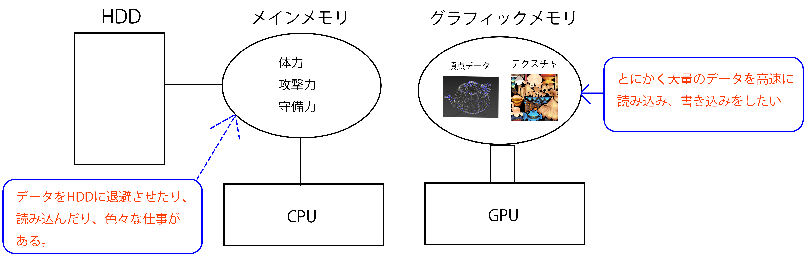
下記は、私が使っているPCのメモリのスペック表です。メインメモリはDDR4、グラフィックメモリはGDDR5になっています。データを読み込む速度の指標となるメモリ帯域が、メインメモリは42.7GB/sであるのに対して、グラフィックメモリは192.2GB/sと約4.5倍の速度になっています。

ここまで、CPUとGPUとでメモリは分かれていているものだと説明してきました。しかし、分かれていることによりプログラムは複雑になり読みにくくなってしまいます。CPUとGPUのメモリを統合してしまえば、プログラムはシンプルになるのですが、1.2.2で説明したように、CPUとGPUとで最高性能を求めると、メモリに求める要件というものが異なってくるため、ハードウェア的に統合することは難しいのが現実です。そこで、ソフトウェア的に、プログラマーから見た場合はあたかもメモリが統一されているかのように振る舞うことができる、ユニファイドメモリアーキテクチャが登場しました。

//頂点バッファの内容をグラフィックメモリにコピー。
memcpy(m_vertexBuffer, srcVertices, vertexBufferSize);
しかし、DirectX12では、基本的にメモリは分かれている前提でのプログラミングを行うようになっています。
Intel HD Graphicsなどのcpuに統合されているGPUでは、グラフィックメモリというものは用意されておらず、CPUが使用しているメインメモリの一部を使用するような形になります。そのため、統合プロサッサは真のユニファイドメモリアーキテクチャといえるのですが、メモリ帯域が足りない、メモリの容量も足りないと言った問題を抱えてしまうため、パフォーマンスの面ではどうしても単体のGPUに劣ってしまいます。
ここまでCPUとGPU、メインメモリとグラフィックメモリについて学んできました。3DCGを画面に表示するためには、絵を描きなさい！と命令を出す司令塔のCPUと絵を描くことに特化したアーティストのGPUの二つのプロセッサが存在していることを学びました。では、もう少し具体的に、最終的に絵が出るまでどのような流れになっているのかを見ていきましょう。
絵を描くためにはGPUに対して絵を描きなさい！と命令を出す必要があります。この命令はドローコールと呼ばれます。Unityなどでゲームを作ったことがある方なら聞いたことがあるのではないかと思います。「処理を早くするためにはドローコールを減らしなさい」と言われているのを聞いたことがあるのではないでしょうか。このドローコールの最適化に関しては、最適化のチャプターで詳しく説明します。 さて、少しGPUの気持ちになって考えてみてください。あなたは「絵を描きなさい！」と命令されました。さてどんな絵を描けばいいのでしょうか？かわいい女の子のキャラクターを描けばいいのでしょうか？もしくは、カッコいい男の子のキャラクター、ひょっとすると可愛らしいゆるキャラかもしれません。「絵を描きなさい！」という命令だけでは、どんな絵を描けばいいのか分かりませんよね？なので、ドローコールを行う前に、どんな絵を描くのか？といった情報もGPUに教えてやる必要があります。下記のコードは犬の3Dモデルを描くためにドローコールを行う疑似コードです。
//犬のモデルの頂点バッファを設定する。
SetVertexBuffer( dogVertexBuffer );
//犬のモデルのテクスチャを設定する。
SetTexture( dogTexture ) ;
//ここまでに設定した内容でドローコールを実行。
Draw();
このコードはあくまでも疑似コードなので、実際のコードはここまでシンプルではありませんが、ドローコールに必要な情報を端的に表しています。3Dモデルの絵を描いてもらうためには、頂点座標、模様を表すテクスチャなどが必要になります。このドローコールが実行されるとGPUは絵を描きだすわけです。
CPUからドローコールが実行されると、そこからGPUは絵を描き始めるわけです。この時、GPUは決められた手順で絵を描いていきます。この絵を描くための手順がレンダリングパイプラインと呼ばれています。例えば、あなたが絵を描くときは下記のような手順を踏むのではないでしょうか。
これと同じように、GPUも画面に絵を表示するまでの決められた手順というものがあります。これがレンダリングパイプラインと呼ばれているものです。この手順は近年、非常に複雑になってきているのですが、ここでは手順を必要最小限にして説明にとどめておきます。さらに詳しい話は、Chpater8のレンダリングパイプライン発展で説明します。
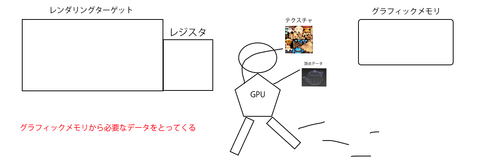

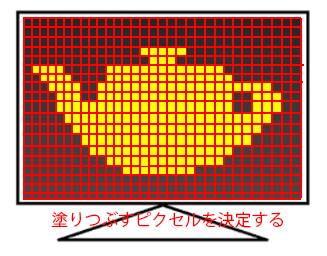
これらがGPUが行う仕事、レンダリングパイプラインを簡単に説明したものです。まず、入力アセンブラは絵を描くために必要な頂点バッファやインデックスバッファと呼ばれるデータを準備します。続いて、頂点シェーダーで頂点座標にワールド行列、ビュー行列、プロジェクション行列を乗算して、スクリーン空間に変換します。スクリーン空間に変換できたら、ラスタライザで絵を表示するために塗りつぶす必要があるピクセルを決定します。最後にピクセルシェーダーで陰影の計算などを行ってピクセルカラーを決定してピクセルを塗りつぶしていきます。 これらの仕事はステージと呼ばれます。この中で、頂点シェーダーとピクセルシェーダーは、プラグラマが自由にプログラミングできるステージとなっており、非常に高い柔軟性を持っています。一方ラスタライザや入力アセンブラは、ある程度固定化されたステージで、プログラマが自由にプログラミングすることはできません。これらのステージについてまとめたものが表1.3.1です。
表1.3.1
| ステージ名 | 説明 | 柔軟性 |
|---|---|---|
| 入力アセンブラ | データの準備 | 低い |
| 頂点シェーダー | 座標変換 | 高い |
| ラスタライザ | 塗りつぶすピクセルの決定 | 低い |
| ピクセルシェーダー | ピクセルカラーの計算 | 高い |
このうち、頂点シェーダーとピクセルシェーダーは本書のメインテーマとなっており、Chapter2以降でさらに詳しく見ていくことにします。
入力アセンブラはCPUからドローコールが実行されると、GPUが真っ先に実行する仕事です。入力アセンブラの仕事は、絵を描くためのデータを準備することです。準備するデータは頂点バッファ、インデックスバッファ、入力レイアウト、プリミティブタイプなどのデータです。ドローコールが実行されると、GPUはグラフィックメモリから必要なデータをレジスタという場所に運んできます。
[図?.? グラフィックメモリから必要なデータを運んでいる]
[図?.? 必要なデータをレジスタに運ぶ]

レジスタとは、非常に高速に読み書きができるメモリです。グラフィックメモリはメインメモリに比べて高速だという話をしましたが、レジスタはさらに高速です。ですので、絵を描くときには毎回グラフィックメモリにデータを参照しに行くのではなく、一旦レジスタにデータを運んできて、そこからデータを参照することで処理の高速化を実現しています。
このステージでは、3Dモデルの頂点座標をスクリーン空間に変換します。
処理の詳しい説明はChapter2の頂点シェーダー入門で説明しますので、ここでは簡単にだけ説明しますが、Blender、3dsMax、mayaなどといった3DCGソフトウェアで作成された3Dモデルをテレビ画面など表示するために、それらの頂点をスクリーン空間に変換する必要があります。このときに、ベクトル(座標)と行列の乗算が行われて、座標変換が行われています。ですので、先ほどの1～3ではベクトルと行列の乗算が行われていることになります。
ローカル座標系の頂点をワールド座標系に変換する。
→ ワールド座標系の座標 ＝ ローカル座標系の座標 × ワールド行列
ワールド座標系の頂点をカメラ座標系に変換する。
→ カメラ座標系の座標 ＝ ワールド座標系の座標 × カメラ行列
カメラ座標系の頂点をスクリーン座標系に変換する。
→ スクリーン座標系の座標 ＝ カメラ座標系の座標 × プロジェクション行列
さて、確かにスクリーン空間への座標変換が頂点シェーダーの仕事なのですが、この処理を行うだけであるならば、プログラマブルである必要はありません。プログラマブルであるということは、自由にプログラミングができるわけなので、極端に言えば、必ずしも座標変換する必要はないのです！これについてはChapter2以降で詳しく見ていきます。ここでは、頂点シェーダーというのは、頂点座標をスクリーン空間に変換しているのだと理解しておいてください。
ラスタライザは頂点シェーダーで座標変換された3Dモデルを画面に表示するために、塗りつぶす必要があるピクセルを決定します。
ラスタライザは頂点シェーダと違い、プログラマブルではなく、固定的なステージです。ただし、柔軟性が全くないわけではなく、いくつかの設定で処理を変更することができます。例えば下記のような設定があります。
この設定では、ピクセルの塗りつぶし方を変更することができます。DirectX12には2種類の塗りつぶしモードがあり、D3D12_FILL_MODE_WIREFRAMEとD3D12_FILL_MODE_SOLIDがあります。 D3D12_FILL_MODE_WIREFRAMEを設定した場合はワイヤーフレームモードで塗りつぶされます。 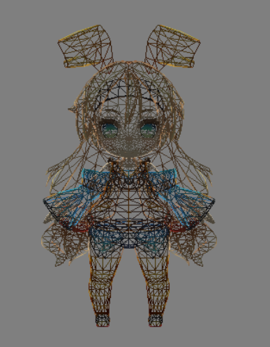
D3D12_FILL_MODE_SOLIDを設定した場合は、皆さんのイメージ通りの塗りつぶしが行われます。 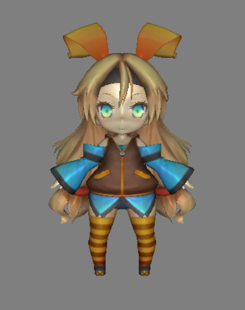
この設定では、ポリゴンカリングを設定することができ、DirectX12では、D3D12_CULL_MODE_FRONT(ポリゴンの表側をカリング)、D3D12_CULL_MODE_BACK(ポリゴンの裏側をカリング)、D3D12_CULL_MODE_NONE(カリングなし)が設定できます。 D3D12_CULL_MODE_FRONTを設定するとポリゴンの表側が塗りつぶされません。 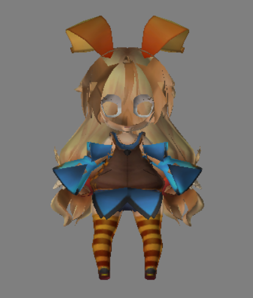
D3D12_CULL_MODE_BACKを設定するとポリゴンの裏側が塗りつぶしされません。 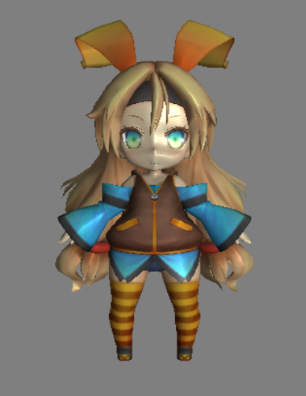
D3D12_CULL_MODE_NONEを設定するとカリングなしになります。 D3D12_CULL_MODE_FRONTを指定すると、ポリゴンの表面が表示されなくなるので、異様な見た目になります。D3D12_CULL_MODE_BACKを指定すると、ポリゴンの裏面が表示されなくなるので、普段皆さんが見慣れている見た目になります。D3D12_CULL_MODE_NONEを指定すると、表面も裏面も表示されるので、今回のケースだとD3D12_CULL_MODE_BACKと同じ結果になります。 ポリゴンのカリング設定を適切に行うと無駄な処理が行われなくなります。今回のケースですとポリゴンの裏面を描画する必要はないので、D3D12_CULL_MODE_BACKを指定してやればいいわけです。さて、ここで疑問がでてきます。ポリゴンの裏面を描画するケースや、両面描画するケースってあるの？って思いませんでしたか？この疑問については、【todo あとで関連するチャプターを記入する】で取り上げさせてもらいますので、楽しみにしていてください。
ピクセルシェーダーはライスタライザで決定されたピクセルのカラーを決定するステージです。
Chapter1でレンダリングパイプラインについて学びました。このパイプラインには処理ごとにステージ分けされていて、柔軟性が低い、入力アセンブラやラスタライザなどのステージは固定機能ステージと呼ばれています。一方柔軟性が高い、頂点シェーダーやピクセルシェーダーなどのプログラマブルステージと呼ばれています。DirectXでプログラマブルステージが用意されたのはDirectX8以降で、それ以前のバージョンでは固定機能ステージしか用意されていませんでした。表1.3.1で各ステージの柔軟性を見ましたが、表2.1のようにすべてのステージで柔軟性が低いになっていると考えてください。DirectX7以前のバージョンとステージ名は違うのですが、対比させるためにあえて同じにしています。
表 2.1
| ステージ名 | 説明 | 柔軟性 |
|---|---|---|
| 入力アセンブラ | データの準備 | 低い |
| 頂点処理(現在の頂点シェーダーに相当) | 座標変換 | 低い |
| ラスタライザ | 塗りつぶすピクセルの決定 | 低い |
| ピクセル処理(現在のピクセルシェーダーに相当) | ピクセルカラーの計算 | 低い |
頂点変換とピクセルカラー決定の固定機能はDirectX9までは存在していましたが、DirectX10で削除され、それ以降は固定機能は用意されなくなっています。これはDirectX以外のグラフィックスAPIの、Valukan、OpenGLES、Sonyや任天堂などが提供する専用SDK(PS4、PS3、WiiUなどで使用できるDirectXのようなもの)でも同じで、頂点変換やピクセルカラー決定の固定機能はグラフィックプログラミングの世界では過去のものとなっています。
では、DirectX7以前のレンダリングパイプラインについて見ていきましょう。以前のレンダリングパイプラインでもCPUでドローコールが実行されることで、GPUは動き出します。図2.1のようにセットされた頂点バッファから頂点をフェッチ(取り出して)して、その頂点の座標をスクリーン座標系に変換して、塗りつぶすピクセルを決定して、そのピクセルの色を決定します。
図2.1 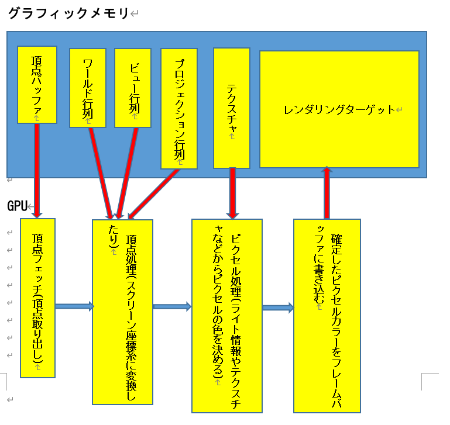
DirectX9までは3Dモデルの頂点をスクリーン空間に変換する頂点変換、ラスタライズ後に3Dモデルをスクリーン上で表示するためのピクセルカラーの決定といった処理をGPUがハードウェア的に用意してくれていました。しかし、DirectX10以降では、この機能はハードウェア側で用意されなくなり、プログラマーがプログラミングする必要が出てきました。そして、そのプログラムがシェーダーと呼ばれています。
シェーダーの導入でレンダリングパイプラインの頂点処理とピクセル処理を自分でプログラミングして、自由に頂点処理やピクセル処理を実装することができるようになりました。つまり、自分で頂点座標をスクリーン座標系へ変換したり、ピクセルカラーを決定するプログラムを書くことになります。つまりDirectX10以降ではシェーダーを書かないと絵は表示できなくなりました。図2.2はシェーダー導入後のレンダリングパイプラインです。
図2.2

この図のように、頂点処理とピクセル処理がシェーダーをロードして実行するという内容に変わっています。ではなぜ固定機能が削除されてシェーダーが登場したのでしょうか？せっかく用意されていたものがなくなって、同じものを作らないと絵を表示できなくなったなんて面倒だと思いませんか？では、シェーダーが生まれてきた背景を学んで行きましょう。
固定機能しか存在していなかったDirectX7までは、マイクロソフトが用意したグラフィック表現しか行うことができませんでした。ピクセルカラーの決定で重要な要素としてライティングがあります。DirectX9までに用意されていた陰影計算モデルはディフューズライト、スペキュラライト、アンビエントライトくらいです。これらのライトの詳しい話は後々行うので、ここでは詳しく説明はしませんが、これらのライトで実現可能なグラフィック表現というと、せいぜい図2.3程度のものです。
図2.3
しかし、これらの機能だけでは、図2.4のようなアニメっぽい表現の実現は困難です。
図2.4 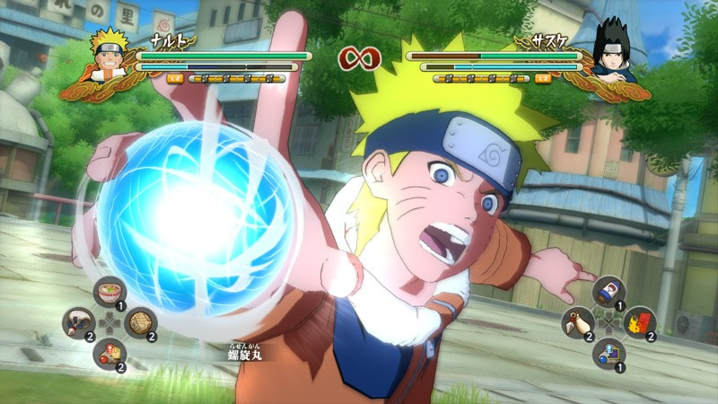 このようなアニメ調の表現を実現するためには特殊なライティングアルゴリズムを実装する必要があります。しかし、シェーダーが生まれる前は新しいグラフィック表現を実現するためには、DirectXのバージョンアップを待つ必要がありました。また、ゲーム開発者という人たちは、他とは違うユニークな表現を行いたがるものです。その人たちの要望にすべて答えようとすると、DirectXのAPIはどんどん肥大化していくことになります。そこで、DirectXはバージョン8から開発者が行いたい表現をすぐに実現できるように、プログラマブルシェーダーを採用した設計に舵をとることとなります。
では、いよいよ実際にシェーダーを書いていってみましょう。まずはシンプルな三角形を表示するだけのプログラムを作ってみましょう。Sample_02_04/Sample_02_04.slnを立ち上げてください。VisualStudioのプロジェクトが立ち上がったら図2.6のボタンを押すかF5キーを押してプログラムを実行してください。すると図2.7のような灰色のウィンドウが立ち上がります。
図2.6

図2.7

さて、頂点シェーダーの話に入る前に、Windowsアプリのプログラムについて見ていこうと思います。Windowsプログラミングはそれだけで書籍を一冊余裕で書けるくらいのボリュームがあるのですが、本書のメインはシェーダープログラムですので、ここはそこまでは掘り下げません。まず、VisualStudioのソリューションエクスプローラーからmain.cppを開いて下さい。
図2.8
 もし、ソリューションエクスプローラーが表示されていない場合は、図2.4.2を参考にして、ソリューションエクスプローラーを表示してください。
もし、ソリューションエクスプローラーが表示されていない場合は、図2.4.2を参考にして、ソリューションエクスプローラーを表示してください。
図2.9

main.cppを開けたら、13行目からのwWinMain関数を見てください。
[リスト2.1 main.cpp(13行目～)]
///////////////////////////////////////////////////////////////////
// ウィンドウプログラムのメイン関数。
///////////////////////////////////////////////////////////////////
int WINAPI wWinMain(HINSTANCE hInstance, HINSTANCE hPrevInstance, LPWSTR lpCmdLine, int nCmdShow)
{
・
・
・
・
}
C++、C#、Javaなどでコンソールアプリケーションを作成したときに、メイン関数というものを書いたことがあると思います。メイン関数はエントリーポイントと呼ばれる特殊な関数で、プログラムのスタート地点となる関数です。Windowsプログラムにもエントリーポイントがあって、今回のサンプルですとwWinMain関数がそれにあたります。
プログラムが起動すると、三角形を表示するための準備を行うプログラムがmain.cppの25行目(リスト 2.2)から記述されています。よく分からないプログラムだと思いますが、あまり気にしなくて構いません。簡単にだけ説明します。
[リスト2.2 main.cpp(25行目～)]
//１．ルートシグネチャを作成。
RootSignature rootSignature;
InitRootSignature(rootSignature);
//２．シェーダーをロード。
Shader vs, ps;
vs.LoadVS(L"Assets/shader/sample.fx", "VSMain");
ps.LoadPS(L"Assets/shader/sample.fx", "PSMain");
//３．パイプラインステートを作成。
PipelineState pipelineState;
InitPipelineState(pipelineState, rootSignature, vs, ps);
//４．三角形の頂点バッファを作成。
//頂点配列を定義。
SimpleVertex vertices[] = {
{ -0.5f, -0.5f, 0.0f },
{ 0.0f, 0.5f, 0.0f },
{ 0.5f, -0.5f, 0.0f },
};
VertexBuffer triangleVB;
triangleVB.Init(sizeof(vertices), sizeof(vertices[0]));
triangleVB.Copy(vertices);
//５．三角形のインデックスバッファを作成。
//インデックス配列
short indices[] = {
0,1,2
};
IndexBuffer triangleIB;
triangleIB.Init(sizeof(indices), 2);
triangleIB.Copy(indices);
頂点バッファやシェーダーのロードなどの準備が終わったら、次は三角形を表示するためのドローコールです。ドローコールはmain.cppの74行目(リスト2.3)から記述されています。ここで行われているのは「1.3.1 ドローコール」に書かれていた疑似コードと相当します。ドローコールを実行する前に、これから描画する絵の情報を設定しています。
[リスト2.3 main.cpp(25行目～)]
//１．ルートシグネチャを設定。
renderContext.SetRootSignature(rootSignature);
//２．パイプラインステートを設定。
renderContext.SetPipelineState(pipelineState);
//３．プリミティブのトポロジーを設定。
renderContext.SetPrimitiveTopology(D3D_PRIMITIVE_TOPOLOGY_TRIANGLELIST);
//４．頂点バッファを設定。
renderContext.SetVertexBuffer(triangleVB);
//５．インデックスバッファを設定。
renderContext.SetIndexBuffer(triangleIB);
//６．ドローコール
renderContext.DrawIndexed(3);
では、続いてGPU側のプログラムを見ていきましょう。
DirectXではHLSL(High Level Shader Language)という言語を使って、シェーダ―プログラミングを行います。文法はC言語によく似ているので、C言語系列の言語(C++、Java、C#など)を勉強した人であれば言語仕様は比較的簡単に理解できると思います。頂点シェーダーもHLSLで記述されます。 頂点シェーダーは3Dモデルの全ての頂点に対して実行されるプログラムです。2.4.3のドローコールで設定されている3Dモデルの頂点数が100頂点の場合は、設定されている頂点シェーダーが100回実行されます(厳密には少し違いますが・・・)。では、頂点シェーダーを見ていきましょう。Sample_02_04/Assets/shader/sample.fxを開いてください。
[リスト2.4 sample.fx(9行目～)]
//頂点シェーダー。
//１．引数は変換前の頂点情報。
//２．戻り値は変換後の頂点情報。
//３．VSMainは
VSOutput VSMain(VSInput In)
{
VSOutput vsOut = (VSOutput)0;
return vsOut;
}
9行目からのプログラムが頂点シェーダーのエントリーポイントです。VSMainという関数が頂点の数分だけ実行されます。では、もう少し詳細に見ていきましょう。
頂点シェーダーの典型的な処理は、ワールド行列、ビュー行列、プロジェクション行列を使って、頂点座標をスクリーン空間に変換することです。しかし今回のサンプルでは頂点シェーダーは何もしていません。ですからサンプルを実行しても灰色のウィンドウが表示されるだけなのです。
では、Sample.fxを改造して、変換後の頂点データを返せるようにしてみましょう。リスト2.5のように頂点シェーダーを改造して下さい。
[リスト2.5 sample.fx(9行目～)]
//頂点シェーダー。
//１．引数は変換前の頂点情報。
//２．戻り値は変換後の頂点情報。
//３．VSMainは
VSOutput VSMain(VSInput In)
{
VSOutput vsOut = (VSOutput)0;
//入力された頂点座標を変換せずに出力する。
vsOut.pos = In.pos;
return vsOut;
}
リスト2.5のプログラムを入力すると図2.10のような三角形が表示されたと思います。
図2.10
 今回入力してもらった頂点シェーダーは、頂点座標の変換は行わずに、そのまま出力しています。では、なぜ変換していないのに画面に絵が表示されたのでしょうか？答えは入力された頂点データがすでに変換済みのデータになっていたからです。たまたまスクリーンに映せる座標になっていたと考えてもらっても構いません。
今回入力してもらった頂点シェーダーは、頂点座標の変換は行わずに、そのまま出力しています。では、なぜ変換していないのに画面に絵が表示されたのでしょうか？答えは入力された頂点データがすでに変換済みのデータになっていたからです。たまたまスクリーンに映せる座標になっていたと考えてもらっても構いません。
では、次は頂点座標を２倍にして出力座標に渡してみましょう。リスト2.6のように頂点シェーダーを改造してください。 [リスト2.6 sample.fx(9行目～)]
//頂点シェーダー。
//１．引数は変換前の頂点情報。
//２．戻り値は変換後の頂点情報。
//３．VSMainは
VSOutput VSMain(VSInput In)
{
VSOutput vsOut = (VSOutput)0;
//頂点座標を拡大して出力座標に渡す
vsOut.pos = In.pos;
vsOut.pos.x *= 2.0f; //X座標を２倍にする。
vsOut.pos.y *= 2.0f; //Y座標を２倍にする。
return vsOut;
}
リスト2.6のプログラムを入力すると図2.10のような三角形が表示されたと思います。 図2.10 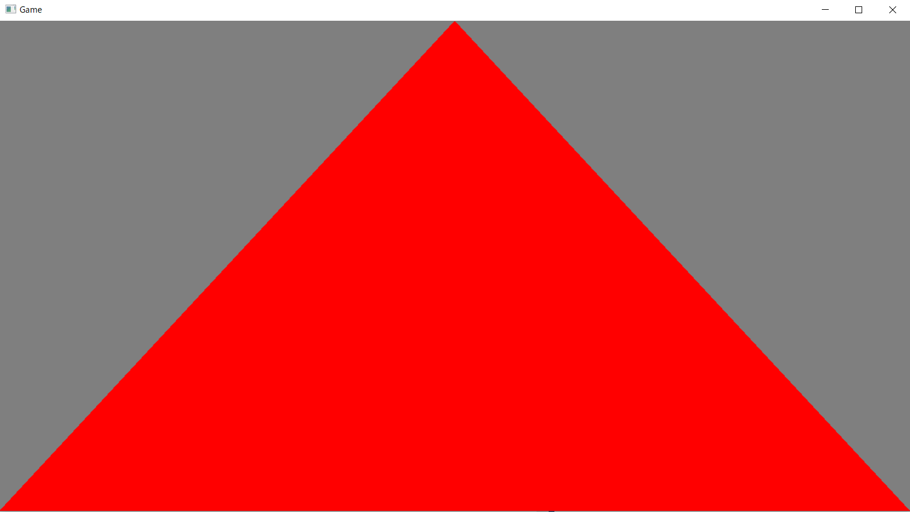
図2.12のように表示できるように、頂点シェーダーを改造してください。
図2.12

答え:Sample_02_04/Assets/shader/sample_2_4_7.fx
では、ユーザー定義の入力頂点構造体について見ていきましょう。入力頂点構造体は次のように定義されています。
//頂点シェーダーへの入力頂点構造体。
struct VSInput{
float4 pos : POSITION;
};
C言語の構造体と非常によく似ていますが、少しだけ違う点があります。では、その違いについて見ていきましょう。
まず、HLSLにはfloat4という型があります。float4はx,y,z,wからなる４要素のベクトル型です。下記のような構造体として定義されていると考えるとイメージしやすいのではないでしょうか。
struct float4{
float x;
float y;
float z;
float w;
};
シェーダープログラミングでは、ベクトルと行列の演算を多用するため、それらを扱うための型が言語として組み込まれています。表2.2は利用頻度の高い、HLSL独自の組み込み型のリストです。
表 2.2
| 型名 | 説明 |
|---|---|
| float2 | float型のx,yの２要素を持つ浮動小数ベクトル型 |
| float3 | float型のx,y,zの２要素を持つ浮動小数ベクトル型 |
| float4 | float型のx,y,z,wの２要素を持つ浮動小数ベクトル型 |
| int2 | int型のx,yの２要素を持つ浮動小数ベクトル型 |
| int3 | int型のx,y,zの２要素を持つ浮動小数ベクトル型 |
| int4 | int型のx,y,z,wの２要素を持つ浮動小数ベクトル型 |
| float3x3 | float型の３×３行列 |
| float4x3 | float型の４×３行列 |
| float4x4 | float型の４×４行列 |
いきなり大量に型が出てきたので、辟易としたかもしれませんが、ベクトル型とマトリクス型があるということだけ押さえておけば十分です。
セマンティクスは、頂点のどのデータを頂点シェーダーで使用するのかを指定するためのものになります。3Dモデルの頂点が持っているデータというのは座標だけではありません。色を表すカラー、向きを表す法線、サンプリングするテクスチャの位置を表すUV座標など多岐にわたります。表2.3は代表的な頂点データです。
表 2.3
| 名前 | 説明 |
|---|---|
| 座標 | 頂点の位置を表すデータ。x,y,zの３成分があれば十分なのだが、行列演算との関係上wを含んだ４要素で扱われることが多い。 |
| 法線 | 頂点の向きを表すデータ。x,y,zの３成分で扱われることが多い。 |
| 接ベクトル | 法線マップを利用した法線の算出の際に使用される。 |
| カラー | 頂点色を表すデータ。x,y,z,wの４成分で扱われることが多い。xがR成分、yがG成分、zがB成分、wがα成分になる。 |
| UV座標 | ポリゴンに貼り付けるテクスチャの位置を表す座標。x,yの２成分で扱われることが多い。 |
| スキンウェイト | スキンアニメーションを行うときに使用される。関連付けされているボーンへの影響度。 |
| スキンインデックス | スキンアニメーションを行うときに使用される。関連付けされているボーンの番号。 |
その他にも頂点データはいくつか種類があります。実は頂点データは複数のデータの集合体なのです。次のプログラムは頂点バッファをC++で定義したものです。
//頂点構造体
struct Vertex{
float position[4]; //座標
float normal[3]; //法線
float color[4]; //カラー
float uv[2]; //UV座標
};
//頂点バッファ
Vertex vertexBuffer[5];
次の図2.13は頂点バッファを図示化したものです。
図2.13

さて、ここから本題です。図2.13のような頂点バッファと、リスト2.7のような頂点シェーダーが設定されてドローコールが実行されている場合を考えてください。 [リスト2.7]
//頂点シェーダーへの入力頂点構造体。
struct VSInput{
float4 hoge : POSITION;
};
//頂点シェーダーの出力。
struct VSOutput{
float4 pos : SV_POSITION;
};
//頂点シェーダー。
VSOutput VSMain(VSInput In)
{
VSOutput vsOut = (VSOutput)0;
vsOut.pos = In.hoge; //1.In.hogeは頂点のどのデータを参照している？？？
return vsOut;
}
この時、頂点シェーダーに入力されているIn.ほhogeは頂点データの何を引っ張ってきているのでしょうか？座標でしょうか？法線でしょうか？カラーでしょうか？答えは座標です。なぜ座標のデータが引っ張ってこれているかというと、頂点データから座標を取ってきなさいとセマンティクスで指定されているからです。
//頂点シェーダーへの入力頂点構造体。
struct VSInput{
float4 hoge : POSITION; //これがセマンティクス！！！
};
下記のようにセマンティクスが指定されている場合は、hoge2はUV座標のデータを取ってきています。
//頂点シェーダーへの入力頂点構造体。
struct VSInput{
float4 hoge : POSITION;
float2 hoge2 : TEXCOORD;
};
表2.4は代表的な入力セマンティクスの一覧です。 表 2.4
| 名前 | 説明 |
|---|---|
| POSITION | オブジェクトスペースの頂点座標 |
| COLOR | 頂点カラー |
| NORMAL | 法線ベクトル |
| TANGENT | 接ベクトル |
| TEXCOORD | UV座標 |
| BLENDWEIGHT | スキンアニメーションで使用するブレンディング率 |
| BLENDINDICES | スキンアニメーションで使用するボーン番号 |
このようにセマンティクスの役割は、シェーダーでどの頂点データを使用するのかを指定することとなります。
最後に出力頂点構造体です。出力頂点構造体は頂点シェーダーから出力されるデータで、かならずしも入力頂点構造体とイコールではありません。また、この構造体もユーザー定義です。リスト2.7のプログラムであれば、VSOutput構造体が該当します。
出力頂点構造体のデータにもセマンティクスが指定されています。これは出力されるデータをどのようなデータとして扱うかを指定したものです。頂点シェーダーから出力されたデータはピクセルシェーダーに引き渡されます。この時に、頂点シェーダーから出力されたデータとバインドするために必要となります。考え方は入力構造体のセマンティクスと同じです。一点だけ注意が必要なのは、出力データとして座標を指定したい場合はSV_Positionを指定する必要があります。出力セマンティクスにPOSITIONを指定すると期待した動作にはならないので注意が必要です。
2.4節で頂点シェーダーについて見てきました。3Dモデルの頂点座標がスクリーン空間に変換されると、画面上に3Dモデルのポリゴンが表示される位置が確定します。ポリゴンを表示する位置が確定すると、続いてラスタライザステージで、そのポリゴンを表示するために塗りつぶす必要のあるピクセルが決定します。塗りつぶすピクセルが決定すると、その一つ一つのピクセルに対してピクセルシェーダーが実行されます。例えば、塗りつぶすピクセルの数が300ピクセルだった場合、ピクセルシェーダーは300回実行されます。頂点シェーダーが設定されている頂点の数分だけ実行されている関係とよく似ています。では、ピクセルシェーを見てみましょう。Sample_02_05/Assets/shader/sample.fxを開いてください。
[リスト2.8 sample.fx(21行目～)]
//ピクセルシェーダー。
float4 PSMain( VSOutput vsOut ) : SV_Target0
{
return float4( 1.0f, 0.0f, 0.0f, 1.0f);
}
18行目からのプログラムがピクセルシェーダーのエントリーポイントです。PSMainという関数が塗りつぶすピクセルの数分だけ実行されます。ピクセルシェーダーも頂点シェーダーと同様にHLSL言語で記述されています。では、もう少し詳細に見ていきましょう。
ピクセルシェーダーの典型的な処理はピクセルの陰影付けです。しかし、ピクセルシェーダーは頂点シェーダーと異なり、多様な処理を行います。ですので、ここではピクセルのカラーを決定するということだけ覚えておいてください。
では、sample.fxをリスト2.9のように改造して、三角形を青色にできるようにしてみましょう。 [リスト2.9 Sample.fx(21行目～)]
//ピクセルシェーダー。
float4 PSMain( VSOutput vsOut ) : SV_Target0
{
return float4( 0.0f, 0.0f, 1.0f, 1.0f);
}
続いて、sample.fxをリスト2.10のように改造して、三角形を緑色にできるようにしてみましょう。 [リスト2.10 Sample.fx(21行目～)]
//ピクセルシェーダー。
float4 PSMain( VSOutput vsOut ) : SV_Target0
{
return float4( 0.0f, 1.0f, 0.0f, 1.0f );
}
さて、ここまでのハンズオンでピクセルシェーダーの戻り値が光の３原色を表していることは何となく分かったかもしれません。念のため光の３原色について説明をしておくと、光の三原色とは赤と緑と青のことです。そして、この３つの色を混ぜ合わせることで色を表現するのがＲＧＢ法です。各色には発色の強さがあり、最小で0.0、最大で1.0になります。ちなみにフォトショップやWindows標準ペイントツールなどでは、最小で0、最大で255で表現されます。ですが、シェーダーでは0.0～1.0の範囲で正規化されています。正規化されている方が色々な計算で都合がいいからだと思われます。さて、残りのαですが、ペイントツールではαは不透明度として扱われているともいますが、ここで出力されるαは必ずしも不透明度な分けではありません。これはアルファブレンディングの設定によって変わります。この詳細はChapter 7のレンダリングパイプライン発展で説明します。
図2.14のように、三角形を黄色で表示できるように、sample.fxを改造して下さい。 (ヒント:黄色は赤と緑を混ぜ合わせることで表現できます。
図2.14 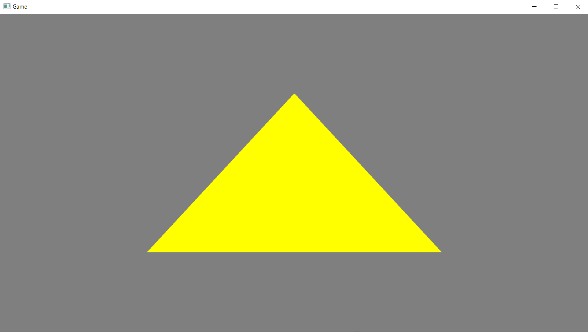
答え：Sample_02_05/Assets/shader/sample_2_5_4.fx
ピクセルシェーダーに渡されるデータは、頂点シェーダーから出力されたデータを元に補完されたデータが渡されています。頂点シェーダーで計算されるのはポリゴンの３頂点のデータのみです。しかし、そのポリゴンを表現するために塗りつぶす必要があるピクセルは100個かもしれません。その時、ピクセルシェーダーに�����どの頂点のデータを渡せばいいのでしょうか。答えは、その３つの頂点のデータを使って、各ピクセルシェーダーに渡すデータを補完しています。図2.15を見てください。
図2.14
 このポリゴンは頂点シェーダーでカラーの情報も出力しており、頂点ごとに異なるカラーを出力しています。この時、１と２のピクセルのカラーはどのように計算されるのでしょうか。赤でしょうか青でしょうか？正解は３つの頂点を使用して補完して計算されるになります。例えば１のピクセルであれば、恐らく赤と青のピクセルが半々に混ざった紫のっぽいカラーになります。２のピクセルは赤と青と緑が均等に混じったグレーのようなカラーになります。実はこの補完の計算はラスタライザで行われています。ラスタライザは塗りつぶすピクセルを決定するだけではなく、頂点シェーダーから渡されたデータを各ピクセルに渡すために補完するという仕事もあったのです。
このポリゴンは頂点シェーダーでカラーの情報も出力しており、頂点ごとに異なるカラーを出力しています。この時、１と２のピクセルのカラーはどのように計算されるのでしょうか。赤でしょうか青でしょうか？正解は３つの頂点を使用して補完して計算されるになります。例えば１のピクセルであれば、恐らく赤と青のピクセルが半々に混ざった紫のっぽいカラーになります。２のピクセルは赤と青と緑が均等に混じったグレーのようなカラーになります。実はこの補完の計算はラスタライザで行われています。ラスタライザは塗りつぶすピクセルを決定するだけではなく、頂点シェーダーから渡されたデータを各ピクセルに渡すために補完するという仕事もあったのです。
Sample_05は頂点データとしてカラーが設定されていて、リスト2.11のように頂点シェーダーから出力されています。 [リスト2.11 Sample.fx(1行目～)]
//頂点シェーダーへの入力頂点構造体。
struct VSInput{
float4 pos : POSITION;
float3 color : COLOR; //頂点からカラーのデータを引っ張ってくる。
};
//頂点シェーダーの出力。
struct VSOutput{
float4 pos : SV_POSITION;
float3 color : COLOR; //カラーの情報も出力する。
};
//頂点シェーダー。
//１．引数は変換前の頂点情報。
//２．戻り値は変換後の頂点情報。
VSOutput VSMain(VSInput In)
{
VSOutput vsOut = (VSOutput)0;
vsOut.pos = In.pos;
vsOut.color = In.color; //カラーの情報を出力する。
return vsOut;
}
では、ピクセルシェーダーを下記のリスト2.12のように書き換えて、ラスタライザで補完されたデータをピクセルカラーとして出力するようにしてください。図2.16のようになったら正解です。 [リスト2.11 Sample.fx(21行目～)]
//ピクセルシェーダー。
float4 PSMain( VSOutput vsOut ) : SV_Target0
{
float4 color;
color.x = vsOut.color.x;
color.y = vsOut.color.y;
color.z = vsOut.color.z;
color.w = 1.0f;
return color;
}
図2.16

Chapter1で頂点シェーダーの仕事は、「3Dモデルの頂点をスクリーン空間に座標変換することである」ということを学びました。そして、Chapter2で簡単な頂点シェーダーを書いてみました。しかしChapter2の頂点シェーダでは座標変換済みの頂点が設定されていたので、シェーダーで座標変換は行っていませんでした。しかし、3Dモデルのキャラクターを画面上で移動させるということは、そのモデルの頂点座標に対して座標変換を行うことになります。しかし、近年のゲームであれば、一つの3Dモデルで頂点数が10万を超えることも珍しくありません。これだけの数の頂点の座標変換をCPUで行うということは現実的ではなく、一般的に座標変換はGPUで行われます。
頂点の座標変換は行列とベクトルの乗算で計算されます。ベクトルに行列を乗算すると、別の空間にベクトルを変換することができます。ゲームでは大雑把に分類すると、スクリーンに絵を表示するために表3.1の行列が必要になります。
表3.1
| 名前 | 説明 |
|---|---|
| ワールド行列 | ワールド空間に変換するための行列 |
| カメラ行列 | カメラ空間に変換するための行列 |
| 透視投影行列 | スクリーン空間に変換するための行列 |
この３つの行列を頂点座標に乗算することで、３Ｄモデルをスクリーン空間に変換しているのです。変換の順番は、ワールド空間➡カメラ空間➡スクリーン空間です。これがそのまま乗算の順番になります。では、３つの座標変換を詳細に見ていきましょう。
ワールド行列は、3Dモデルをモデル空間からワールド空間に変換するための行列です。モデル空間というのは3DSMAx、Maya、Blenderなどの3DCGを作成するためのソフトウェアの空間です。この空間から、ゲームのワールドの空間に変換するための行列がワールド行列です。モデル空間では、多くの3Dモデルは足元が原点になります。もちろん、中にはモデルの中心が原点のものもありますし、遠く離れた場所が原点のモデルもあります。
図3.1 足元が原点

図3.2 原点が離れている 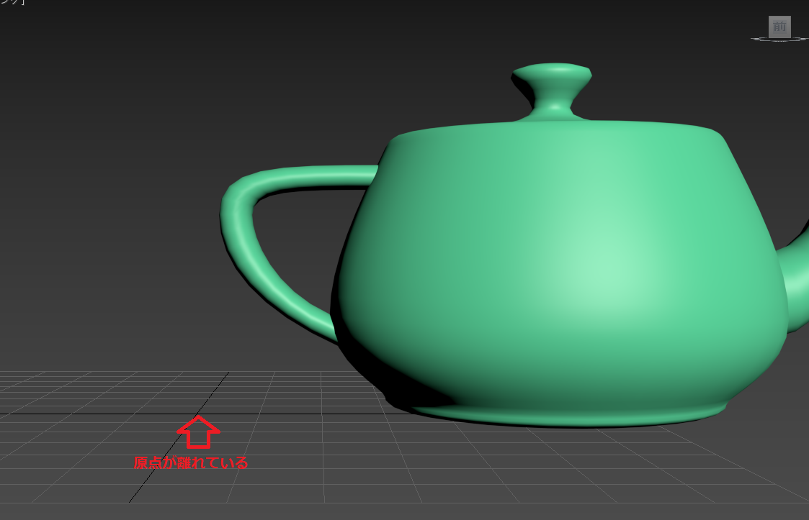
モデル空間はアーディストがどのように3Dモデルを作成するのか次第の空間になります。モデル空間では、3Dモデルの足元は原点になっているので、ゲームの世界を歩き回ることができません。そこで、キャラクターの座標、回転クォータニオン、拡大率などから作成されるワールド行列をモデルの頂点に乗算することで、ワールド空間に変換する必要があります。図3.3は3Dモデルがモデル空間にいる状態です。
図3.3 モデル空間

モデル空間にいる3Dモデルの全ての頂点座標にワールド行列を乗算することで、図3.4のように3Dモデルはワールド空間に移動することができるようになります。
図3.4 ワールド空間に変換 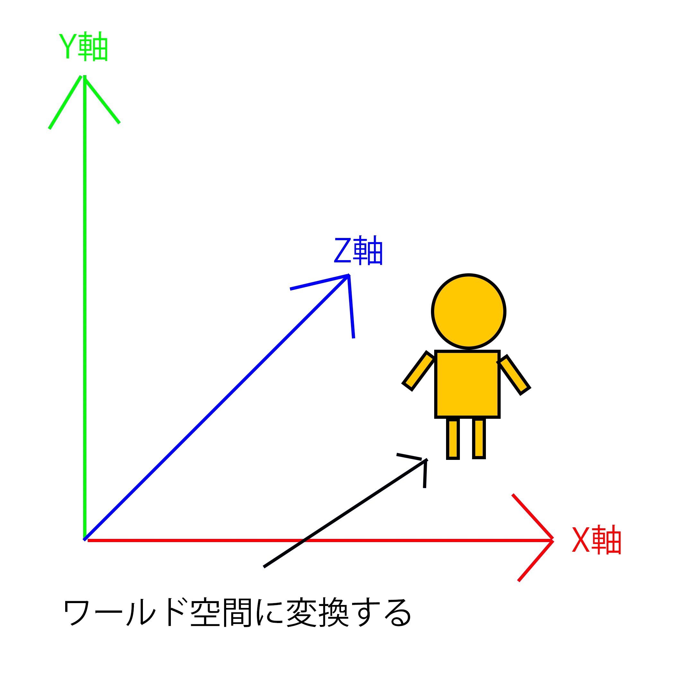
ワールド空間に変換することができたら、次はカメラ空間に変換します。カメラ空間はカメラを原点とする空間です。カメラ空間はカメラの場所を原点、カメラの横方向をＸ軸、上方向をＹ軸、前方向をＺ軸とする空間です。
図3.5 カメラ空間に変換
 3Dモデルをカメラ空間に変換するためには、3Dモデルの全ての頂点に対して、カメラ行列を乗算する必要があります。カメラ行列が乗算されると、3Dモデルの頂点はカメラを原点とした空間に変換されます。図3.3ですと、ワールド空間では(10,20,30)だった座標はカメラ空間では(0,0,30)になることを表しています。
3Dモデルをカメラ空間に変換するためには、3Dモデルの全ての頂点に対して、カメラ行列を乗算する必要があります。カメラ行列が乗算されると、3Dモデルの頂点はカメラを原点とした空間に変換されます。図3.3ですと、ワールド空間では(10,20,30)だった座標はカメラ空間では(0,0,30)になることを表しています。
カメラ空間に変換することができたら、次はスクリーン空間に変換します。正確には正規化されたスクリーン空間ですが、今は気にしなくて構いません。スクリーン空間はスクリーンの中心を原点とする2次元空間です。ワールド空間とカメラ空間は3次元空間だったのですが、スクリーン空間は2次元空間になります。
ここまでの話で、行列と頂点座標の乗算を行って空間変換を行い、画面に絵を出していることが分かりました。そして、行列と頂点座標の乗算を行っているのがGPUであることも分かりました。では、そもそも行列を作るのはCPUとGPUのどちらでしょうか？答えはCPUになります。ワールド行列を作成するためのキャラクターの座標、回転、拡大率や、カメラ行列を作成するための視点の位置、注視点の位置などの情報はCPUがアクセスできるメインメモリに載っています。また、行列と頂点の乗算の回数と比べると、行列を作成するための計算回数はそこまで多くありません。表3.2は10000頂点のモデルを表示するための計算回数を表しています。
表3.2
| 処理の名前 | 計算回数 | 計算するプロセッサ |
|---|---|---|
| ワールド行列の作成 | 1キャラにつき数回 | CPU |
| カメラ行列の作成 | 1フレームにつき数回 | CPU |
| 透視投影行列の作成 | 1フレームにつき数回 | CPU |
| 頂点座標とワールド行列の乗算 | 1キャラにつき10000回以上 | GPU |
| 頂点座標とカメラ行列の乗算 | 1キャラにつき10000回以上 | GPU |
| 頂点座標とスクリーン行列の乗算 | 1キャラにつき10000回以上 | GPU |
表3.2が示すように、行列の作成の計算量は数回となっており、それほど多くありません。また、これらの行列の作成はゲームロジックと密接に関連づいているため、CPU(C++)で計算されることがほとんどです。
さて、絵を表示するために必要な行列はCPU側で計算されることが分かりました。そして、GPU側でこの行列を利用して、頂点座標の変換を行っていました。しかし、CPUで計算されたデータは基本的にメインメモリに記憶されています。ですが、GPUがアクセスできるメモリはグラフィックメモリのみとなります。ここで、Chapter1で勉強したメモリ転送が必要になってくるのです。
DirectX12にはメインメモリからグラフィックメモリにデータを転送する仕組みとして定数バッファと呼ばれるものを用意しています。定数バッファはDirectX12のAPIを利用することで作成できます。メインメモリからグラフィックメモリへのデータのコピーもDirectX12のAPIを利用します。リスト3.1は定数バッファを利用する疑似コードです。
[リスト3.1 定数バッファを利用する疑似コード]
//GPUで使用する行列をまとめた構造体。
struct MatrixData{
Matrix worldMatrix; //ワールド行列
Matrix cameraMatrix; //カメラ行列
Matrix projMatrix; //透視変換行列
};
//メイン関数
int main()
{
MatrixData matData;
//グラフィックメモリ上に定数バッファを作成。
ConstantBuffer cb;
cb.Create( sizeof( matData ) );
//ゲームループ。
while(true){
・
・
・
//ワールド行列、カメラ行列、透視変換行列を計算する。
matData.worldMatrix.MakeWorldMatrix(
charaPos, charaRot, charaScale );
matData.viewMatrix.MakeViewMatrix( cameraPos, cameraTarget );
matData.projMatrix.MakeProjMatrix( nearPlane, farPlane );
//計算した行列データをグラフィックメモリにコピー
cb.Copy( matData );
}
}
定数バッファは作成しただけではGPUで使用することはできません。頂点バッファやインデックスバッファと同じようにドローコールを行う前に使用する前に設定する必要があります。DirectX12では定数バッファやテクスチャ、ストラクチャバッファなどをまとめて設定するための「ディスクリプタヒープ」というものが用意されています。ディスクリプタヒープは料理を運ぶトレイのようなものです。
図3.6

図3.6のようにトレイにおかず(定数バッファ、テクスチャ、ストラクチャバッファー)を乗せるようなイメージです。 リスト3.2はディスクリプタヒープを利用して絵を描く疑似コードです。 [リスト3.2 ディスクリプタヒープを利用する疑似コード]
//メイン関数
int main()
{
MatrixData matData;
//グラフィックメモリ上に定数バッファを作成。
ConstantBuffer cb;
cb.Create( sizeof( matData ) );
//ディスクリプタヒープを作成。
DescriptorHeap ds;
//ディスクリプタヒープに定数バッファを登録する。
ds.RegistConstantBuffer( cb );
//ゲームループ。
while(true){
・
・
・
//ワールド行列、カメラ行列、透視変換行列を計算する。
matData.worldMatrix.MakeWorldMatrix(
charaPos, charaRot, charaScale );
matData.viewMatrix.MakeViewMatrix( cameraPos, cameraTarget );
matData.projMatrix.MakeProjMatrix( nearPlane, farPlane );
//計算した行列データをグラフィックメモリにコピー
cb.Copy( matData );
・
・
・
//ディスクリプタヒープを設定してドロー。
SetDescriptorHeap( ds );
Draw();
}
}
では、Sample_03_01を改造して、三角形を動かかしてみましょう。Sample_03_01/Sample_03_01.slnをダブルクリックして、VisualStudioのプロジェクトを立ち上げてください。VisualStudioが立ち上がったらmain.cppを開いてください。
まずは、定数バッファを作成するプログラムを追加しましょう。リスト3.3のプログラムを入力してください。
[リスト3.3 main.cpp 29行目～]
//step-1 定数バッファを作成。
ConstantBuffer cb;
cb.Init( sizeof( Matrix ) ); //Init関数の引数は定数バッファのサイズ。
続いて、ディスクリプタヒープを作成するプログラムを追加します。リスト3.4のプログラムを入力してください。 [リスト3.4 main.cpp 32行目～]
//step-2 ディスクリプタヒープを作成。
DescriptorHeap ds;
ds.RegistConstantBuffer( 0, cb ); //ディスクリプタヒープに定数バッファを登録。
ds.Commit(); //ディスクリプタヒープへの登録を確定。
DescriptorHeapクラスはDirectX12のディスクリプタを簡単に扱えるように、著者の方で用意したクラスです。DescriptorHeap::RegistConstantbufferの第一引数はレジスタ番号です。入力アセンブラが定数バッファをレジスタに設定するときにこの情報を利用します。登録はDescriptorHeap::Commit関数を呼び出すことで確定します。必ず呼び出すことを忘れないようにしてください。
リスト3.5のプログラムを入力してください。ここでは、x方向に0.5、y方向に0.4移動するワールド行列を作成しています。 [リスト3.5 main.cpp 54行目～]
//step-3 ワールド行列を作成。
Matrix mWorld;
mWorld.MakeTranslation(0.5f, 0.4f, 0.0f);
ワールド行列が計算できたら、メインメモリからグラフィックメモリにコピーをしましょう。リスト3.5のプログラムを入力してください。 [リスト3.5 main.cpp 57行目～]
//step-4 ワールド行列をグラフィックメモリにコピー。
cb.CopyToVRAM(mWorld);
いよいよC++側の最後のプログラムです。ディスクリプタヒープを設定するプログラムを追加します。リスト3.6のプログラムを入力してください。 [リスト3.6 main.cpp 60行目～]
//step-5 ディスクリプタヒープを設定。
renderContext.SetDescriptorHeap(ds);
次はHLSL側のプログラムになります。Assets/shader/sample.fxを開いてください。まずはレジスタb0に設定されている定数バッファにアクセスするための変数を定義します。リスト3.7のプログラムを入力してください。
//step-6 レジスタb0のデータにアクセスするための変数を定義する。
float4x4 g_worldMatrix : register( b0 );
いよいよこれで最後です。定数バッファに設定されたワールド行列を利用して、座標変換を行います。リスト3.8のプログラムを入力してください。
//step-7 ワールド行列と座標を乗算して座標変換を行う。
//元のコードはコメントアウト vsOut.pos = In.pos;
vsOut.pos = mul( g_worldMatrix, In.pos );
ここまで完了したらF5キーを押してプログラムを実行してみてください。図3.7のように三角形が少し右上に表示されていれば成功です。
図3.7

では、ハンズオンを通して、三角形にテクスチャを貼り付ける方法について見ていきましょう。Sample_03_02/Sample_03_02.slnを立ち上げて、step1～step4のプログラムを入力してください。
[リスト3.9 main.cpp 33行目～]
//step-1 テクスチャをロード。
Texture tex;
tex.InitFromDDSFile(L"Assets/image/sample_00.dds");
[リスト3.10 main.cpp 40行目～]
//step-2 テクスチャをディスクリプタヒープに登録。
ds.RegistShaderResource(0, tex);
//t0レジスタに設定されているテクスチャにアクセスするための変数を追加する。
Texture2D g_texture : register( t0 );
//step-4 テクスチャカラーをサンプリングして返す。
float4 texColor = g_texture.Sample( g_sampler, vsOut.uv);
return texColor;
//これはコメントアウト return float4( 1.0f, 0.0f, 0.0f, 1.0f);
図3.8のように、二つのテクスチャを合成して三角形に貼りなさい。２枚目のテクスチャはAssets/image/sample_01.ddsを使用してください。 図3.8
答え:Sample_03_02/Assets/shader/sample_3_2_2.fx、Sample_03_02/main_3_2_2.cpp
光は物体に入射すると波長が吸収されます。そして、吸収されなかった波長が反射されます。この反射する波長をデータとして表したものがアルベドテクスチャとなります。 アルベドテクスチャは反射する光をRGBで表現したデータなので、一見するとこれまで扱ってきた普通のテクスチャのように感じるかもしれません。しかし、アルベドテクスチャと、これまで扱ってきたテクスチャは厳密にいうと異なります。レガシーシェーダーで扱われていたテクスチャは、陰影情報も描き込まれていることがありました。しかし、アルベドテクスチャには陰影やハイライトは不要です。あくまでもアルベドテクスチャは光が入射したときに反射する光の波長をRGBで描き込んだものなので、陰影やハイライトなどを描き込んではいけないのです。PBRにおいて、これらはシェーダーでリアルタイムに計算するものだからです。
入射輝度に応じて放出輝度を計算する関数群。色々なBRDFが考案されている。物理ベースのBRDFは「ヘルムホルツの相反性」と「エネルギー保存則」に従います。ヘルムホルツの相反性は入射光と射出光を入れ替えても反射率が変化しないという性質です。エネルギー保存則は反射光が入射光の量を超えないことです。今回のサンプルでは、拡散反射はディズニーベースのBRDF、鏡面反射ではクックトランスBRDFを採用しています。では、各BRDFについて詳しく見ていきましょう。
ディズニーベース拡散反射は非常にシンプルはBRDFモデルとなっており、既存のランバート拡散反射にフレネル反射の効果を加えただけのものとなっています。ディズニーベースで用いられているフレネル反射は逆光には対応しておらず、順光の光を趣味レーションしたものです。
光は物体に入射すると、そのまま綺麗に反射するわけではありません。例えば、物体に入射した一部の光が内部で錯乱を起こして入射箇所から離れた場所から反射してくる表面化錯乱。表面の凸凹(マイクロジオメトリー）による光の乱反射による錯乱。これらの錯乱がどのような効果を生み出すのかというと、ボケた反射をうみだします。今回のサンプルで扱っているのは、主に後者のマイクロジオメトリーでの錯乱です。
表面の凸凹は光を乱反射するだけではなく、入射してくる光を遮断もします。幾何学的減衰では凸凹具合を元に、光の遮断率を計算します。
このチャプターでは現在主流になってきているディファードレンダリングについてみていきます。
ディファードレンダリングを見ていく前に、まずは、3Dゲームの黎明期から進化してきたレンダリング手法のフォワードレンダリングについて見ていきましょう。フォワードレンダリングを端的に説明すると、**「ポリゴンをレンダリングする時にライティングの計算を行う」**というものです。モデルのDrawを行うと頂点シェーダー、ピクセルシェーダーが実行されてピクセルカラーが決まります。このタイミングでライティングを行うのがフォワードレンダリングです。これまで皆さんが実装してきたものは全てフォワードレンダリングとなります。
ディファードレンダリングはxbox360、PlayStation3のころに生まれたレンダリング手法で、比較的新しい手法となっています。特にPlayStation3はこの手法が向いているアーキテクチャだったため、ディファードレンダリングが採用されているゲームがいくつかありました。ディファードレンダリングを端的に説明すると「ポリゴンをレンダリングする時にはライティングの計算は行わずに後で行う。」というものです。Deferredは遅延という意味なので、遅延レンダリングとも呼ばれます。フォワード系に慣れ親しんでいるとピンと来ないかもしれません。ライティングの計算をポストエフェクト的に行うと言った方が理解しやすいかもしれませんね。
ではディファードレンダリングで使用されるG-Bufferについてみていきましょう。ディファードレンダリングではポリゴンをレンダリングする時にはライティングの計算は行わずにMRT(MultiRenderingTarget)を活用して、複数枚のテクスチャ(G-Bufferと呼ばれる)にテクスチャカラー、法線情報、スペキュラ強度、深度値などを書き込みます。図12.1はPlayStation3のKillzone2のG-Bufferの内容です
図12.1
 フォワードレンダリングでは「モデルを描画する=ライティングを行ってレンダリングターゲットに書き込む」だったのですが、ディファードレンダリング「モデルを描画する=ライティングに必要な情報をG-Bufferに書き込む。」というものになります。そして、G-Bufferを使用してポストエフェクト的にライティングの計算を行って、最終画象をレンダリングターゲットに書き込みます。
フォワードレンダリングでは「モデルを描画する=ライティングを行ってレンダリングターゲットに書き込む」だったのですが、ディファードレンダリング「モデルを描画する=ライティングに必要な情報をG-Bufferに書き込む。」というものになります。そして、G-Bufferを使用してポストエフェクト的にライティングの計算を行って、最終画象をレンダリングターゲットに書き込みます。
なぜ、PlayStation3やXbox360のころからディファードレンダリングを採用しているゲームが増えてきたのでしょうか？当然増えてきたのには何か理由があります。この節ではその理由についてみていきましょう。 PlayStation3、Xbox360が登場したことによって、家庭用ゲーム機の世界にもプログラマブルシェーダーの波が押し寄せました。映像を少しでもいいものに、ほかのゲームと違うグラフィック表現などなど、いろいろな工夫が凝らされるようになった結果、1ピクセル当たりの計算量がどんどん増えていきました。例えばPlayStation3が発売されたばかりのころの１ピクセルのプログラムは次のようなものだったと思ってください。
/*!
*@brief ピクセルシェーダー。
*/
float4 PSMain( VS_OUTPUT In ) : COLOR
{
//ライトを計算。
float4 lig = 0.0f;
float3 normal = normalize(In.normal);
lig.xyz = CalcDiffuse( In.normal );
lig.xyz += CalcSpecular( In.worldPos, normal );
lig += g_ambientLight;
float4 color = tex2D( g_diffuseTextureSampler, In.uv );
color.xyz *= lig;
return color;
}
これが時とともにもっと良いものを求めていった結果複雑化していき、次のようなコードになっていきました。
/*!
* @brief ピクセルシェーダー。
*/
PSOutput PSMain( VS_OUTPUT In )
{
float4 color = 0.0f;
float4 diffuseColor = tex2D(g_diffuseTextureSampler, In.Tex0);
color = diffuseColor;
float3 normal = normalize(In.Normal);
if(g_flags.x){
//法線マップあり。
float3 tangent = normalize(In.Tangent);
float3 binSpaceNormal = tex2D( g_normalMapSampler, In.Tex0);
float4x4 tangentSpaceMatrix;
float3 biNormal = normalize( cross( tangent, normal) );
tangentSpaceMatrix[0] = float4( tangent, 0.0f);
tangentSpaceMatrix[1] = float4( biNormal, 0.0f);
tangentSpaceMatrix[2] = float4( normal, 0.0f);
tangentSpaceMatrix[3] = float4( 0.0f, 0.0f, 0.0f, 1.0f );
//-1.0～1.0の範囲にマッピングする。
binSpaceNormal = (binSpaceNormal * 2.0f)- 1.0f;
normal = tangentSpaceMatrix[0] * binSpaceNormal.x + tangentSpaceMatrix[1] * binSpaceNormal.y + tangentSpaceMatrix[2] * binSpaceNormal.z;
}
float4 lig = DiffuseLight(normal);
if(g_flags.z){
//リムライト。
lig.xyz += CalcLimLight(normal, g_light.limLightDir, g_light.limLightColor.xyz);
}
if(g_flags.w){
//スペキュラライト。
lig.xyz += SpecLight(normal, In.worldPos_depth.xyz, In.Tex0);
}
if(g_flags.y){
//影
lig *= CalcShadow(In.worldPos_depth.xyz);
}
//自己発光色
lig.xyz += g_light.emission;
color *= lig;
//大気錯乱
if(g_flags2.y == AtomosphereFuncObjectFromAtomosphere)
{
color = In.rayColor + color * In.mieColor;
}
//ポイントライト。
color.xyz += diffuseColor.xyz * PointLight(normal, In.worldPos_depth.xyz, g_flags.z);
//アンビエントライトを加算。
color.xyz += diffuseColor.xyz * g_light.ambient.xyz;
if(g_fogParam.z > 1.9f){
//高さフォグ
float h = max(In.worldPos_depth.y - g_fogParam.y, 0.0f);
float t = min(h / g_fogParam.x, 1.0f);
color.xyz = lerp(float3(0.75f, 0.75f, 0.95f), color.xyz, t);
}else if(g_fogParam.z > 0.0f){
//距離フォグ
float z = length(In.worldPos_depth.xyz - g_cameraPos);
z = max(z - g_fogParam.x, 0.0f);
float t = min( z / g_fogParam.y, 1.0f);
color.xyz = lerp(color.xyz, float3(0.75f, 0.75f, 0.95f), t);
}
PSOutput psOut = (PSOutput)0;
psOut.color = color;
psOut.depth = In.worldPos_depth.w;
if(g_flags2.x){
psOut.velocity.xy = In.velocity.xy / In.velocity.w-In.screenPos.xy / In.screenPos.w;
psOut.velocity.xy *= 0.5f;
psOut.velocity.xy += 0.5f;
psOut.velocity.zw = 0.0f;
}else{
//速度なし。
psOut.velocity = 0.5f;
}
return psOut;
}
これが１ピクセルに実行されるプログラムです。これによりピクセル単位のプログラムの処理時間が増大していきました。そこで、無駄なピクセルのプログラムは実行しないようにできないか？という考えから生まれてきたのがディファードレンダリングです。フォワードレンダリングは先にライティングを行うため、不要なピクセルのライティングが計算されてしまいます。例えば図12.2のように3Dモデルを画面の奥から手前の順番でレンダリングした場合のことを考えてみてください。
図12.2
 この図は顔のモデルを描画した後で、その手前に三角形の板ポリを描画している図です。これがフォワードレンダリングで行われた場合、三角形の板ポリに遮蔽された部分のライティングの計算が無駄になってしまいます。一方、ディファードレンダリングでは、モデル描画のパスではライティング計算は行わずに、G-Bufferの内容を使って、ポストエフェクト的にライティングの計算を行うため、無駄な計算は発生しません。例えば1920×1080の解像度であれば、どんな順番でモデルを描画したとしても1920×1080回のライティングの計算で完了することになります。
この図は顔のモデルを描画した後で、その手前に三角形の板ポリを描画している図です。これがフォワードレンダリングで行われた場合、三角形の板ポリに遮蔽された部分のライティングの計算が無駄になってしまいます。一方、ディファードレンダリングでは、モデル描画のパスではライティング計算は行わずに、G-Bufferの内容を使って、ポストエフェクト的にライティングの計算を行うため、無駄な計算は発生しません。例えば1920×1080の解像度であれば、どんな順番でモデルを描画したとしても1920×1080回のライティングの計算で完了することになります。
先ほどはディファードレンダリングのメリットを見ていきましたが、すべてのケースでフォワードレンダリングより優れているわけではありません。ではディファードレンダリングのデメリットについてみていきましょう。
ディファード系ではMRT(multiRenderingTarget)を活用するため、フォワード系に比べるとメモリ使用量が増大します。また、モデルの描画パスで複数のG-Bufferに対して書き込みを行うため、メモリの書き込み速度も問題になってきます。CPUやGPUの演算速度とメモリの読み書きの速度の差はどんどん大きくなってきています。そのため、アーキテクチャによってはディファード系の方が遅くなるというのは十分考えられます。実はディファード系がPlayStation3では増えていたが、Xbox360では増えなかったのはこれが理由です。メモリの速度とVRAMの容量がxbox360はPlayStation3より劣っていたため、ディファードに向きでした。
ディファード系は半透明オブジェクトの描画に弱いため、半透明のオブジェクトを描画する場合、不透明オブジェクトをディファードで描画した後でフォワードで半透明オブジェクトを描画するなどといった工夫が必要になります。そのため、半透明オブジェクトを多用する日本のゲームには向いていないといわれていました。 このようにいいことばかりではなく、ディファードの方が遅くなるケースは実はたくさんあります。最近ですとVRゲームは4K解像度の絵を右目用と左目用の２枚レンダリングを行う必要があり、ディファードでレンダリングを行うと4K解像度の複数枚のG-Bufferへの書き込みが発生してメモリ帯域を圧迫します。
では、ハンズオンでディファードレンダリングを実装してみましょう。Sample_12_0を立ち上げてください。
まず、レンダリングを行うモデルを用意します。シェーダーにmodel.fxを指定していますが、このシェーダーではライティングの計算は行っていません。このシェーダーの目的はアルベドカラーと法線をG-bufferに出力することです。
[リスト 12.1 main.cpp]
//step-1 モデルを用意。
ModelInitData modelInitData;
modelInitData.m_tkmFilePath = "Assets/modelData/unityChan.tkm";
modelInitData.m_fxFilePath = "Assets/shader/model.fx";
Model model;
model.Init(modelInitData);
アルベドカラーと法線を出力するためのG-Bufferを作成します。 [リスト 12.2 main.cpp]
//step-2 G-Bufferを作成。
RenderTarget albedRT; //アルベドカラー書き込み用のレンダリングターゲット。
albedRT.Create(
FRAME_BUFFER_W, FRAME_BUFFER_H,
1, 1,
DXGI_FORMAT_R8G8B8A8_UNORM, DXGI_FORMAT_D32_FLOAT);
RenderTarget normalRT; //法線書き込み用のレンダリングターゲット。
normalRT.Create(
FRAME_BUFFER_W, FRAME_BUFFER_H,
1, 1, DXGI_FORMAT_R8G8B8A8_UNORM, XGI_FORMAT_UNKNOWN);
続いて、ポストエフェクト的にライティングを行うので、画面全体にレンダリングされるスプライトを準備します。ここで指定しているsprite.fxでライティングの計算が行われます。
[リスト 12.3 main.cpp]
//step-3 ポストエフェクト的にディファードライティングを行うためのスプライトを準備。
SpriteInitData spriteInitData;
//画面全体にレンダリングするので幅と高さはフレームバッファの幅と高さと同じ。
spriteInitData.m_width = FRAME_BUFFER_W;
spriteInitData.m_height = FRAME_BUFFER_H;
//使用するテクスチャはアルベドテクスチャと法線テクスチャ。
spriteInitData.m_textures[0] = &albedRT.GetRenderTargetTexture();
spriteInitData.m_textures[1] = &normalRT.GetRenderTargetTexture();
spriteInitData.m_fxFilePath = "Assets/shader/sprite.fx";
spriteInitData.m_expandConstantBuffer = &light;
spriteInitData.m_expandConstantBufferSize = sizeof(light);
//初期化データを使ってスプライトを作成。
Sprite defferdLightinSpr;
defferdLightinSpr.Init(spriteInitData);
このスプライトの描画でモデルのドローで作成されるテクスチャが利用されます。
この箇所がフォワードレンダリングでのモデルのドローにあたる部分です。これまでここで直接フレームバッファ(画面)にレンダリングしていたのですが、ディファードではレンダリング先がG-Bufferになります。 [リスト 12.4 main.cpp]
//step-4 レンダリングターゲットをG-Bufferに変更して書き込む。
RenderTarget* rts[] = {
&albedRT,
&normalRT
};
//まず、レンダリングターゲットとして設定できるようになるまで待つ。
renderContext.WaitUntilToPossibleSetRenderTargets(2, rts);
//レンダリングターゲットを設定。
renderContext.SetRenderTargets(2, rts);
//レンダリングターゲットをクリア。
renderContext.ClearRenderTargetViews(2, rts);
model.Draw(renderContext);
//レンダリングターゲットへの書き込み待ち。
renderContext.WaitUntilFinishDrawingToRenderTargets(2, rts);
このモデルのドローで図12.1と図12.2の２枚のテクスチャ(G-Buffer)が作成されます。この2枚のテクスチャを使用してstep-5でライティングの計算が行われます。
図12.1 アルベド

図12.2 法線 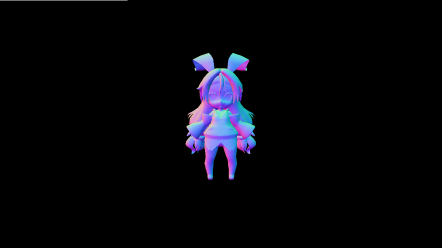
G-Bufferの作成が終わったら、次はディファードライティングです。step-4で作成されたアルベドテクスチャと法線テクスチャを使ってライティングの計算が行われます。 [リスト 12.5 main.cpp]
//step-5 レンダリング先をフレームバッファに戻してスプライトをレンダリングする
g_graphicsEngine->ChangeRenderTargetToFrameBuffer(renderContext);
//G-Bufferの内容を元にしてスプライトをレンダリング。
defferdLightinSpr.Draw(renderContext);
このスプライトのドローで、step-4で作成されたテクスチャを使用して、ライティングの計算がおこなれます。
図12.3 ディファードライティング

続いて、シェーダー側のmodel.fxです。モデルシェーダーではライティングの計算のような複雑な計算は行われておらず、アルベドと法線をレンダリングターゲットに出力しているだけのシンプルなプログラムになっています。 [リスト 12.6 model.fx]
//step-6 G-Bufferに出力。
SPSOut psOut;
//アルベドカラーを出力。
psOut.albedo = g_texture.Sample(g_sampler, psIn.uv);
//法線を出力。
//出力は0～1に丸められてしまうのでマイナスの値が失われてしまう。
//なので-1～1を0～1に変換する。
//(-1 ～ 1) ÷ 2.0 = ( -0.5 ～ 0.5 )
//( -0.5 ～ 0.5) + 0.5 = ( 0.0 ～ 1.0 )
psOut.normal = ( psIn.normal / 2.0f ) + 0.5f;
return psOut;
いよいよ最後です。sprite.fxでは作成されたG-Bufferの情報を元にライティングの計算を行います。ライティングの計算自体はフォワードレンダリングで行っているものと違いはありません。 [リスト 12.6 sprite.fx]
//step-7 G-Bufferの内容を使ってライティング。
float4 albedo = albedoTexture.Sample(Sampler, In.uv);
float3 normal = normalTexture.Sample(Sampler, In.uv).xyz;
normal = (normal * 2.0f)-1.0f;
//ライトを計算。
float3 lig = 0.0f;
float t = max( 0.0f, dot( normal, ligDirection) * -1.0f);
lig = ligColor * t;
float4 finalColor = albedo;
finalColor.xyz *= lig;
return finalColor;
今回のハンズオンではライティングの計算もシンプルだったので、余り恩恵は受けませんが、この後のチャプターで勉強する物理ベースライティングでは、１ピクセル辺りのライティングの計算が更にヘビーになります。そのような重いシェーダーになってきたときはディファードレンダリングの恩恵が大きくなっていきます。
続いてディファードレンダリングで鏡面反射を実装してみましょう。このハンズオンは12.5のハンズオンの続きになります。鏡面反射ではピクセルのワールド座標のデータが必要になるため、G-Bufferが１枚追加されます。図12.4が今回のハンズオンで作成されるG-Bufferです。
図12.4

では、ハンズオンを行っていきましょう。12.5の内容を全て実装しているサンプルプログラムがあるので、そちらを利用します。Sample_12_1を立ち上げて下さい。
今回実装する鏡面反射は[ほげほげ(章番号を入れる)]で勉強したフォン鏡面反射です。フォン鏡面反射の計算には視点の位置が必要になるので、ライティングの情報に視点のデータを追加します。main.cppにリスト12.7のプログラムを入力してください。 [リスト12.7 main.cpp]
//step-1 ライトの情報に視点を追加
light.eyePos = g_camera3D->GetPosition();
鏡面反射の計算では、ピクセルから視点まで伸びるベクトルを計算する必要があります。その計算のためにワールド座標を記憶するためのG-Bufferを作成しましょう。リスト12.8のプログラムを入力してください。 [リスト12.8 main.cpp]
RenderTarget worldPosRT;
worldPosRT.Create(
FRAME_BUFFER_W,
FRAME_BUFFER_H,
1,
1,
DXGI_FORMAT_R32G32B32A32_FLOAT, //ワールド座標を記録するので、32ビット浮動小数点バッファを利用する。
DXGI_FORMAT_UNKNOWN
);
ワールド座標はアルベドカラーや法線と違い、大きな数値になるため8ビットのバッファでは精度が足りません。ですので、32ビットの浮動小数点バッファを作成しています。
ディファードライティングで先ほど作成したワールド座標のテクスチャを利用するため、spriteInitData.m_textureに追加します。リスト12.9のプログラムを入力して下さい。 [リスト12.9 main.cpp]
//step-3 ディファードライティングで使用するテクスチャにワールド座標テクスチャを追加。
spriteInitData.m_textures[2] = &worldPosRT.GetRenderTargetTexture();
step-3までで初期化のプログラムは終了です。続いて、ドローコールを改造します。レンダリングするG-Bufferの種類が増えたので、RenderToGBufferで設定するレンダリングターゲットを増やします。リスト12.10のプログラムを入力してください。 [リスト12.10 main.cpp]
//step-4 2番目のレンダリングターゲットにworldPosRTを追加。
RenderTarget* rts[] = {
&albedRT, //0番目のレンダリングターゲット
&normalRT, //1番目のレンダリングターゲット
&worldPosRT //2番目のレンダリングターゲット
};
これでC++側のプログラムは終了です。では、続いてHLSL側のプログラムを実装していきましょう。
まずは、RenderToGBufferのシェーダーを改造します。G-Bufferにピクセルのワールド座標を描きこむので、頂点シェーダーで計算されたワールド座標をピクセルシェーダーに渡す必要があります。頂点シェーダーからの出力構造体にワールド座標を出力するためのメンバを追加しましょう。model.fxを開いて、リスト12.11のプログラムを入力してください。 [リスト12.11 model.fx]
//step-5 頂点シェーダーからの出力にワールド座標を追加。
float3 worldPos : TEXCOORD1; //ワールド座標。
続いて、ピクセルシェーダーからの出力構造体を改造します。ピクセルシェーダーからレンダリングターゲット２番目にワールド座標を出力する必要があるので、SV_Target2セマンティクスが指定されたメンバを追加しています。model.fxにリスト12.12のプログラムを入力してください。 [リスト12.12 model.fx]
//step 6 ピクセルシェーダーからの出力にワールド座標を追加。
float3 worldPos : SV_Target2; //ワールド座標。
このシェーダーが実行されると、図12.5のワールド座標のG-Bufferが作成されます。
図12.5

では、プログラムの本体の改造をしていきましょう。まずは頂点シェーダーからワールド座標を出力できるようにしていきましょう。リスト12.13のプログラムを入力してください。 [リスト12.13 model.fx]
//step-7 頂点シェーダーからワールド座標を出力。
psIn.worldPos = psIn.pos;
続いて、ピクセルシェーダーを改造しましょう。ピクセルシェーダーの仕事は頂点シェーダー→ラスタライザで計算されたピクセルのワールド座標をG-Bufferに出力するだけです。リスト12.14のプログラムを入力してください。 [リスト12.14 model.fx]
//step-8 ピクセルシェーダーからワールド座標を出力。
psOut.worldPos = psIn.worldPos;
次はディファードライティングのシェーダーを改造します。鏡面反射を実装するので、定数バッファに視点の位置を追加しましょう。sprite.fxを開いてリスト12.15のプログラムを入力してください。 [リスト12.15 sprite.fx]
//step-9 定数バッファに視点の位置を追加。
float3 eyePos; //視点
RenderToGBufferのパスで作成されたワールド座標テクスチャを利用するので、テクスチャにアクセスするための変数を追加します。ワールド座標テクスチャはcpp側のSprite::Drawの中でt2レジスタに関連付けされています。リスト12.16のプログラムを入力してください。 [リスト12.16 sprite.fx]
//step-10 ワールド座標テクスチャにアクセスするための変数を追加
Texture2D<float4> worldPosTexture : register(t2); //ワールド座標。
では、最後にスペキュラ反射を計算するプロググラムを追加しましょう。スペキュラ反射は[Chpaterほげほげ]で解説したプログラムと同じです。リスト12.17のプログラムを入力して下さい。 [リスト12.17 sprite.fx]
//step-11 スペキュラ反射を計算。
float3 worldPos = worldPosTexture.Sample( Sampler, In.uv).xyz;
float3 toEye = normalize( eyePos - worldPos );
float3 r = reflect( ligDirection, normal);
t = max( 0.0f, dot( toEye, r));
t = pow( t, 5.0f);
lig += ligColor * t;
ここまで入力できたら実行して動作を確認してください。うまくできていれば、図12.6のようにスペキュラ反射が発生しているはずです。
図12.6

ディファードレンダリングは半透明描画が弱いと言われています。では、なぜディファードレンダリングは半透明描画が弱いのか考えていきましょう。結論を先に説明すると、半透明のオブジェクトを描画すると、G-Bufferの内容が上書きされてしまうからです。G-Bufferは手前に描画されたピクセルの情報で上書きされてしまうため、奥のピクセルの情報は失われます。不透明の
現在主流になっているレンダリングエンジンはディファードオンリー、フォワードオンリーというわけではなく、ディファードとフォワードを融合したものとなっています。ディファードレンダリングは無駄なピクセルのシェーダーが実行されないというメリットがあります。現在のリッチゲームは1ピクセル当たりのシェーダーが複雑になってきており、無駄な計算が発生しないディファードレンダリングがメインストリームになっています。しかし、ディファードレンダリングにはいくつかの欠点があります。その欠点を解消するために、ディファードとフォワードのハイブリッド仕様のレンダリングエンジンを作成するケースが増えていっています。では、ディファードの欠点を詳しくみていって、それに対処できるハイブリッド式のエンジンをハンズオンで作成していきましょう。
ディファードレンダリングは半透明描画が弱いと言われています。では、なぜディファードレンダリングは半透明描画が弱いのか考えていきましょう。結論を先に説明すると、半透明のオブジェクトを描画すると、G-Bufferの内容が上書きされてしまうからです。G-Bufferは手前に描画されたピクセルの情報で上書きされてしまうため、奥のピクセルの情報は失われます。不透明のオブジェクトであれば、上書きされてしまっても問題ないのですが、半透明のオブジェクトが描画された時に、ピクセルの情報を上書きしてしまうのは問題です。なぜなら、半透明オブジェクトは透過しているので、奥のオブジェクトはまだ画面に表示されているからです。具体例を見てみましょう。図13.1は女の子のモデルと半透明の板ポリを描画している様子です。 図13.1 女の子のモデルはランバート拡散反射の計算で陰影がついていることが分かります。さて、では女の子の手前に半透明の板ポリを移動するとどうなるでしょうか。図13.2を見てください。
図13.2
 女の子から陰影がなくなってしまいました。これは手前に描画された板ポリによって、G-Bufferの法線情報が上書きされてしまったことによって起きた現象です。図13.3はG-Bufferの変化です。
女の子から陰影がなくなってしまいました。これは手前に描画された板ポリによって、G-Bufferの法線情報が上書きされてしまったことによって起きた現象です。図13.3はG-Bufferの変化です。
図13.3 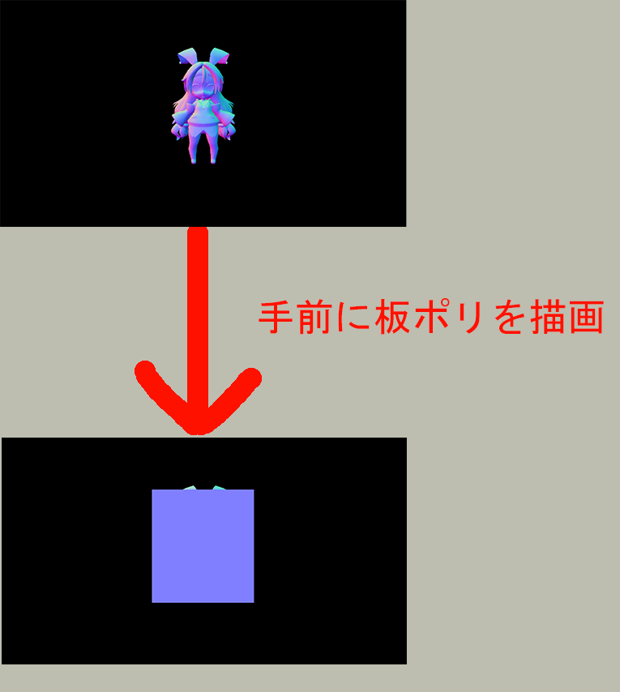 この問題は法線だけではなく、スペキュラ強度、深度値など多くのG-Bufferで発生します。半透明のオブジェクトを描画する場合、奥のオブジェクトも表示されているため、きちんと陰影を計算してやる必要があります。しかし、シンプルなディファードレンダリングの場合、奥のオブジェクトの情報は失われてしまうため、正しい陰影計算を行うことができません。これがディファードレンダリングで半透明描画が難しい理由です(今回紹介した半透明描画に関する問題をサンプルプログラム、Sample13_01で確認することができます。興味がある方は実行して動作を確認してみてください)。 この半透明に起因する問題を解決する最も簡単な方法は、不透明オブジェクトはディファード、半透明オブジェクトはフォワードでレンダリングすることです。下記はフォワードとディファードを融合させたエンジンの１フレームの描画の流れです。
不透明オブジェクトをG-Bufferにレンダリング 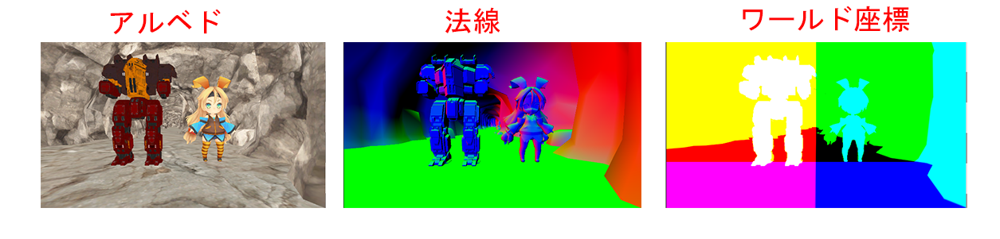
G-Bufferの内容を使ってディファードライティング

半透明オブジェクトをフォワードでレンダリング 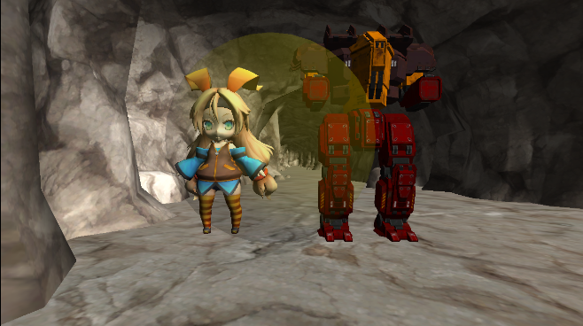
では、半透明問題の解決のためにディファードとフォワードのハイブリッドエンジンを実装してきましょう。今回使用するサンプルプログラムのSample_13_02は不透明オブジェクトのみディファードでレンダリングしているサンプルです。このサンプルを改造して半透明オブジェクトをレンダリングしても、正しいライティングの結果を得られるようにしていきましょう。
まずは、半透明オブジェクトの球体モデルを初期化しましょう。半透明オブジェクトの描画で使用されるピクセルシェーダーは不透明オブジェクトのものとは別のシェーダーです。不透明オブジェクトのピクセルシェーダーはG-Bufferに出力しますが、半透明オブジェクトのピクセルシェーダーはライティングの計算を行います。リスト13.1のプログラムをmain.cppに入力してください。 [リスト13.1 main.cpp]
//step-1 半透明の球体モデルを初期化。
ModelInitData transModelInitData;
transModelInitData.m_tkmFilePath = "Assets/modelData/sphere.tkm";
transModelInitData.m_fxFilePath = "Assets/shader/model.fx";
//半透明モデルはモデルを描くときにライティングを行うので、ライトの情報を渡す。
transModelInitData.m_expandConstantBuffer = &light;
transModelInitData.m_expandConstantBufferSize = sizeof(light);
//ピクセルシェーダのエントリーポイントが不透明モデルとは異なる。
//不透明モデルはPSMain、半透明モデルはPSMainTransを使用する。
//ピクセルシェーダの実装は後で確認。
transModelInitData.m_psEntryPointFunc = "PSMainTrans";
//半透明の球体モデルを初期化。
Model sphereModel;
sphereModel.Init(transModelInitData);
続いて、半透明オブジェクトを描画します。半透明オブジェクトの描画がディファードライティングの後で行われている点に注目してください。また、半透明オブジェクトを描画する際の深度ステンシルビューはG-Bufferを作成したときに作られた深度ステンシルビューを使用しています。このようにすることで、ディファードライティングが終わった後で、オブジェクトをレンダリングしても、正しい前後関係が得られます。リスト13.2のプログラムを入力してください。 [リスト13.2 main.cpp]
//step-2 半透明オブジェクトを描画
//深度ステンシルビューはG-Bufferを作成したときのものに変更する。
renderContext.SetRenderTarget(
g_graphicsEngine->GetCurrentFrameBuffuerRTV(),
rts[0]->GetDSVCpuDescriptorHandle()
);
//半透明オブジェクトを描画！
sphereModel.Draw(renderContext);
step-3はシェーダー側のプログラムです。半透明オブジェクトをレンダリングするためのシェーダーを追加しましょう。まずはライティングを行うためにライトの情報にアクセスするための定数バッファを追加しましょう。Assets/shader/model.fxを開いてリスト13.3のプログラムを入力してください。 [リスト13.3 model.fx]
//step-3 ライトの情報を受け取るための定数バッファを追加。
cbuffer DirectionLight : register(b1){
float3 ligColor; //ライトのカラー
float3 ligDirection; //ライトの方向。
float3 eyePos; //視点
};
これで最後のハンズオンです。半透明オブジェクトのためのピクセルシェーダーの本体を実装しましょう。内容はこれまでに勉強してきたフォワードレンダリングです。リスト13.4のプログラムを入力してください。 [リスト13.4 model.fx]
//step-4 半透明オブジェクト用のピクセルシェーダーを実装。
float4 PSMainTrans( SPSIn psIn ) : SV_Target0
{
//フォワードレンダリング。
//普通にライティングをする。
//拡散反射光を計算。
float3 lig = 0.0f;
float3 normal = psIn.normal;
float t = max( 0.0f, dot( psIn.normal, ligDirection) * -1.0f);
lig = ligColor * t;
float4 finalColor = g_texture.Sample(g_sampler, psIn.uv);
finalColor.xyz *= lig;
return finalColor;
}
ここまで入力できたら実行して動作を確認してください。うまくできていれば、図13.4のように半透明の球体モデルを描画できているはずです。
図13.4

ディファードレンダリングは全てピクセルに対して、同じ陰影計算が行われます。そのため、特定のマテリアルだけ計算を変更したいということが難しくなります。かみ砕いて説明すると、リアルなグラフィックの世界にアニメ調のキャラクターを登場させることが困難になります。
GPGPUとはGeneral-purpose computing on graphics processing unitsの略でGPUに汎用計算を行わせることを指しています。汎用計算とは画像処理以外の処理のことを指します。例えばコリジョン処理など。本来GPUは画像処理を行うために進化してきましたが、プログラマブルシェーダーの登場により、GPUでそれなりに複雑なロジックを実行することができるようになりました。また、CPUはGPUとは異なる進化を遂げてきたため、単純な計算であればCPUとは比べ物にならない速度で処理することができます。そのため、GPUに画像処理だけさせるのは勿体ない、もっと色々な処理をGPUに実行させよう！という考えが生まれます。これがGPGPUの始まりです。近年では仮想通貨のマイニングにGPUが使われたり、AIを飛躍的に進化させた機械学習という大量のデータを扱うアルゴリズムを高速に実行するためにGPUが使われたりしていました(ただし、最近は機械学習に特化したプロセッサをgoogleやMicrosoftが独自に開発したため、GPUが使われることは減っています)。
さて、ではどのようにGPUで汎用的な計算を行うのでしょうか？これまで皆さんが勉強してきたのは、頂点処理を行うための頂点シェーダーと、ピクセル処理を行うためのピクセルシェーダーのみです。固定機能の時代に比べると、ある程度自由にプログラミングができるようになったとはいえ、まだまだ制約は多いです。頂点シェーダーからの出力結果に計算の結果を簡単に加工することはできませんし、ピクセルシェーダーからの出力もカラー情報しか出力できません。DirectX9までは、この二つのシェーダーステージしか用意されていませんでした。(しかし、ゲーム開発者はこの制限のなかでもGPGPUをおこなっていましたが・・・)。そこで、GPUに汎用的な処理を行わせるプログラムを簡単に記述したい、という開発者の要望に答える形で、DirectX10にコンピュートシェーダーという新しいシェーダーステージが追加されました。 コンピュートシェーダーはhlslで記述することができ、より柔軟に計算結果を出力することができるようになっています。
多くの処理ではいろいろな計算を行うためにはデータを入力する必要があります。そしてその入力に対する計算結果を出力する必要もあるでしょう。クラスの平均点を求める関数であれば、リスト15.1のような実装になると思います。
【リスト15.1】
int CalcAvarage( int numStudent, int* scoreArray )
{
int totalScore = 0;
for( int I = 0; I < numStudent; i++ ){
totalScore += scoreArray[i];
}
return totalScore / numStudent;
}
このクラスの平均点を求める計算をGPUに行わせる場合も同様にGPUに対して生徒数と点数の配列を送ってやる必要があります。そして、GPUで行った計算結果を出力する必要があります。
StructuredBufferとは構造化バッファと呼ばれるもので、構造体の配列のように扱うことができます。今回扱うサンプルプログラムでは、シェーダーへの入力、出力として使用しています。
データの入力はピクセルシェーダーや頂点シェーダーと同じように、定数バッファやシェーダーリソースビューなどを利用して入力します。しかし、これらは読み取り専用となっており、データの出力では利用できません。そこで、今回はデータの出力が可能なアンオーダーアクセスビューを使用します。ビューというのはリソースの振る舞いについて定義するためのものです。例えば、シェーダーリソースビューが指定されたリソースは読み取り専用になります。一方アンオーダーアクセスビューが設定されたリソースはランダムアクセスが可能になり、読み書きが可能になります。リスト15.1のプログラムですと、CaclAvarageの引数で渡しているデータはシェーダーリソースビュー、戻り値のデータはアンオーダーアクセスビューに関連付けされます。
図15.1 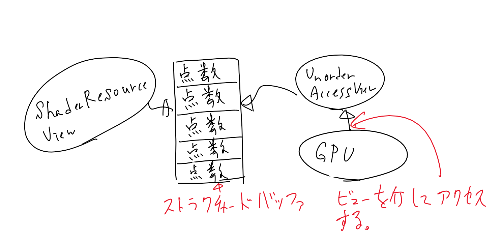
では、具体的なプログラムを見て、コンピュートシェーダーの使い方を学んでいきましょう。Sample_15_1/Sample_15_1.slnを起動して実行してください。このプログラムは3人の生徒の試験の成績をランダムに生成して、その平均点を計算して図15.2のように表示しているだけの簡単なプログラムです。
図15.2

まず、コンピュートシェーダーをロードする必要があります。シェーダーのロードの処理は頂点シェーダーやピクセルシェーダーと同じように、シェーダーファイルのファイルパスとエントリーポイントとなる関数名を指定します。 [リスト 15.2 main.cpp 27行目～]
//コンピュートシェーダのロード
Shader cs;
cs.LoadCS(L"Assets/shader/sample.fx", "CSMain");
続いて、入力データを受け取るバッファを作成します。コンピュートシェーダもGPU上で動作するので、当然アクセスできるのはグラフィックメモリですので、グラフィックメモリ上にバッファを作成する必要があります。今回は入力データは読み取り専用のストラクチャードバッファとして作成しています。 [リスト 15.3 main.cpp 39行目～]
//入力データを受け取るバッファを作成。
int inputData[] = {
20, 30, 40
};
StructuredBuffer inputSB;
inputSB.Init(sizeof(int), 3, inputData);
入力データが作成できたら、今度は出力データを記憶するバッファを作成します。出力データは読み書き可能なストラクチャードバッファとして作成しています。 [リスト 15.4 main.cpp 47行目～]
//出力データを受け取るバッファを作成。
RWStructuredBuffer outputSb;
outputSb.Init(sizeof(OutputData), 1, nullptr);
入力データと出力データをディスクリプタヒープに登録します。これも頂点シェーダー、ピクセルシェーダと変わりありません。入力データはシェーダーリソースビュー、出力データはアンオーダーアクセスビューとして登録します。 [リスト 15.5 main.cpp 49行目～]
DescriptorHeap ds;
ds.RegistShaderResource(0, inputSB);
ds.RegistUnorderAccessResource(0, outputSb);
ds.Commit();
ディスパッチコールを実行することで、設定されていたコンピュートシェーダーが実行されます。絵を描くときのドローコール似たような感じです。ディスパッチコールを行うために必要なリソースを設定して実行します。 [リスト 15.6 main.cpp 76行目～]
//////////////////////////////////////
//ここからDirectComputeへのディスパッチ命令。
//////////////////////////////////////
renderContext.SetComputeRootSignature(rs);
renderContext.SetPipelineState(pipelineState);
renderContext.SetComputeDescriptorHeap(ds);
renderContext.Dispatch(1, 1, 1);
では、最後にコンピュートシェーダーのコードを見ていきましょう。やっていることは平均点、最高点、最小点の計算を行っているだけです。 入力データにアクセスするための変数と、出力データにアクセスするための変数が用意されています。入力データはシェーダーリソースビューなのでtレジスタに割り当てられています。出力データはuレジスタに割り当てられています。 [リスト 15.7 Assets/shader/sample.fx]
// 平均点、最高得点、最低得点を計算するコンピュートシェーダー。
#define NUM_STUDENT 3.0f //生徒の数
//出力データ構造体
struct OutputData{
float avarageScore; //平均点。
float maxScore; //最高点。
float minScore; //最小点。
};
//入力データにアクセスるための変数。
StructuredBuffer<int> g_scores : register(t0);
//出力先にアクセスするための変数。
RWStructuredBuffer<OutputData> g_outputData : register(u0);
//これがエントリーポイント
[numthreads(1, 1, 1)] //これは今は気にしなくてよい。
void CSMain( uint3 DTid : SV_DispatchThreadID )
{
g_outputData[0].maxScore = 0;
g_outputData[0].minScore = 100;
int totalScore = 0;
for(int i = 0; i < NUM_STUDENT; i++ ){
totalScore += g_scores[i];
g_outputData[0].maxScore = max( g_outputData[0].maxScore, g_scores[i]);
g_outputData[0].minScore = min( g_outputData[0].minScore, g_scores[i]);
}
g_outputData[0].avarageScore = totalScore / NUM_STUDENT;
}
では、Sample_15_01を改造して、合計点を出力できるようにしてみましょう。まず、コンピュートシェーダーを改造しましょう。
sample.fxの「step-1 出力構造体にメンバを追加する」と書かれている箇所にリスト15.8のプログラムを追加してください。 [リスト 15.8 sample.fx]
//step-1 出力構造体にメンバを追加する
int totalScore; //合計点。
メンバを追加できたら、実際に出力するプログラムをウ生かします。「step-2 合計点を出力する」と書かれている箇所にリスト15.9のプログラムを追加してください。 [リスト 15.9 sample.fx]
//step-2 合計点を出力する
g_outputData[0].totalScore = totalScore;
続いて、コンピュートシェーダーで計算されたデータを受け取るために、C++側に定義されている出力構造体にもメンバを追加しましょう。main.cppの「step-3 出力構造体にメンバを追加する」と書かれている箇所にリスト15.10のプログラムを追加してください。 [リスト 15.10]
//step-3 出力構造体にメンバを追加する
int totalScore; //合計点。
では最後のハンズオンです。main.cppの「step-4 合計点を表示する」と書かれている箇所にリスト15.11のプログラムを追加して、メッセージボックスに合計点の表示を追加してみましょう。 [リスト 15.11]
//step-4 合計点を表示する
sprintf(
text,
"１人目 = %d\n" \
"２人目 = %d\n" \
"３人目 = %d\n" \
"平均点 = %0.2f\n" \
"最高得点=%0.2f\n" \
"最低得点=%0.2f\n" \
"合計点=%d\n", //これを追加。
inputData[0],
inputData[1],
inputData[2],
outputData->avarageScore,
outputData->maxScore,
outputData->minScore,
outputData->totalScore //これも追加。
);
Sample_15_01を改造して、図15.3のように標準偏差を表示できるようにしなさい。 図15.3
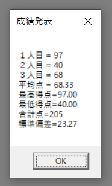
標準偏差の計算はGPUで行いなさい。標準偏差は下記の数式で求めることができます。

答え:Sample_15_01/Assets/shader/main_15_8.fx、Sample_15_01/main_15_8.cpp
この節では、画像のモノクロ化のサンプルプログラムを通して、コンピュートシェーダーの並列処理について学んでいきます。
すべてのプログラムはスレッドによって実行されています。驚くかもしれませんが、実はこれまで、あなたが記述したmain関数はメインスレッドから呼ばれていたのです。スレッドは複数作成することができて、作成されたスレッドは並列に動作します。例えば、あるゲームの１フレームの処理が図15.4のようになっていると考えてみましょう。 図15.4 このゲームではメインスレッドに記述されているゲームループから順次処理を呼び出していて、1フレームの処理が完了するまでに24ミリ秒かかっています。残念ながらこのゲームは60fpsを達成できていないため、ゲームプレイの滑らかさは多少損なわれています。図15.5はスレッドを二つ立てて、ゲームの処理、物理シミュレーション、描画処理を並列に実行している様子です。
図15.5 物理シミュレーションと描画処理を並列に実行するようにしたことで、１フレームの処理時間が14ミリ秒まで短縮できました！これで60fpsが達成できました！(現実はデータの排他など非常に難解なことを考える必要が出てくるため、マルチスレッドにするということはここまで簡単な話ではないので注意してください。)コンピュートシェーダーもスレッドから実行されており、ディスパッチされると、スレッドが生成されます。生成されるスレッドの数はコンピュートシェーダーのコードで指定することができます。
[numthreads(2, 2, 1)] //これがスレッドの数！！！
void CSMain( uint3 DTid : SV_DispatchThreadID)
{
・
・
・
}
numthreads(x,y,z)という文が一つのスレッドグループで生成されるスレッド数を指定しています(スレッドグループについては後述します)。この場合生成されるスレッド数は2×2×1の4スレッド生成されます。numthreads(4, 1, 1)と同じ意味になるのですが、例えば入力データを二次元配列のように扱いたい場合、このように指定したほうが扱いやすくなります。
スレッドグループとはスレッドをひとまとめにしたものです。スレッドグループの数はコンピュートシェーダーをディスパッチするときに指定することができます。
//3×3のスレッドグループが作られる！
renderContext.Dispatch(3,3,1);
Dispatch関数の引数がスレッドグループの数です。この場合スレッドグループの数は3×3×1の9グループとなります。では15.9.1の4スレッド生成するコンピュートシェーダーを3×3×1の9グループでディスパッチするとどのようになるか見てみいきましょう。まずディスパッチされると(0,0,0)のグループの4スレッドが起動してCSMainが実行されます。
図15.6
 (0,0,0)のスレッドがすべて終了すると(0,1,0)のグループが実行されます。
(0,0,0)のスレッドがすべて終了すると(0,1,0)のグループが実行されます。
図15.7
 続いて(0,2,0)、(1,0,0)と実行されて最後に(2,2,0)を実行するとコンピュートシェーダーは終了します。
続いて(0,2,0)、(1,0,0)と実行されて最後に(2,2,0)を実行するとコンピュートシェーダーは終了します。
コンピュートシェーダ―では、メイン関数の引数にSV_DispatchThreadIDセマンティクスを指定することができます。このセマンティクスを指定するとメイン関数を呼び出しているスレッドのIDを引っ張ってくるができます。このIDは3次元ベクトルになります。例えば、スレッドＡのIDは(3,4,3)、スレッドＢのIDは(10, 2, 1)といったものです。例えば、２×２×１のスレッドで実行されるコンピュートシェーダ―を４×３×１のスレッドグループでディスパッチすると、スレッドIDは(0,0,0)～(8,6,1)になります。
ではSample_15_02を改造して、ロードしたビットマップフォーマットの画像をモノクロに変換するプログラムを作成してみましょう。ビットマップフォーマットは端的に説明すると、下記のコードのような光の三原色のデータの配列です。
//1ピクセルのデータ構造体。
struct SRgb{
unsigned char r;
unsigned char g;
unsigned char b;
unsigned char a;
};
//画像データ。ピクセルの集合体。
SRgb image[512×512];
では、ハンズオンを行っていきます。今回はAssets/image/original.bmpをモノクロ化します。まずは画像データをメインメモリ上にロードします。リスト15.12を入力してください。なお、このサンプルプログラムにはビットマップ画像をロードできるBitmapクラスを用意しています。このクラスは簡易的なクラスであるため、全てのビットマップ画像を扱えるわけではないので注意してください。 [リスト15.2 main.cpp 22行目～]
Bitmap imagebmp;
imagebmp.Load("Assets/image/original.bmp");
step-1でロードした画像データはメインメモリに乗っています。今回はコンピュートシェーダ―でモノクロ化を行うため、グラフィックメモリに転送する必要があります。リスト15.3のプログラムを入力して、ストラクチャードバッファを作成しましょう。 [リスト15.3 main.cpp 26行目～]
StructuredBuffer inputImageBmpSB;
inputImageBmpSB.Init(
imagebmp.GetPixelSizeInBytes(), //第一引数は1画素のサイズ。
imagebmp.GetNumPixel(), //ピクセルの数を取得。
imagebmp.GetImageAddress() //画像データの先頭アドレス。
);
では、続いてモノクロ化した画像を受け取るためのRWストラクチャバッファを作成します。リスト15.4のプログラムを入力してください。 [リスト15.4 main.cpp 31行目～]
RWStructuredBuffer outputImageBmpRWSB;
outputImageBmpRWSB.Init(
imagebmp.GetPixelSizeInBytes(), //第一引数は1画素のサイズ。
imagebmp.GetNumPixel(), //ピクセルの数を取得。
imagebmp.GetImageAddress() //画像データの先頭アドレス。
);
入力データと出力データを受け取るためのバッファを作成出来たら、バッファをディスクリプタヒープに登録します。リスト15.5のプログラムを入力してください。 [リスト15.5 main.cpp 42行目～]
DescriptorHeap ds;
ds.RegistShaderResource(0, inputImageBmpSB);
ds.RegistUnorderAccessResource(0, outputImageBmpRWSB);
ds.Commit();
step-4までで準備が完了したので、ディスパッチコールを実行します。リスト15.6のプログラムを入力してください。 [リスト15.6 main.cpp 70行目～]
renderContext.SetComputeRootSignature(rs);
renderContext.SetPipelineState(pipelineState);
renderContext.SetComputeDescriptorHeap(ds);
//ピクセル数は512×512 = 262,144ピクセル。
//4つのスレッドを生成するコンピュートシェーダ―なので、
//262,144 ÷ 4 = 65,536個のスレッドグループを作成する。
renderContext.Dispatch(65536, 1, 1);
では、これでC++側は最後になります。コンピュートシェーダ―でのモノクロ化の結果を確認するために画像データを保存しましょう。Bitmapクラスには画像をセーブする機能があります。この機能を使ってAssets/imageフォルダの中にmonochrome.bmpという名前で保存します。リスト15.7のプログラムを入力してください。 [リスト15.7 main.cpp 70行目～]
//step-6 モノクロにした画像を保存。
imagebmp.Copy(outputImageBmpRWSB.GetResourceOnCPU());
imagebmp.Save("Assets/image/monochrome.bmp");
続いてシェーダー側のプログラムです。まずは、t0、u0レジスタに設定されているストラクチャードバッファにアクセスるための変数を定義します。Assets/shader/sample.fxを開いて、リスト15.8のプログラムを入力してください。 [リスト15.8 sample.fx 7行目～]
//step-7 t0、u0に設定されているバッファにアクセスするための変数を定義。
StructuredBuffer<uint> inputImage : register( t0 );
RWStructuredBuffer<uint> outputBuffer : register(u0);
では、これで最後です。コンピュートシェーダ―のメイン関数を実装します。リスト15.9のプログラムを入力してください。 [リスト15.9 sample.fx 36行目～]
//step-8 入力データから画素を引っ張ってきてモノクロ化する。
//スレッドＩＤをりよして画像データから画素を引っ張ってくる。
uint iColor = inputImage[DTid.x];
//0～255の画像データを0.0～1.0に正規化する。
float4 color = UnpackedRGBA32ToFloat4(iColor);
float Y = 0.29900 * color.r + 0.58700 * color.g + 0.11400 * color.b;
color.r = Y;
color.g = Y;
color.b = Y;
color.a = 1.0f;
//float4をRGBA32ビットのフォーマットに変して出力
outputBuffer[DTid.x] = PackedFloat4ToRGBA32( color );
全て入力出来たらプログラムを実行してみてください。完成していたら、Assets/imageフォルダの中にmonochrome.bmpが出来上がっています。
さて、先ほどのハンズオンではスレッドグループが65536個、１つのスレッドグループで実行されるスレッドの数が4個でした。ですので、生成されるスレッド数は65536 × 4 = 262,144個になっていました。この数は、今回モノクロ化した画像のピクセル数と同じです(512 × 512 = 262,144)。今回のハンズオンでは、モノクロカする画像のピクセル数と同じになるようにディスパッチされていて、１つのスレッドが１ピクセルをモノクロ化していました。各スレッドが度のピクセルをモノクロ化するかを決めるために、SV_DispatchThreadIDセマンティクスが使われていました。SV_DispatchThreadIDセマンティクスが指定された変数にはスレッドの番号が入っています。今回は0～262,143の番号が渡されます。ちょうどピクセルの画素を配列として扱った場合のインデックスと一致しています。これを利用して、各スレッドに１ピクセルずつモノクロ加工させていたわけです。
Sample_15_02を改造して、original2.bmpをモノクロ化して、monochrome2.bmpという名前で保存しなさい。表15.1のようにoriginal2.bmpはoriginal.bmpとでは解像度が違います。そのため、生成するスレッドの数を変更する必要があります。 表15.1
| ファイル名 | 解像度 |
|---|---|
| original.bmp | 512 × 512 |
| original2.bmp | 1024 × 768 |
答え:Sample_15_02/Assets/shader/main_15.9.6.cpp
続いて、Sample_15_03を改造して、ロードした画像にガウシアンブラーをかけてボケ画像を生成するプログラムを作成してみましょう。実装するボケ画像生成のアルゴリズムはポストエフェクトの章で勉強したアルゴリズムと同じで、カウス関数で計算した重みテーブルを使って、Xブラー、Yブラーを行って縮小テクスチャを作っていきます。
まずはBitmapクラスを使って、画像データをロードします。リスト15.10のプログラムを入力してください。 [リスト15.10 main.cpp]
//step-1 画像データをメインメモリ上にロードする。
Bitmap imagebmp;
imagebmp.Load("Assets/image/original.bmp");
ピクセルの重みテーブルを送るための定数バッファを作成します。リスト15.11のプログラムを入力して下さい。 [リスト15.11 main.cpp]
//step-2 ブレンディング係数を送るための定数バッファを作成する。
ConstantBuffer weightsCB;
weightsCB.Init(sizeof(float) * 8, nullptr);
縮小バッファを利用したガウシアンブラーでは、オリジナルのテクスチャ、Xブラーをかけた画像の出力用のテクスチャ、Yブラーをかけた画像の出力用のテクスチャの情報が必要になります。これらをグラフィックメモリに送るために定数バッファを追加します。リスト15.12のプログラムを入力して下さい。 [リスト15.12 main.cpp]
//step-3 テクスチャ情報を送るための定数バッファを作成する。
TexInfo texInfo;
texInfo.originalTexSize[0] = imagebmp.GetWidth();
texInfo.originalTexSize[1] = imagebmp.GetHeight();
texInfo.xBlurTexSize[0] = texInfo.originalTexSize[0] / 2;
texInfo.xBlurTexSize[1] = texInfo.originalTexSize[1];
texInfo.yBlurTexSize[0] = texInfo.originalTexSize[0] / 2;
texInfo.yBlurTexSize[1] = texInfo.originalTexSize[1] / 2;
ConstantBuffer texInfoCB;
texInfoCB.Init(sizeof(texInfo), &texInfo);
今回使用するアルゴリズムでは、オリジナルの画像をGPUに渡すための入力用のバッファと、コンピュートシェーダ―が３回ディスパッチされて、横方向に半分の解像度のテクスチャ(Xブラーの出力結果)、縦横半分の解像度のテクスチャ(Yブラーの出力結果)、オリジナルの画像と同じ解像度のテクスチャ(最終合成の結果)の３つ出力用のバッファが必要となります。では、リスト15.13を入力して、各種ストラクチャードバッファを作成できるようにしてください。 [リスト15.13 main.cpp]
//step-4 各種ストラクチャードバッファを作成する。
StructuredBuffer inputImageBmpSB;
inputImageBmpSB.Init(
imagebmp.GetPixelSizeInBytes(), //第一引数は1画素のサイズ。
imagebmp.GetNumPixel(), //ピクセルの数を取得。
imagebmp.GetImageAddress() //画像データの先頭アドレス。
);
//Xブラーをかけた画像を出力するためのRWストラクチャバッファを作成。
RWStructuredBuffer outputXBlurImageRWSB;
outputXBlurImageRWSB.Init(
imagebmp.GetPixelSizeInBytes(), //第一引数は1画素のサイズ。
imagebmp.GetNumPixel() / 2, //横方向に1/2の解像度へダウンサンプリングを行うのでピクセル数を半分にする。
nullptr
);
//Yブラーをかけた画像を出力するためのRWストラクチャバッファを作成。
RWStructuredBuffer outputYBlurImageRWSB;
outputYBlurImageRWSB.Init(
imagebmp.GetPixelSizeInBytes(), //第一引数は1画素のサイズ。
imagebmp.GetNumPixel() / 4, //縦、横方向に1/2の解像度へダウンサンプリングを行うのでピクセル数を1/4にする。
nullptr
);
//最終結果を出力するためのRWストラクチャバッファを作成。
RWStructuredBuffer finalImageRWSB;
finalImageRWSB.Init(
imagebmp.GetPixelSizeInBytes(), //第一引数は1画素のサイズ。
imagebmp.GetNumPixel(),
nullptr
);
続いて各種ディスクリプタヒープの作成です。今回はコンピュートシェーダを３回ディスパッチしますが、そのために入力用のバッファと出力用のバッファが異なります。そこで、各ディスパッチ用のディスクリプタ―ヒープを作成する必要があります。リスト15.14のプログラムを入力してください。 [リスト15.14 main.cpp]
//step-5 各種ディスクリプタヒープを作成する。
//Xブラー用のディスクリプタヒープを作成。
DescriptorHeap xBlurDS;
xBlurDS.RegistShaderResource(0, inputImageBmpSB);
xBlurDS.RegistConstantBuffer(0, weightsCB);
xBlurDS.RegistConstantBuffer(1, texInfoCB);
xBlurDS.RegistUnorderAccessResource(0, outputXBlurImageRWSB);
xBlurDS.Commit();
//Yブラー用のディスクリプタヒープを作成。
DescriptorHeap yBlurDS;
yBlurDS.RegistShaderResource(0, outputXBlurImageRWSB);
yBlurDS.RegistConstantBuffer(0, weightsCB);
yBlurDS.RegistConstantBuffer(1, texInfoCB);
yBlurDS.RegistUnorderAccessResource(0, outputYBlurImageRWSB);
yBlurDS.Commit();
//最終結果出力用のディスクリプタヒープを作成。
DescriptorHeap finalDS;
finalDS.RegistShaderResource(0, outputYBlurImageRWSB);
finalDS.RegistConstantBuffer(0, weightsCB);
finalDS.RegistConstantBuffer(1, texInfoCB);
finalDS.RegistUnorderAccessResource(0, finalImageRWSB);
finalDS.Commit();
続いてパイプラインステートの作成です。パイプラインステートもディスパッチのたびにシェーダーが変更されるため、ディスパッチの数分だけ作成する必要があります。リスト15.15のプログラムを入力してください。 [リスト15.15 main.cpp]
//step-6 各種パイプラインステートを作成する。
//Xブラー用のパイプラインステートを作成。
//Xブラー用のコンピュートシェーダをロードする。
Shader xblurCS;
xblurCS.LoadCS(L"Assets/shader/sample.fx", "XBlur");
//パイプラインステートを作成する。
PipelineState xBlurPipelineState;
InitPipelineState(rs, xBlurPipelineState, xblurCS);
//Yブラー用のパイプラインステートを作成。
//Yブラー用のコンピュートシェーダのロード
Shader yblurCS;
yblurCS.LoadCS(L"Assets/shader/sample.fx", "YBlur");
//パイプラインステートを作成。
PipelineState yBlurPipelineState;
InitPipelineState(rs, yBlurPipelineState, yblurCS);
//最終出力用のパイプラインステートを作成。
//最終出力用のコンピュートシェーダーのロード。
Shader finalCS;
finalCS.LoadCS(L"Assets/shader/sample.fx", "Final");
//パイプラインステートを作成。
PipelineState finalPipelineState;
InitPipelineState(rs, finalPipelineState, finalCS);
これで、cpp側は最後になります。準備が整ったので、各種コンピュートシェーダーをディスパッチしていきましょう。リスト15.16のプログラムを入力してください。
[リスト15.16 main.cpp]
//step-7 各種コンピュートシェーダ―をディスパッチ
//Xブラーをディスパッチ。
renderContext.SetPipelineState(xBlurPipelineState);
renderContext.SetComputeDescriptorHeap(xBlurDS);
renderContext.Dispatch(texInfo.xBlurTexSize[0] / 4, texInfo.xBlurTexSize[1] / 4, 1);
//Yブラーをディスパッチ。
renderContext.SetPipelineState(yBlurPipelineState);
renderContext.SetComputeDescriptorHeap(yBlurDS);
renderContext.Dispatch(texInfo.yBlurTexSize[0] / 4, texInfo.yBlurTexSize[1] / 4, 1);
//最終合成をディスパッチ。
renderContext.SetPipelineState(finalPipelineState);
renderContext.SetComputeDescriptorHeap(finalDS);
renderContext.Dispatch(texInfo.originalTexSize[0] / 4, texInfo.originalTexSize[1] / 4, 1);
ここからはシェーダー側のプログラムになります。下まずは定数バッファにアクセスするための変数を定義します。Assets/shader/sample.fxを開いてリスト15.17のプログラムを入力して下さい。 [リスト15.17 sample.fx]
//step-8 各種定数バッファにアクセスするための変数を定義。
//定数バッファ
cbuffer cb_0 : register(b0) {
float4 weights[2];
};
//テクスチャ情報用の定数バッファ。
cbuffer texInfoCB : register(b1){
int2 texSize; //オリジナルテクスチャのサイズ
int2 xBlurTexSize; //Xブラーの出力先のテクスチャのサイズ。
int2 yBlurTexSize; //Yブラーの出力先のテクスチャのサイズ。
};
続いて、入出力用の画像にアクセスするための変数を定義します。リスト15.18のプログラムを入力してください。 [リスト 15.18 sample.fx]
StructuredBuffer<uint> inputImage : register(t0);
RWStructuredBuffer<uint> outputImage : register(u0);
いよいよコンピュートシェーダー本体の実装です。まずはXブラーの実装。Xブラーは基準テクセルから左右に８テクセルの合計１６テクセルをブレンディングしていきます。リスト15.19のプログラムを入力してください。 [リスト 15.19 sample.fx]
[numthreads(4, 4, 1)]
void XBlur( uint3 DTid : SV_DispatchThreadID)
{
uint2 basepos = uint2( DTid.x * 2, DTid.y);
float4 color = GetPixelColor( basepos.x, basepos.y, texSize ) * weights[0].x;
color += GetPixelColor( basepos.x + 1, basepos.y, texSize ) * weights[0].y;
color += GetPixelColor( basepos.x + 2, basepos.y, texSize ) * weights[0].z;
color += GetPixelColor( basepos.x + 3, basepos.y, texSize ) * weights[0].w;
color += GetPixelColor( basepos.x + 4, basepos.y, texSize ) * weights[1].x;
color += GetPixelColor( basepos.x + 5, basepos.y, texSize ) * weights[1].y;
color += GetPixelColor( basepos.x + 6, basepos.y, texSize ) * weights[1].z;
color += GetPixelColor( basepos.x + 7, basepos.y, texSize ) * weights[1].w;
color += GetPixelColor( basepos.x - 1, basepos.y, texSize ) * weights[0].y;
color += GetPixelColor( basepos.x - 2, basepos.y, texSize ) * weights[0].z;
color += GetPixelColor( basepos.x - 3, basepos.y, texSize ) * weights[0].w;
color += GetPixelColor( basepos.x - 4, basepos.y, texSize ) * weights[1].x;
color += GetPixelColor( basepos.x - 5, basepos.y, texSize ) * weights[1].y;
color += GetPixelColor( basepos.x - 6, basepos.y, texSize ) * weights[1].z;
color += GetPixelColor( basepos.x - 7, basepos.y, texSize ) * weights[1].w;
uint pixelIndex = GetPixelIndexFromXYCoord( DTid.x, DTid.y, xBlurTexSize.x);
outputImage[pixelIndex] = PackedFloat4ToRGBA32(color);
}
続いてYブラーです。YブラーはXブラーをかけた画像に対して行っています。基準テクセルから上下に８テクセルの合計１６テクセルをブレンディングしていきます。リスト15.20のプログラムを入力してください。 [リスト 15.20 sample.fx]
//step-11 Yブラーを実装。
[numthreads(4, 4, 1)]
void YBlur(uint3 DTid : SV_DispatchThreadID)
{
uint2 basepos = uint2( DTid.x, DTid.y * 2);
float4 color = GetPixelColor( basepos.x, basepos.y, xBlurTexSize ) * weights[0].x;
color += GetPixelColor( basepos.x, basepos.y + 1, xBlurTexSize ) * weights[0].y;
color += GetPixelColor( basepos.x, basepos.y + 2, xBlurTexSize ) * weights[0].z;
color += GetPixelColor( basepos.x, basepos.y + 3, xBlurTexSize ) * weights[0].w;
color += GetPixelColor( basepos.x, basepos.y + 4, xBlurTexSize ) * weights[1].x;
color += GetPixelColor( basepos.x, basepos.y + 5, xBlurTexSize ) * weights[1].y;
color += GetPixelColor( basepos.x, basepos.y + 6, xBlurTexSize ) * weights[1].z;
color += GetPixelColor( basepos.x, basepos.y + 7, xBlurTexSize ) * weights[1].w;
color += GetPixelColor( basepos.x, basepos.y - 1, xBlurTexSize ) * weights[0].y;
color += GetPixelColor( basepos.x, basepos.y - 2, xBlurTexSize ) * weights[0].z;
color += GetPixelColor( basepos.x, basepos.y - 3, xBlurTexSize ) * weights[0].w;
color += GetPixelColor( basepos.x, basepos.y - 4, xBlurTexSize ) * weights[1].x;
color += GetPixelColor( basepos.x, basepos.y - 5, xBlurTexSize ) * weights[1].y;
color += GetPixelColor( basepos.x, basepos.y - 6, xBlurTexSize ) * weights[1].z;
color += GetPixelColor( basepos.x, basepos.y - 7, xBlurTexSize ) * weights[1].w;
uint pixelIndex = GetPixelIndexFromXYCoord( DTid.x, DTid.y, yBlurTexSize.x);
outputImage[pixelIndex] = PackedFloat4ToRGBA32(color);
}
いよいよ最後です。最後はYブラーをかけた画像にバイリニアフィルタをかけて、元画像の解像度にアップサンプリングしています。リスト15.21のプログラムを入力してください。 [リスト 15.21 sample.fx]
//step-12 最終出力を実装
[numthreads(4, 4, 1)]
void Final(uint3 DTid : SV_DispatchThreadID)
{
//バイリニアフィルタをかける。
uint2 basepos = uint2( DTid.x / 2, DTid. y /2 );
float4 color = GetPixelColor( basepos.x, basepos.y, yBlurTexSize );
color += GetPixelColor( basepos.x, basepos.y + 1, yBlurTexSize );
color += GetPixelColor( basepos.x + 1, basepos.y, yBlurTexSize );
color += GetPixelColor( basepos.x + 1, basepos.y + 1, yBlurTexSize );
//加重平均を取る。
color /= 4.0f;
uint pixelIndex = GetPixelIndexFromXYCoord( DTid.x, DTid.y, texSize.x);
outputImage[pixelIndex] = PackedFloat4ToRGBA32(color);
}
ここまで実装できたら実行して見てください。Assets/imageフォルダの中にblur.bmpという図15.8のような画像が出来上がっていたら完成です。
図15.8

光源が多くなると処理が重くなるというのは、昔からの問題なのですが、その中でももっとも話題に上がるのはポイントライトだったと思います。ポイントライトとは位置、カラー、減衰率を持っているライトです。図16.1のような豆電球を想像すると分かりやすいと思います。 図16.1
プログラム的には下記のようなデータとして扱われます。
struct PointLight{
Vector3 position; //位置
Vector3 color; //ライトのカラー
Vector4 attn; //減衰用のパラメータ
};
positionはポイントライトの座標、colorはライトのカラーで光の三原色として扱われます。attnは光の減衰のためのパラーメータです。ポイントライトはサーフェイスとの距離に応じて、光の影響が弱くなるので、減衰のためのパラメータも必要になります。多くの場合でポイントライトが影響を与える範囲などが入っています。【以前の章を入れる】で勉強したディレクションライトは位置情報はなく、ある特定の方向のみを持つライトのディレクションライトです。ですた、ポイントライトはディレクションライトとは異なり、位置情報を持っています。また、光を特定の方向のみではなく全方位に放射しています。
【以前の章】で材質が荒いマテリアルでおきる光の反射である拡散反射を学びました。そこでは拡散反射を計算するための簡易的なライティングモデルのランバート拡散反射を勉強しました。ランバート拡散反射の強さは入射する光の方向と、面の法線で求めることができます。ディレクションライトではライトの方向と面の法線とで内積を計算することで拡散反射の強さを計算していました。(図16.2)
図16.2
 ポイントライトでランバート拡散反射を計算する場合も、考え方はディレクションライトの場合と同じです。光の影響を計算したい面に入射してくる光の方向と、面の法線の内積を求めることで、反射の強さを計算します。面の法線はディレクションライトの場合と同じなので、考える必要はありません。考える必要があるのは入射してくる光の方向です。光の方向は次の計算で求めることができます。
$$ 光が入射するサーフェイスの座標 － ポイントライトの座標 $$
ポイントライトでランバート拡散反射を計算する場合も、考え方はディレクションライトの場合と同じです。光の影響を計算したい面に入射してくる光の方向と、面の法線の内積を求めることで、反射の強さを計算します。面の法線はディレクションライトの場合と同じなので、考える必要はありません。考える必要があるのは入射してくる光の方向です。光の方向は次の計算で求めることができます。
$$ 光が入射するサーフェイスの座標 － ポイントライトの座標 $$
図16.3 入射してくる光の方向を計算することができたら、次は光の方向と逆向きのベクトルと面の法線とで内積を取って、反射する光の強さを計算します。 $$ 光の強さ = dot( -光の方向, 面の法線 ) $$ これはディレクションライトの章で勉強したランバート拡散反射と同じです。ただし、ポイントライトはここからサーフェイスとライトの距離に応じて強さが変化していきます。では、指定した距離を超えたらライトの強さが0になる計算式を見てみましょう。今回はライトとの距離が50を超えたら、影響率が0になるとします。 $$ ライトの影響率 = 1 - ライトまでの距離 ÷ 50(指定された距離) $$ この計算式の結果を表でまとめてみましょう。
| ライトまでの距離 | 計算式 | 影響率 | コメント |
|---|---|---|---|
| 0 | 1 - 0 ÷ 50 | 1 | 影響率が1.0なので、ライトの影響を完全に受ける |
| 10 | 1 - 10 ÷ 50 | 0.8 | 影響率が0.8なので、ライトの影響を80%受ける |
| 25 | 1 - 25 ÷ 50 | 0.5 | 影響率が0.5なので、ライトの影響を50%受ける |
| 50 | 1 - 50 ÷ 50 | 0.0 | 影響率が0.0なので、ライトの影響は全く受けない |
この計算式で求めた影響率をライトの強さに乗算することで、サーフェイスに入射したポイントライトの強さを求めることができます。では、ここまでのまとめとしてポイントライトの強さを求める疑似コードを示します。
struct PointLight{
float3 pos;
float3 color;
float range;
};
PointLight pointLig : register( b0 );
//ピクセルシェーダー。
//psIn.worldPosはサーフェイスのワールド座標。
//psIn.normalはサーフェイスの法線。
float4 PSMain( PSIn psIn )
{
・
・
・
//１. 光源からサーフェイスに入射するベクトルを求める。
float ligDir = normalize( psIn.pos - pointLig.pos );
//２. 光源からサーフェイスまでの距離を求める。
float distance = length( psIn.pos - pointLig.pos );
//３. 内積を使って反射の強さを計算する。(ランバート拡散反射)
float t = max( 0.0f, dot( -ligDir , psIn.normal ) );
//４. 影響率を計算する。影響率は0.0～1.0の範囲で、
// 指定した距離(pointsLights[i].range)を超えたら、影響率は0.0になる。
float affect = 1.0f - min( 1.0f, distance / pointLig.range );
//５. 最終的にサーフェイスが受けるライトの影響を計算する。
float3 lig = pointLig.color * t * affect;
・
・
・
}
では、Sample_15_04を利用してポイントライトを実装していきましょう。
まず、ポイントライト構造体を定義します。main.cppにリスト16.1のプログラムを入力してください。 [リスト16.1 main.cpp]
//step-1 ポイントライト構造体を定義する。
//ポイントライト構造体。
struct SPointLight {
Vector3 position; //座標。
float pad0; //パディング
Vector3 color; //ライトのカラー
float range; //ライトの影響を与える範囲。
};
続いて、ポイントライトの数を定義します。main.cppにリスト16.2のプログラムを入力して下さい。 [リスト16.2 main.cpp]
//step-2 ポイントライトの数を表す定数を定義。
const int NUM_POINT_LIGHT = 16;
次は、ポイントライトを初期化します。今回は16個のポイントライトを使用するので、配列を利用しています。リスト16.3のプログラムを入力して下さい。 [リスト16.3 main.cpp]
//step-3 ポイントライトをランダムな位置とカラーで初期化する。
SPointLight pointLights[NUM_POINT_LIGHT];
for (auto& pt : pointLights) {
pt.position.x = static_cast<float>(random() % 1000) - 500.0f;
pt.position.y = 20.0f; //高さは20固定。
pt.position.z = static_cast<float>(random() % 1000) - 500.0f;
pt.range = 50.0f; //影響範囲も50で固定しておく。
pt.color.x = static_cast<float>(random() % 255) / 255.0f;
pt.color.y = static_cast<float>(random() % 255) / 255.0f;
pt.color.z = static_cast<float>(random() % 255) / 255.0f;
}
ポイントライトの準部ができたら、次は表示するモデルを初期化します。今回は女の子のキャラクターと洞窟を表示します。モデルを初期化するときに拡張データとして、step-3で作成したポイントライトの配列を渡しています。こうすることで、Modelクラスの内部で定数バッファが確保されて、ディスクリプタヒープに登録されます。リスト16.4のプログラムを入力してください。 [リスト16.4 main.cpp]
//step-4 表示するモデルを初期化する。
//女の子のモデルを初期化。
ModelInitData ladyModelInitData;
//ユーザー拡張データとしてポイントライトのリストを渡す。
ladyModelInitData.m_expandConstantBuffer = pointLights;
ladyModelInitData.m_expandConstantBufferSize = sizeof(pointLights);
ladyModelInitData.m_tkmFilePath = "Assets/modelData/unityChan.tkm";
ladyModelInitData.m_fxFilePath = "Assets/shader/model.fx";
Model ladyModel;
ladyModel.Init(ladyModelInitData);
//背景のモデルを初期化。
ModelInitData bgModelInitData;
//ユーザー拡張データとしてポイントライトのリストを渡す。
bgModelInitData.m_expandConstantBuffer = pointLights;
bgModelInitData.m_expandConstantBufferSize = sizeof(pointLights);
bgModelInitData.m_tkmFilePath = "Assets/modelData/bg.tkm";
bgModelInitData.m_fxFilePath = "Assets/shader/model.fx";
Model bgModel;
bgModel.Init(bgModelInitData);
今回は動的光源(動く光源)であることを強調するために、ポイントライトを毎フレーム動かしてみようと思います。リスト16.5のプログラムを入力してみて下さい。 [リスト16.5 main.cpp]
//step-5 ポイントライトを毎フレーム回す。
Quaternion qRot;
qRot.SetRotationDegY(1.0f);
for (auto& pt : pointLights) {
qRot.Apply(pt.position);
}
では、cpp側はこれで最後です。モデルのドローコールを実行しましょう。リスト16.6のプログラムを入力してください。 [リスト16.6 main.cpp]
//step-6 モデルのドローコールを実行。
ladyModel.Draw(renderContext);
bgModel.Draw(renderContext);
cpp側が完成したので、次はシェーダー側です。シェーダー側にもポイントライト構造体を定義しましょう。Assets/shader/model.fxを開いてリスト16.7のプログラムを入力してください。 [リスト16.7 model.fx]
//step-7 ポイントライト構造体を定義する。
struct SPointLight {
float3 position; //座標。
float3 color; //ポイントライトのカラー。
float range; //影響を与える範囲。
};
続いて、シェーダー側にもポイントライトの数を表す定数を定義しましょう。model.fxにリスト16.8のプログラムを入力してください。 [リスト16.8 model.fx]
//step-8 ポイントライトの数を表す定数を定義。
static const int NUM_POINT_LIGHT = 16;
続いて、ポイントライトの定数バッファにアクセスるための変数を定義しましょう。この定数バッファはModelクラスの初期化時に拡張データとして指定したものです。model.fxにリスト16.9のプログラムを入力してください。
[リスト16.9 model.fx]
cbuffer PointLightCb : register(b1){
SPointLight pointsLights[NUM_POINT_LIGHT];
}
いよいよ最後にピクセルシェーダーにランバート拡散反射を計算するプログラムを入力しましょう。ここで入力するプログラムは[16.1.2 ポイントライトでランバート拡散反射]で示した疑似コートとよく似たコードになっています。では、model.fxにリスト１16.10のプログラムを入力してください。 [リスト16.10 model.fx]
for( int i = 0; i < NUM_POINT_LIGHT; i++){
//１．光源からサーファイスに入射するベクトルを計算。
float3 ligDir = normalize( psIn.worldPos - pointsLights[i].position);
//２．光源からサーフェイスまでの距離を計算。
float distance = length( psIn.worldPos - pointsLights[i].position );
//３．光の入射ベクトルとサーフェイスの法線で内積を取って反射の強さを計算する。
float t = max( 0.0f, dot( -ligDir , psIn.normal ) );
//４．影響率を計算する。影響率は0.0～1.0の範囲で、
// 指定した距離(pointsLights[i].range)を超えたら、影響率は0.0になる。
float affect = 1.0f - min( 1.0f, distance / pointsLights[i].range );
lig += pointsLights[i].color * t * affect;
}
ここまで入力出来たら最後に実行をしてみてください。うまくいっていると図16.4のように洞窟内でポイントライトが回っているプログラムが実行できます。 図16.4
では、TBR技術の１つのTBDRについて見ていきましょう。TBDRはChapter12で勉強したディファードレンダリングの改良版です。DirectX9世代のGPUでは動的光源が増えると処理がドンドン重くなっていくという問題がありました。フォワード系に比べるとディファード系は多少マシですが、それでも限界があります。これを解決するために考えられたのが、DefferdRenderingの進化版となる、TBDRです。
TBDRのアルゴリズムを簡単に説明すると、「スクリーンをタイル状に分割して、そのタイルに影響を与える光源のリストを作成する。そのあとで、そのタイル含まれるピクセルに影響を与える光源だけでライティングを計算する。」というものです。ポイントライトの数を増やすと処理が重くなるのは、**「全てのピクセルで全てのポイントライトとライトの影響を計算する必要がある」**という点です。16.1.3のハンズオンでピクセルシェーダーに次のようなコードを記述したと思います。
for( int i = 0; i < NUM_POINT_LIGHT; i++){
//１．光源からサーファイスに入射するベクトルを計算。
float3 ligDir = normalize( psIn.worldPos - pointsLights[i].position);
//２．光源からサーフェイスまでの距離を計算。
float distance = length( psIn.worldPos - pointsLights[i].position );
//３．光の入射ベクトルとサーフェイスの法線で内積を取って反射の強さを計算する。
float t = max( 0.0f, dot( -ligDir , psIn.normal ) );
//４．影響率を計算する。影響率は0.0～1.0の範囲で、
// 指定した距離(pointsLights[i].range)を超えたら、影響率は0.0になる。
float affect = 1.0f - min( 1.0f, distance / pointsLights[i].range );
lig += pointsLights[i].color * t * affect;
}
このループがポイントライトの計算なのですが、この計算がすべてのピクセルで実行されます。仮に1920×1080の解像度の場合は、ピクセルの数は1920×1080=約200万になります。このとき、このゲームにポイントライトが1000個置かれていた場合、ポイントライトの計算は、ピクセル数(200万) × ポイントライトの数(1000)で約20億回計算されることとなります。これはGPUといえども厳しい数字です。そこでTBRでは、画面を図16.5のようにタイル状に分割して、各タイルごとに影響を受けるポイントライトのリストを作成することで計算量を大幅に減らす工夫がなされています。
図16.5

では、アルゴリズムの詳細を見ていきましょう。TBDRのアルゴリズムは下記のような流れになります。
1と2はChapter12で勉強したディファードレンダリングと変わりありません。重要なのは2番の「スクリーンをタイル状に分割して、各タイルごとに影響を与える可能性のある光源のリストを作成する」です。２番の処理はライトカリングと呼ばれます。ライト化リングではポイントライトとタイルのあたり判定を行い、衝突している場合は影響を与えるライトの番号を調べます。
図16.6

では、ライトカリングを行うことで、本当に計算量が少なくなるのか考えてみましょう。結論を先に述べておくと、図16.6のようなケースであればライトカリングを行うことで、計算量は95%削減できます。これは素晴らしい最適化です。図16.6であれば、ピクセル数が200万あるので、ポイントライトが10個設置されている場合、何も工夫をしなければ計算量は2000万回ほどになります。では、ライトカリングを行うとどうなるでしょうか。？図16.6では、画面を18×10=180個のタイルに分割しています。ここで注目してほしいのが、ほとんどのタイルがポイントライトの影響を受けていない or １つ程度のポイントライトの影響を受けているとなっています。数えてみると影響を受けているタイルは約60タイル程度です。1タイルに含まれているピクセル数は約１万ピクセルですので、ポイントライトとの計算が必要なピクセル数は約60万ピクセルとなります。そして、これらのピクセルが影響を受けるライトの数は1～2個です。つまり、図16.6のケースであれば、ライトカリングを行った場合、計算量は60万ピクセル × 1.5(1と２の中間にしています)の約90回程度となります。ライトカリングのためのタイルとポイントライトの衝突判定の計算量は1800回ですので、無視できるだけの計算量です。何も工夫をしない場合は計算量が2000万回だったのに対して、ライトカリングを行った場合は、わずか90万回になっています。これがTBDRが高速になる理由です。 計算量のオーダーの差を表16.1にまとめていますので参照してください。
表16.1
| 方式 | ピクセル | ポイントライト | タイル | 式 | 計算量 |
|---|---|---|---|---|---|
| 工夫なし | 200万 | 10 | なし | 200万 + 10 | 2000万回 |
| TBDR | 200万 | 10 | 180 | 10 × 180 + 60万 × 1.5 | 約90万回 |
16.1.3のハンズオンで実装したポイントライトはフォワードレンダリングで実装しました。ですが、TBDRはディファードレンダリングの進化系です。ですので、まずはポイントライトをディファードレンダリングで実装していきましょう。Sample_16_02を立ち上げてください。
ポイントライトを実装するためにはピクセルのワールド座標のデータをG-Bufferに出力する必要があります。しかし、今回のハンズオンではワールド座標を出力するためのG-Bufferは追加しません。代わりに射影空間でのZ値を出力するG-Bufferを追加します。理由としては、ワールド座標は射影空間のZ値から計算することができることと、TBDRの実装で射影空間でのZ値を利用するからです。また、射影空間でのZ値は、被写界深度、SSAO、SSRなど様々なポストエフェクトで利用されるため、ワールド座標のG-Bufferを用意せずに、Z値のG-Bufferで代用している実装がポピュラーであるように思います。では、main.cppにリスト16.11のプログラムを入力してください。 [リスト16.11 main.cpp]
//step-1 射影空間でのZ値を出力するためのG-Bufferを作成。
RenderTarget depthRT;
depthRT.Create(
FRAME_BUFFER_W,
FRAME_BUFFER_H,
1,
1,
DXGI_FORMAT_R32_FLOAT,
DXGI_FORMAT_UNKNOWN
);
では、続いてstep-1で作成したdepthRTをG-Buffer作成時のレンダリングターゲットとして追加します。リスト16.12のプログラムを入力してください。 [リスト16.12 main.cpp]
//step-2 RenderGBufferのパスのレンダリングターゲットにdepthRTを追加
&depthRT //2番目のレンダリングターゲット
cpp側の最後のハンズオンとして、depthRTのテクスチャをディファードライティング時に使用するテクスチャとして追加しましょう。リスト16.13のプログラムを入力してください。 [リスト16.13 main.cpp]
//step-3 ディファードライティングで使用するテクスチャを追加。
spriteInitData.m_textures[2] = &depthRT.GetRenderTargetTexture();
続いてG-Buffer作成のシェーダーを改造します。まずは、ピクセルシェーダーの出力構造体を改造して、２番目のレンダリングターゲットに深度値を出力できるようにします。Assets/shader/renderGBuffer.fxを開いてリスト16.14のプログラムを入力してください。 [リスト16.14 renderGBuffer.fx]
//step-4 RenderGBufferパスのピクセルシェーダーの出力に深度値を追加する。
float depth : SV_Target2; //深度値。
では、RenderGBufferの最後のハンズオンです。ピクセルシェーダーを変更して、射影空間でのZ値を出力できるようにしましょう。SV_Positionセマンティクスの座標はピクセルシェーダーに渡された時点て射影空間に変換されているので、そのZ値をそのまま出力するだけです。リスト16.15のプログラムを入力してください。 [リスト16.15 renderGBuffer.fx]
//step-5 射影空間でのZ値を出力する。
psOut.depth = psIn.pos.z;
続いて、ディファードライティングのピクセルシェーダーを改造します。まずはt2レジスタに設定されている深度テクスチャにアクセスするための変数を追加します。Assets/shader/defferedLighting.fxを開いてリスト16.16のプログラムを入力してください。 [リスト16.16 defferedLighting.fx]
//step-6 深度テクスチャの追加。
Texture2D<float> depthTexture : register(t2); //射影空間に正規化された深度値。
続いて、ピクセルシェーダー本体の改造を行います。まずは、ピクセルの射影空間での深度値をテクスチャから引っ張ってきて、ワールド座標を復元します。ワールド座標への復元の説明は数学的な話になりすぎるため、本書では詳細な説明は省かせていただきますが、ワールド空間から射影空間に変換する行列の逆行列を乗算することで、ワールド座標に復元しています。復元するプログラムの詳細が知りたい方は、defferedLighting.fxに記述されているCalcWorldPosFromUVZ関数の中身を調べてください。では、リスト16.17のプログラムを入力してください。 [リスト16.17 defferedLighting.fx]
//step-7 射影空間の深度値からワールド座標を復元する。
float z = depthTexture.Sample( Sampler, In.uv );
float3 worldPos = CalcWorldPosFromUVZ( In.uv, z, mViewProjInv);
では、最後のハンズオンです。G-Bufferの情報を元にポイントライトの計算を行います。リスト16.18のプログラムを入力してください。 [リスト16.18 defferedLighting.fx]
for( int ligNo = 0; ligNo < NUM_POINT_LIGHT; ligNo++ ){
//拡散反射を計算
//光源からサーファイスに入射するベクトルを計算。
float3 ligDir = normalize( worldPos - pointLight[ligNo].position);
//光源からサーフェイスまでの距離を計算。
float distance = length( worldPos - pointLight[ligNo].position );
//影響率を計算する。影響率は0.0～1.0の範囲で、
// 指定した距離(pointsLights[i].range)を超えたら、影響率は0.0になる。
float affect = 1.0f - min( 1.0f, distance / pointLight[ligNo].range );
//拡散反射光を加算。
lig += CalcLambertReflection(
ligDir,
pointLight[ligNo].color,
normal ) * affect;
//スペキュラ反射を加算。
lig += CalcSpecularReflection(
ligDir,
pointLight[ligNo].color,
normal,
toEye
) * affect;
}
ここまで入力出来���ら���後に実行をしてみてください。うまくいっていると図16.7のように洞窟内で1000個のポイントライトが回っているプログラムが実行できます。
図16.7

16.2.4はシンプルなディファードレンダリングでの実装だったので、1000個ものポイントライトを設置すると処理落ちが発生していました。では、いよいよTBRのキモのライトカリングについて見ていきましょう。ライトカリングでは、カメラの視錐台を図16.8のようにタイルの数で分割します。
図16.8
 タイルの数分だけ作られた小さな視錐台とポイントライトの距離を計算して、その距離が影響を受ける範囲であれば、そのポイントライトは、タイル内のピクセルに影響を与えると判断します。視錐台とポイントライトの距離の計算は平面の方程式を利用して求めることができます。本書は数学の本ではないので詳細は割愛しますが、視錐台を構成する6つの平面と、ポイントライトの座標を使って、平面の方程式を解くだけで距離を求めることができます。難しそうに感じるかもしれませんが、平面の法線とポイントライトの座標とで内積を計算しているだけです。6つの平面のうちどれか一つでも、影響を受ける範囲に入っていれば影響リストに積まれます。ライトカリングでディスパッチされる、１スレッドグループのスレッド数はタイルに含まれるピクセルの数です。このスレッドで分担して、ポイントライトと視錐台の衝突判定を行います。例えば、タイルに含まれるピクセルの数が100、ポイントライトの数が1000であれば、１つのスレッドは10個のポイントライトと視錐台の衝突判定を計算することになります。
ライトカリングで、ポイントライトの影響リストが作成出来たら、後はディファードレンダリングで影響リストを参照して、必要な分だけのポイントライトの計算を行います。ディファードライティングのピクセルシェーダーでは、各ピクセルがどのタイルに属しているか計算して、そのタイルの影響リストを使って、ライティングの計算を行っていきます。
タイルの数分だけ作られた小さな視錐台とポイントライトの距離を計算して、その距離が影響を受ける範囲であれば、そのポイントライトは、タイル内のピクセルに影響を与えると判断します。視錐台とポイントライトの距離の計算は平面の方程式を利用して求めることができます。本書は数学の本ではないので詳細は割愛しますが、視錐台を構成する6つの平面と、ポイントライトの座標を使って、平面の方程式を解くだけで距離を求めることができます。難しそうに感じるかもしれませんが、平面の法線とポイントライトの座標とで内積を計算しているだけです。6つの平面のうちどれか一つでも、影響を受ける範囲に入っていれば影響リストに積まれます。ライトカリングでディスパッチされる、１スレッドグループのスレッド数はタイルに含まれるピクセルの数です。このスレッドで分担して、ポイントライトと視錐台の衝突判定を行います。例えば、タイルに含まれるピクセルの数が100、ポイントライトの数が1000であれば、１つのスレッドは10個のポイントライトと視錐台の衝突判定を計算することになります。
ライトカリングで、ポイントライトの影響リストが作成出来たら、後はディファードレンダリングで影響リストを参照して、必要な分だけのポイントライトの計算を行います。ディファードライティングのピクセルシェーダーでは、各ピクセルがどのタイルに属しているか計算して、そのタイルの影響リストを使って、ライティングの計算を行っていきます。
では、いよいよTBDRを実装していきましょう。
まずは、ライトカリング用のシェーダーをロードします。Sample_16_03を立ち上げて、main.cppの109行目にリスト16.19のプログラムを入力してください。s [リスト16.19 main.cpp]
//step-1 ライトカリング用のコンピュートシェーダーをロード。
Shader csLightCulling;
csLightCulling.LoadCS(L"Assets/shader/lightCulling.fx", "CSMain");
続いて、パイプラインステートを作成します。リスト16.20のプログラムを入力してください。 [リスト16.20 main.cpp]
//step-2 ライトカリング用のパイプラインステートを初期化。
PipelineState lightCullingPipelineState;
InitPipelineState(rootSignature, lightCullingPipelineState, csLightCulling);
続いて、タイルに影響を与えるポイントライトの番号を出力するためのUAVを作成します。リスト16.21のプログラムを入力してください。 [リスト16.21 main.cpp]
//step-3 タイルごとのポイントライトの番号のリスト(影響リスト)を出力するUAVを初期化。
RWStructuredBuffer pointLightNoListInTileUAV;
//第一引数は1要素のサイズ。
//1要素はポイントライトの番号なので４バイト。
//第二引数はバッファ全体のサイズ。
//1つのタイルにすべてのポイントライトが含まれる可能性があるので、
//1つのタイルで番号を記憶できることが可能なサイズを確保する。
pointLightNoListInTileUAV.Init(
sizeof(int),
MAX_POINT_LIGHT * NUM_TILE,
nullptr
);
影響リストは単なるポイントライトの番号の配列です。１つのタイルに全てのライトが含まれている可能性があるため、全てを記憶することが可能なサイズの配列を確保しています。
ライトカリングでもポイントライトの情報が必要になるため、ライトのデータの転送先の定数バッファを作成さいます。リスト16.22のプログラムを入力してください。
[リスト16.22 main.cpp]
//step-4 ポイントライトの情報を送るための定数バッファを作成。
//ライトカリングのカメラ用の定数バッファを作成。
LightCullingCameraData lightCullingCameraData;
lightCullingCameraData.mProj = g_camera3D->GetProjectionMatrix();
lightCullingCameraData.mProjInv.Inverse(g_camera3D->GetProjectionMatrix());
lightCullingCameraData.mCameraRot = g_camera3D->GetCameraRotation();
lightCullingCameraData.screenParam.x = g_camera3D->GetNear();
lightCullingCameraData.screenParam.y = g_camera3D->GetFar();
lightCullingCameraData.screenParam.z = FRAME_BUFFER_W;
lightCullingCameraData.screenParam.w = FRAME_BUFFER_H;
ConstantBuffer cameraParamCB;
cameraParamCB.Init(sizeof(lightCullingCameraData), &lightCullingCameraData);
//ライトカリングのライト用の定数バッファを作成。
ConstantBuffer lightCB;
lightCB.Init(sizeof(light), &light);
使用するリソースをまとめたディスクリプタヒープを作成します。ライトカリングでは、ピクセルの深度情報を送る必要があります。これは、ピクセルのワールド座標を計算する必要があるためです。リスト16.23のプログラムを入力してください。
[リスト16.23 main.cpp]
//ste-5 ライトカリング用のディスクリプタヒープを作成。
DescriptorHeap lightCullingDescriptroHeap;
lightCullingDescriptroHeap.RegistShaderResource(
0,
depthRT.GetRenderTargetTexture()
);
lightCullingDescriptroHeap.RegistUnorderAccessResource(
0,
pointLightNoListInTileUAV
);
lightCullingDescriptroHeap.RegistConstantBuffer(
0,
cameraParamCB
);
lightCullingDescriptroHeap.RegistConstantBuffer(
1,
lightCB
);
lightCullingDescriptroHeap.Commit();
//ポストエフェクト的にディファードライティングを行うためのスプライトを初期化。
Sprite defferdLightingSpr;
InitDefferedLightingSprite(
defferdLightingSpr,
gbuffers,
ARRAYSIZE(gbuffers),
light,
pointLightNoListInTileUAV
);
step-6でcpp側のプログラムは終了です。では、最後にコンピュートシェーダーをディスパッチしましょう。ディスパッチするスレッドグループの数はタイルの数です。リスト16.24のプログラムを入力して下さい。 [リスト16.24 main.cpp]
//step-6 ライトカリングのコンピュートシェーダーをディスパッチ。
renderContext.SetComputeRootSignature(rootSignature);
lightCB.CopyToVRAM(light);
renderContext.SetComputeDescriptorHeap(lightCullingDescriptroHeap);
renderContext.SetPipelineState(lightCullingPipelineState);
//グループの数はタイルの数。
renderContext.Dispatch(
FRAME_BUFFER_W / TILE_WIDTH,
FRAME_BUFFER_H / TILE_HEIGHT,
1
);
続いて、ライトカリングシェーダーを改造していきましょう。ライトカリングシェーダーはタイルに含まれているピクセルの数分だけスレッドが生成されます。ここでは、グループ内でのスレッド番号を求めています。Assets/shader/lightCulling.fxを開いて118行目からリスト16.25のプログラムを入力してください。 [リスト16.25 lightCulling.fx]
//step-7 タイル内でのインデックスを求める
//groupThreadIdはグループ内でのスレッド番号。
//これを使って、グループ内でのスレッド番号を計算する。
uint groupIndex = groupThreadId.y * TILE_WIDTH + groupThreadId.x;
共有メモリとは、スレッド間で共有されるメモリのことです。ここはマルチスレッドプログラムの知識がないと難しい話になってくるのですが、複数人で仕事をするうえでの共有されるデータといったイメージです。例えば、stTileNumLightsはタイルに含まれるライトの数なのですが、この数は全てのスレッドが協力して調査するため、共有メモリとなっています。では、リスト16.26のプログラムを入力してください。 [リスト16.26 lightCulling.fx]
//step-8 共有メモリを初期化する。
if(groupIndex == 0)
{
sTileNumLights = 0;
sMinZ = 0x7F7FFFFF; // floatの最大値
sMaxZ = 0;
}
ライトカリングで一番最初に行う処理は、タイルのカメラ空間での最大深度値と最小深度値を調査することです。ですので、このスレッドが担当するピクセルのカメラ空間での座標を求める必要があります。リスト16.27のプログラムを入力してください。 [リスト16.27 lightCulling.fx]
//step-9 このスレッドが担当するピクセルのカメラ空間での座標を計算する。
uint2 frameUV = dispatchThreadId.xy;
//ビュー空間での座標を計算する。
float3 posInView = ComputePositionInCamera(frameUV);
スレッドは並列に動作しています。なので、スレッドAはライトカリングの処理を10行目まで進めているけど、スレッドBは3行目までしか進んでいないということが起こります。しかし、場合によっては11行目以降のプログラムは、みんな揃ってスタートする必要があるという場合があります。今回のケースでは、step-11以降のプログラムでは、sMinZとsMaxZという共有メモリが確実に初期化されている必要があるため、一旦全てのスレッドの同期を取る必要があります。HLSLにはGroupMemoryBarrierWithGroupSyncというスレッドの同期をとるための関数があります。リスト16.28のプログラムを入力してください。 [リスト16.28 lightCulling.fx]
//step-10 全てのスレッドがここに到達するまで同期を取る
GroupMemoryBarrierWithGroupSync();
スレッドの動機が取れたので、タイルの最小・最大深度を調査してsMinZとsMaxZに記憶します。ここで、sMinZとsMaxZが共有メモリであることに注意が必要です。これもマルチスレッドに絡んだ問題になってしまうため、本書の範疇から外れるため割愛しますが、sMinZとsMaxZの値を単純なプログラムで操作すると問題が起きます。共有されているメモリであるため、メモリの内容をスレッドAが書き換えている最中に、スレッドBが書き換えるということが可能になってしまいます。そういったことが起きた時に、メモリの内容はこちらが意図したものとは異なる状態になってしまいます。そこで、共有メモリの操作にはアトミック性が保証された命令を使う必要があります。アトミック性が保証されているとは、なにかのスレッドがメモリを操作しているときに、他のスレッドはメモリを操作することができないことを保証しているものです。HLSLにはC言語のmin、maxマクロと同じ処理をアトミックに実行できる、InterlockedMin関数とInterlockedMax関数があります。ここではこの二つの関数を利用して、タイルの最大・最小深度を求めていきます。リスト16.29のプログラムを入力してください。 [リスト16.29 lightCulling.fx]
//step-11 タイルの最大・最小深度を求める
// この処理は並列するスレッド全てで排他的に処理される
InterlockedMin( sMinZ, asuint(posInView.z) );
InterlockedMax( sMaxZ, asuint(posInView.z) );
// ここで同期を取ることでタイルの最大・最小深度を正しいものにする
GroupMemoryBarrierWithGroupSync();
ポイントライトとタイルのあたり判定は、タイルの視錘台を構成する６つの平面を利用して行います。step-12ではこの６つの平面を表すデータを構築します。リスト16.30のプログラムを入力して下さい。 [リスト16.30 lightCulling.fx]
//step-12 タイルの視錘台を構成する６つの平面を求める。
float4 frustumPlanes[6];
//この関数の中で、錘台を構成する６つ平面を計算している。
GetTileFrustumPlane( frustumPlanes, groupId );
では、step-12で作成した平面の情報を使って、ポイントライトとタイルのあたり判定を実装しましょう。リスト16.31のプログラムを入力してください。 [リスト16.31 lightCulling.fx]
//step-13 タイルとポイントライトの衝突判定を行う。
for (
uint lightIndex = groupIndex; //初期化式
lightIndex < numPointLight; //条件式
lightIndex += TILE_SIZE //反復式
)
{
PointLight light = pointLight[lightIndex];
// タイルとの判定
bool inFrustum = true;
for (uint i = 0; i < 6; ++i)
{
//ライトの座標と平面の法線とで内積を使って、ライトと平面との距離(正負あり)を計算している。
float4 lp = float4(light.positionInView, 1.0f);
float d = dot( frustumPlanes[i], lp );
//ライトと平面の距離を使って、衝突判定を行っている。
inFrustum = inFrustum && (d >= -light.range);
}
// タイルと衝突している場合
if (inFrustum)
{
//衝突したポイントライトの番号を影響リストに積んでいく。
uint listIndex;
InterlockedAdd( sTileNumLights, 1, listIndex );
sTileLightIndices[listIndex] = lightIndex;
}
}
// ここで同期を取ると、sTileLightIndicesにタイルと衝突しているライトのインデックスが積まれている
GroupMemoryBarrierWithGroupSync();
衝突判定は実行しているスレッドで分担して処理を行っています、for文のlightIndexの初期化式と反復式を見てみてください。初期値はグループ内のスレッド番号から始まっていて、反復式ではタイルサイズ(これはスレッドの数と同じになる)を加算しています。こうすることで、スレッド番号０番のスレッドは、０番のポイントライト、２５６番のポイントライト、５１２番のポイントライトを調べていくようになります。スレッド番号１番のスレッドは、１番のポイントライト、２５７番のポイントライト、５１３番のポイントライトと調べていきます。いかがでしょうか、見事にスレッドで分担してライトを処理できています。 ループの最後にスレッドの同期をとっていることに注意してください。step-14で衝突しているライトを影響リストに詰んでいくため、全てのスレッドの衝突判定が完了している必要があります。ですので、このタイミングでスレッドの同期をとっています。
衝突しているライトの調査が終わったら、影響リストにライトの番号を記憶していきます。リストリスト16.32のプログラムを入力してください。
[リスト16.32 lightCulling.fx]
//step-14 ライトインデックスを出力バッファに出力
uint numCellX = (screenParam.z + TILE_WIDTH - 1) / TILE_WIDTH;
uint tileIndex = floor( frameUV.x / TILE_WIDTH ) + floor( frameUV.y / TILE_WIDTH ) * numCellX;
uint lightStart = numPointLight * tileIndex;
for (uint lightIndex = groupIndex; lightIndex < sTileNumLights; lightIndex += TILE_SIZE)
{
rwLightIndices[lightStart + lightIndex] = sTileLightIndices[lightIndex];
}
影響リストを作成する処理も各スレッドで分担しています。for文の初期化式と反復式を見てみてください。step-13と同じような式になっています。
最後に影響リストの最後に番兵を設定します。step-16以降のディフェードライティングでは、番兵(0xFFFFFFFF)という値が出てくるまで、影響リストを捜査してライトの番号を取得していき、ポイントライトの計算を行うようになります。リスト16.33のプログラムを入力してください。 [リスト16.33 lightCulling.fx]
//step-15 最後に番兵を設定する。
if ((groupIndex == 0) && (sTileNumLights < numPointLight))
{
//-1で番兵。
rwLightIndices[lightStart + sTileNumLights] = 0xffffffff;
}
続いて、ディファードライティングのシェーダーを改造していきます。Assets/shader/defferedLighting.fxを開いて118行絵にリスト16.34のプログラムを入力してください。 [リスト16.34 defferedLighting.fx]
//step-16 このピクセルが含まれているタイルの番号を計算する。
//スクリーンをタイルで分割したときのセルのX座標を求める。
uint numCellX = (screenParam.z + TILE_WIDTH - 1) / TILE_WIDTH;
//タイルインデックスを計算する。
uint tileIndex = floor(In.pos.x / TILE_WIDTH) + floor(In.pos.y / TILE_WIDTH) * numCellX;
ここでは、処理するピクセルがどのタイルに含まれているかを計算しています。
step-16で計算した、タイル番号を使って、このタイルに影響を与えるライトの番号が記憶されている配列の開始位置と終了位置を計算します。リスト16.35のプログラムを入力してください。 [リスト16.35 defferedLighting.fx]
//step-17 このピクセルが含まれるタイルの影響リストの開始位置と終了位置を計算する。
uint lightStart = tileIndex * numPointLight;
uint lightEnd = lightStart + numPointLight;
影響リストの開始位置と終了位置が求まったら、後はポイントライトの番号を引っ張ってきて、番兵があらわれるまでライティングの計算を行います。リスト16.36のプログラムを入力して下さい。
[リスト16.36 defferedLighting.fx]
//step-18 ポイントライトを計算。
for (uint lightListIndex = lightStart; lightListIndex < lightEnd; lightListIndex++) {
uint ligNo = pointLightListInTile[lightListIndex];
if (ligNo == 0xffffffff) {
//このタイルに含まれるポイントライトはもうない。
break;
}
//拡散反射を計算
//１．光源からサーファイスに入射するベクトルを計算。
float3 ligDir = normalize( worldPos - pointLight[ligNo].position);
//２．光源からサーフェイスまでの距離を計算。
float distance = length( worldPos - pointLight[ligNo].position );
//３．影響率を計算する。影響率は0.0～1.0の範囲で、
// 指定した距離(pointsLights[i].range)を超えたら、影響率は0.0になる。
float affect = 1.0f - min( 1.0f, distance / pointLight[ligNo].range );
//４．拡散反射光を加算。
lig += CalcLambertReflection(
ligDir,
pointLight[ligNo].color,
normal ) * affect;
//スペキュラ反射を加算。
lig += CalcSpecularReflection(
ligDir,
pointLight[ligNo].color,
normal,
toEye
) * affect;
}
ではTBR系の勉強の最後に、TBFR(Tile based forward rendering)について見ていきましょう。TBDRのようなDeferred系のレンダリング手法は下記のようなデメリットがあります。
このように、Deferred系は柔軟性が低く、特にノンフォトリアルな絵を作りたい場合は不向きな面があります。そこでforward系を改良してはどうか？という考えが生まれます。そこから生まれてきたのがTBFR(別名forward+)といわれるレンダリング手法です。
TBFRもアルゴリズムの概要はTBDRと同様です。スクリーンをタイル状に分割して、コンピュートシェーダーでタイルに衝突しているライトのリストを作成します。そしてそのリストを使用して、ピクセルに当たる可能性のあるライトに対してだけライティングを計算するというものです。 ではアルゴリズムの詳細を見ていきましょう。TBFRはZPrepassという描画パスが必要になります。これはDeferred系でG-Bufferと同じようなものですが、深度値のみ出力する場合にZPrepassという言葉が使われます。TBFRでもライトカリングを行うためには、各タイルの視推台を作成するときに深度値が必要になります。そのため、ライトカリングを行う前に、ZPrepassというパスで深度テクスチャを作成します。TBFRの処理の流れは下記になります。
では各ステップを詳細に見ていきましょう。
ZPrepassで深度テクスチャを作成する。 Deferred系のG-Bufferの作成をイメージしてください。それの深度値を作成するだけのものがZPrepassです。
コンピュートシェーダーでタイルごとのライトカリング。 スクリーンをタイル状に分割して、タイルと接触しているライトのリストを作成します。こちらもTBDRと同じです。ただし、TBDRではライトのリストを作成した後で、そのままコンピュートシェーダーでディファードライティングを行っていましたが、TBFRではここではライティング計算は行いません。ライトのリストを作成するだけです。
２で作成されたライトのリストを使用してモデルを描画。(モデル描画パス) モデルの描画パスです。TBFRはforward系のレンダリングですので、モデル描画パスでライティングの計算を行います。このライティングの計算の時に2で作成したライトのリストを使用します。
まずZPrepassを実行するクラスを作成します。ZPrepassはG-Bufferの考え方とほとんど同じです。深度テクスチャのみを作成する処理だと考えて下さい。では、Sample_16_04を立ち上げて、main.cppの140行目にリスト16.37のプログラムを入力して下さい。 [リスト16.37 main.cpp]
//step-1 zprepassクラスを作成。
class ZPrepass {
private:
RenderTarget m_depthRT; //深度値を書き込むレンダリングターゲット。
Model m_ladyModel; //女の子のモデル。
Model m_bgModel; //背景モデル。
public:
RenderTarget& GetDepthRenderTarget()
{
return m_depthRT;
}
void Init()
{
//深度値を書き込むレンダリングターゲットを作成。
m_depthRT.Create(
FRAME_BUFFER_W,
FRAME_BUFFER_H,
1,
1,
DXGI_FORMAT_R32_FLOAT,
DXGI_FORMAT_D32_FLOAT
);
//モデルを初期化。
ModelInitData ladyModelInitData;
ladyModelInitData.m_tkmFilePath = "Assets/modelData/unityChan.tkm";
//シェーダーをZPrepass用にする。
ladyModelInitData.m_fxFilePath = "Assets/shader/zprepass.fx";
m_ladyModel.Init(ladyModelInitData);
//背景のモデルを初期化。
ModelInitData bgModelInitData;
//ユーザー拡張データとしてポイントライトのリストを渡す。
bgModelInitData.m_tkmFilePath = "Assets/modelData/bg.tkm";
//シェーダーをZPrepass用にする。
bgModelInitData.m_fxFilePath = "Assets/shader/zprepass.fx";
m_bgModel.Init(bgModelInitData);
}
void Draw(RenderContext& renderContext)
{
//レンダリングターゲットを切り替えてドロー。
RenderTarget* rts[] = {
&m_depthRT
};
renderContext.WaitUntilToPossibleSetRenderTargets(1, rts);
//レンダリングターゲットを設定。
renderContext.SetRenderTargets(1, rts);
//レンダリングターゲットをクリア。
renderContext.ClearRenderTargetViews(1, rts);
m_ladyModel.Draw(renderContext);
m_bgModel.Draw(renderContext);
//レンダリングターゲットへの書き込み待ち。
renderContext.WaitUntilFinishDrawingToRenderTargets(1, rts);
//レンダリング先をフレームバッファに戻す。
g_graphicsEngine->ChangeRenderTargetToFrameBuffer(renderContext);
}
};
ZPrepassクラスが作成できたので、クラスのオブジェクトを定義して初期化を行いましょう。リスト16.38のプログラムを入力してください。 [リスト16.38 main.cpp]
//step-2 ZPrepassクラスのオブジェクトを作成して初期化する。
ZPrepass zprepass;
zprepass.Init();
続いてレンダリングです。TBFRでは、ZPrepass⇒ライトカリング⇒フォワードレンダリングの順番でレンダリングを行います。処理の流れをイメージしながら、リスト16.39のプログラムを入力してください。 [リスト16.39 main.cpp]
//step-3 ZPrepass⇒ライトカリング⇒フォワードレンダリングの実行
//ZPrepass実行。
zprepass.Draw(renderContext);
//ライトカリングをディスパッチ。
lightCulling.Dispatch(renderContext);
//フォワードレンダリング。
ladyModel.Draw(renderContext);
bgModel.Draw(renderContext);
step-4ではZPrepassシェーダーをすべて実装していきます。ZPrepassシェーダーは非常にシンプルなシェーダーです。頂点シェーダーでは単純な座標変換を行っているだけです。ピクセルシェーダーはピクセルのZ値を出力しているだけです。Assets/shader/zprepass.fxを開いてリスト16.40のプログラムを入力してください。 [リスト16.40 zprepass.fx]
//モデル用の定数バッファ
cbuffer ModelCb : register(b0){
float4x4 mWorld;
float4x4 mView;
float4x4 mProj;
};
//頂点シェーダーへの入力。
struct SVSIn{
float4 pos : POSITION;
};
//ピクセルシェーダーへの入力。
struct SPSIn{
float4 pos : SV_POSITION;
};
/// <summary>
/// モデル用の頂点シェーダーのエントリーポイント。
/// </summary>
SPSIn VSMain(SVSIn vsIn, uniform bool hasSkin)
{
SPSIn psIn;
psIn.pos = mul(mWorld, vsIn.pos); //モデルの頂点をワールド座標系に変換。
psIn.pos = mul(mView, psIn.pos); //ワールド座標系からカメラ座標系に変換。
psIn.pos = mul(mProj, psIn.pos); //カメラ座標系からスクリーン座標系に変換。
return psIn;
}
/// <summary>
/// ピクセルシェーダーのエントリーポイント
/// </summary>
float4 PSMain( SPSIn psIn ) : SV_Target0
{
return float4(psIn.pos.z, psIn.pos.z, psIn.pos.z, 1.0f);
}
では、これで最後です。最後はフォワードレンダリングのシェーダーを改造します。やっていることはディファードライティングの時と全く同じです。ライトカリングで作成したポイントライトのリストを使って、ポイントライトの計算を行っています。では、Assets/shader/model.fxを開いて、リスト16.41のプログラムを入力してください。 [リスト16.41 model.fx]
//step-5 ライトカリングで作成したライトのリストを使って、ポイントライトを計算する。
//タイルの幅と高さ。
const int TILE_WIDTH = 16;
const int TILE_HEIGHT = 16;
//スクリーンの左上を(0,0)、右下を(1,1)とする座標系に変換する。
//ビューポート座標系に変換する。
float2 viewportPos = psIn.pos.xy;
//スクリーンをタイルで分割したときのセルのX座標を求める。
uint numCellX = (screenParam.z + TILE_WIDTH - 1) / TILE_WIDTH;
//タイルインデックスを計算する。
uint tileIndex = floor(viewportPos.x / TILE_WIDTH) + floor(viewportPos.y / TILE_WIDTH) * numCellX;
//このピクセルが含まれるタイルのライトインデックスリストの開始位置を計算する。
uint lightStart = tileIndex * numPointLight;
//このピクセルが含まれるタイルのライトインデックスリストの終了位置を計算する。
uint lightEnd = lightStart + numPointLight;
float3 lig = 0.0f;
float3 toEye = normalize(eyePos - psIn.worldPos.xyz);
for (uint lightListIndex = lightStart; lightListIndex < lightEnd; lightListIndex++) {
uint ligNo = pointLightListInTile[lightListIndex];
if (ligNo == 0xffffffff) {
//このタイルに含まれるポイントライトはもうない。
break;
}
//拡散反射を計算
//１．光源からサーファイスに入射するベクトルを計算。
float3 ligDir = normalize( psIn.worldPos - pointLight[ligNo].position);
//２．光源からサーフェイスまでの距離を計算。
float distance = length( psIn.worldPos - pointLight[ligNo].position );
//３．影響率を計算する。影響率は0.0～1.0の範囲で、
// 指定した距離(pointsLights[i].range)を超えたら、影響率は0.0になる。
float affect = 1.0f - min( 1.0f, distance / pointLight[ligNo].range );
//４．拡散反射光を加算。
lig += CalcLambertReflection(
ligDir,
pointLight[ligNo].color,
psIn.normal ) * affect;
//スペキュラ反射を加算。
lig += CalcSpecularReflection(
ligDir,
pointLight[ligNo].color,
psIn.normal,
toEye
) * affect;
}
return lig;
ここまでのプログラムが入力出来たら、プログラムを実行してみてください。フォワードレンダリングでも大量のポイントライトを設置しても、高いパフォーマンスを発揮できていることが確認できます。
レイトレーシング法とは光の伝搬をシミュレーションすることによって、とてもリアルなコンピュータグラフィックスを表現する一般的な手法の１つです。レイトレーシング法は新しい手法なわけではなく、映画などのCGの世界では昔から使われてきていた手法です。一方ゲームの世界で使われてきていた手法というのはラスタライザ法です。ラスタライザ法というのは、ポリゴンなどの3Dデータをラスタ形式に変換して画像化する手法です。これは、3Dモデルの頂点座標を頂点シェーダーでスクリーン空間に変換して、ラスタライザが塗りつぶすピクセルを決定して、そのピクセルのカラーを決定するという、ここまで皆さんが勉強してきた手法です。これがラスタライザ法と呼ばれる手法です。 レイトレーシング法はラスタライザ法では簡単には実現できない影生成、アンビエントオクルージョン、屈折、グローバルイルミネーション、映り込みといった表現ををシンプルな考え方で実装することができます。では、なぜゲームの世界ではレイトレーシング法ではなく、ラスタライザ法が使われてきたのでしょうか。答えはレイトレーシング法は非常に処理負荷が高い手法だからです。映画の世界であれば、１枚の絵を作成するのに、膨大な時間を書けることができますが、ゲームの世界では16ミリ秒～33ミリ秒で1枚の絵を作成するという非常に厳しい制約のもとで動いています。そのため、レイトレーシングをリアルタイムで行うというのは現実的なものではありませんでした。 しかし、2018年にGPUメーカーの雄のNVIDIAがリアルタイムレイトレーシングを行うための専用プロセッサを搭載した、RTXシリーズを発表しました。そしてほぼ同時期に、リアルタイムコンピュータグラフィックスを牽引してきた、MicrosoftのDirectXからリアルタムレイトレーシングを行うためのAPIセットのDirectX Raytracingは公開されました。これより、一気にリアルタムレイトレーシングの流れが加速し、すでに多くのゲームが発売されいます。2020年末発売予定のPlayStation5も当然のようにリアルタイムレイトレーシング対応のGPUを載せています。
レイトレーシング法とラスタライザ法は全く別の手法になるため、3Dの絵を画面に表示するまでの考え方が大きく異なっていきます。例えば、ラスタライザ法でポリゴンを画面に表示しようとすると、ドローコールというGPUに対する命令を行っていました。しかし、レイトレーシング法ではドローコールというものを行う必要はありません。代わりにカメラから光線を飛ばす命令を行うことになります。しかし、頂点バッファ、インデックスバッファ、座標変換、カメラ空間などといった、多くの基本的な考え方は同じです。ラスタライザ法で3Dの絵を表示する手法を本質的に理解できていれば、全く異質の手法であるわけではないことが分かってもらえると思います。では、レイトレーシング法の詳しい手法を見ていきましょう。
まず、ライティング、影、屈折、反射などを一切考えずに、レイトレーシング法で3Dグラフィックスを表現する方法について考えていきましょう。レイトレーシング法では、図17.1のようにカメラからスクリーンに交差するように光線を飛ばしていきます。この光線の数はスクリーンの画素数と同じになります。
図17.1 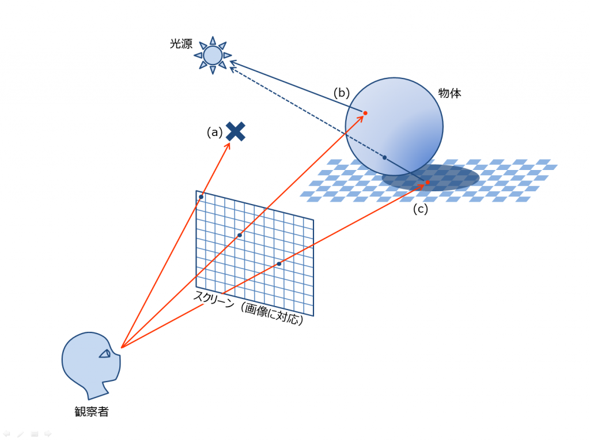
レイを飛ばすと、レイと3Dオブジェクトの交差判定を行います。これは線分(レイ)と三角形(ポリゴン)の交差判定です。そして、交差した場合、そのサーフェイスのカラーを決定します。決定されたカラーがピクセルのカラーになります。これを全ピクセルに対して行うことで、3DCGを画面上に表示することができます。
図17.2 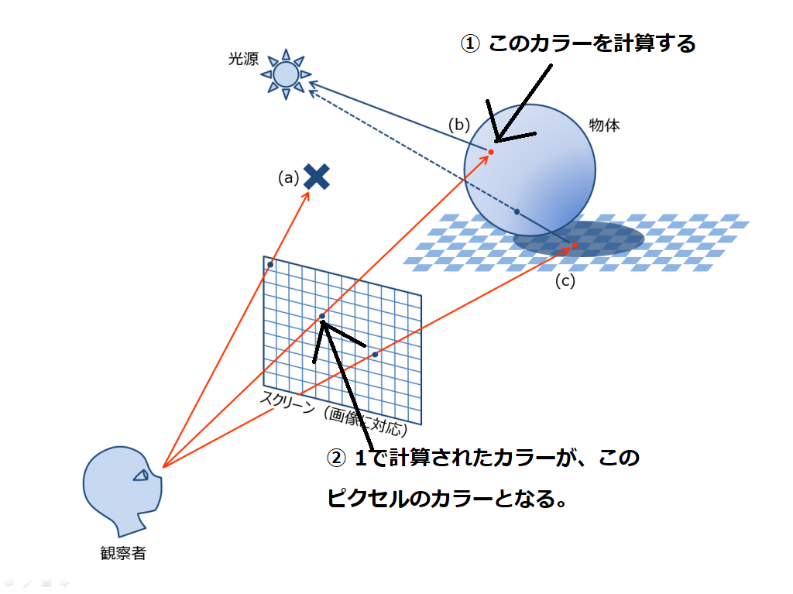
では、早速実際にプログラムを書いてレイトレを行ってみましょう。今回のサンプルはDXRが動作する必要があるため、GeForce GTX 1060 6GB以上のGPUが必要となります。Sample_17_01を立ち上げてください。
レイトレを行うためには、レイと３Ｄモデルのポリゴンとの交差判定を行う必要があるため、３Ｄモデルのポリゴンが登録されたレイトレワールドというものを構築する必要があります。ゲームのシーンのようなものだと考えてください。(図17.3)
図17.3
 レイトレワールドに登録するのは３Ｄモデルのポリゴン情報なので、頂点バッファやインデックスバッファといった情報です。ですので、ここまで勉強してきたラスタライザベースのモデルクラスを利用することができます。では、main.cppにリスト17.1のプログラムを入力してください。
レイトレワールドに登録するのは３Ｄモデルのポリゴン情報なので、頂点バッファやインデックスバッファといった情報です。ですので、ここまで勉強してきたラスタライザベースのモデルクラスを利用することができます。では、main.cppにリスト17.1のプログラムを入力してください。
[リスト17.1 main.cpp]
//step-1 人型モデルをレイトレワールドに追加する。
//まずは普通にモデルをロードする。
ModelInitData humanModelInitData;
humanModelInitData.m_tkmFilePath = "Assets/modelData/unityChan.tkm";
Model humanModel;
humanModel.Init(humanModelInitData);
//人型モデルをレイトレワールドに追加。
g_graphicsEngine->RegistModelToRaytracingWorld(humanModel);
Modelクラスを利用して、人型モデルのデータをロードしています。ロードができたら、GraphicsEngine::RegistModelToRaytracingWorld関数を利用して、モデルをレイトレワールドに登録しています。この関数の中でDirectXRaytracingでレイトレワールドを構築するためのジオメトリ情報を構築しています。(後述)
モデルをレイトレワールドに登録することができたら、最後にGraphicsEngine::BuildRaytracingWorld関数を呼び出して、レイトレワールド構築します。main.cppにリスト17.2のプログラムを入力してください。
[リスト17.2 main.cpp]
//step-2 登録されたモデルを使ってレイトレワールドを構築。
g_graphicsEngine->BuildRaytracingWorld(renderContext);
この関数の中で、DirectXRaytracingでレイトレ―シングを行うための各種データ構造が全て構築されています。
では、cpp側の最後のハンズオンです。レイトレワールドを構築することができたら、後はレイをディスパッチするだけです。main.cppにリスト17.3のプログラムを入力してください。
[リスト17.3 main.cpp]
//step-3 レイをディスパッチ。
g_graphicsEngine->DispatchRaytracing(renderContext);
続いてシェーダー側のコードです。DXRでは新たにいくつかのシェーダーが追加されています。今回のサンプルでは「レイと最も近いポリゴンとの衝突した時のシェーダー」のclosesthitシェーダーと、「レイがポリゴンが衝突しなかった時のシェーダー」missシェーダーを改造していきます。step-4ではclosesthitシェーダーを改造しましょう。Assets/shader/sample.fxを開いてリスト17.4のプログラムを入力してください。
[リスト17.4 sample.fx]
//step-4 レイと衝突した点の色を計算する。
float3 barycentrics;
barycentrics.x = 1.0f - attribs.barycentrics.x - attribs.barycentrics.y;
barycentrics.y = attribs.barycentrics.x;
barycentrics.z = attribs.barycentrics.y;
payload.color = barycentrics;
chs関数がclosesthitシェーダーのエントリーポイントとして登録されています。chs関数の引数として渡されているBuiltInTriangleIntersectionAttributes型のattrbs変数は衝突した三角形ポリゴンの情報を持っています。attribs.barycentricsには図17.4のように三角形ポリゴンのどこに衝突したかという情報(重心座標)が入っています。
図17.4
この重心座標は、0.0～1.0の範囲の値となっており、この後のハンズオンで実装する衝突した点の法線、UV情報などを取得する際に利用することになります。今回は重心座標をカラーとして出力しています。
最後にmissシェーダーを改造しましょう。リスト17.5のプログラムを入力してください。 [リスト17.5 sample.fx]
//step-5 レイがポリゴンが衝突しなかった時のカラーを計算する。
payload.color = float3(1.0f, 0.0f, 0.0f);
今回は赤いカラーを返すだけのシェーダーにしています。このミスシェーダーでは、例えば屋外のシーンであれば、天球マップなどのテクスチャをフェッチすることで、空を描画することができます。
ここまで実装できたらプログラムを実行してみてください。実装できていたら図17.5のようなプログラムが実行できます。
図17.5

さて、ピクセルの数分だけレイを飛ばして交差判定を行うためには、ゲームの世界の3Dモデルのポリゴンの情報が情報が必要となります。ポリゴンの情報はラスタライザ法と同じく、頂点バッファとインデックスバッファといった情報で表現されます。レイトレーシングでは、レイをディスパッチする前に、3Dモデルのポリゴン情報を登録して、レイトレワールドを構築しておく必要があります。DXRではレイトレワールドの構築に、Top level acceleration structure(TLAS)とBottom acceleration structure(BLAS)を使います。
TLASはインスタンス情報を扱うデータで、インスタンスのワールド行列などを保持しています。BLASは3Dモデルのジオメトリ情報を保持しています。図17.3を参照してください。
図17.3
 DXRではレイをディスパッチする前に、TLASとBLASを構築して、レイトレワールドを構築することで、レイとポリゴンの交差判定を行うことができます。
DXRではレイをディスパッチする前に、TLASとBLASを構築して、レイトレワールドを構築することで、レイとポリゴンの交差判定を行うことができます。
では、いよいよDXRを使用したサンプルプログラムを使って、レイトレーシングを行う方法を見ていきましょう。まず、先述したようにレイをディスパッチするためにはレイトレワールドを構築する必要があります。今回のサンプルでは、RaytracingEngine::BuildBottomLevelAS関数でBLAS、RaytracingEngine::BuildTopLevelAS関数でTLASを構築しています。BLASは3Dモデルのポリゴン情報となります。ポリゴン情報はラスタライザ法と同じく、頂点バッファとインデックスバッファを用いて表されます。TLASはインスタンスの情報で、インスタンスをワールド空間に変換するための情報等が保持されます。インスタンスをワールド空間に変換するのもラスタライザ法と同じく、行列を使用します。レイトレワールドが構築できたら、後はレイをディスパッチするだけです。レイのディスパッチはRaytracingEngine::Dispatch関数で行われています。レイがディスパッチされると、GPUでレイトレーシング用のレンダリングパイプラインが実行されます。
CPUからレイのディスパッチコールが実行されるとされるとGPUで次のようなレイトレーシング用のレンダリングパイプラインが実行されます。
では、各ステップを詳細に見ていきましょう。
レイを生成するためのシェーダーです。このシェーダーはピクセルの数分だけ実行され、一本のレイを生成します。レイを作ることができたら、HLSLのTraceRay関数を呼び出します。この関数の中では登録されているポリゴンとの交差判定が実行されます。
レイジェネレーションシェーダーで生成されたレイが何かのポリゴンと交差した場合、登録されているヒットシェーダーが呼び出されます。このシェーダーにはヒットしたポリゴンの情報が渡されます。このシェーダーで、ヒットしたポリゴンのカラーを決定することで、ピクセルのカラーが決まります。ラスタライザ法のピクセルシェーダーによく似たシェーダーになります。
レイジェネレーションシェーダーで生成されたレイがどのポリゴンとも交差しない場合、登録されているミスシェーダーが呼び出されます。このシェーダーでキューブマップなどに設定されている天球テクスチャ等を参照することで、空を表示することができます。
DXRでレイトレを行うためには下記のデータ構造を構築する必要があります。
では、これらのデータ構造について詳細に見ていきましょう。
BLASは前節でも勉強したように、レイトレワールドに登録するジオメトリ情報になります。この情報をグラフィックメモリ上に構築する必要があります。BLASを作成するためには、D3D12_RAYTRACING_GEOMETRY_DESCの配列を作成する必要があります。D3D12_RAYTRACING_GEOMETRY_DESCは頂点バッファやインデックスバッファなどの情報を設定することができます。リスト17.1はD3D12_RAYTRACING_GEOMETRY_DESCの配列を作成する疑似コードを示します。 [リスト17.1 D3D12_RAYTRACING_GEOMETRY_DESCの配列を作成する疑似コード]
//ジオメトリ情報の可変長配列を定義。
std::vector< D3D12_RAYTRACING_GEOMETRY_DESC > geometoryDescs;
//登録されているモデルデータからジオメトリ情報を引っ張ってくる。
for( int modelNo = 0; modelNo < m_models.size(); modelNo++ ){
//ジオメトリはマテリアル単位で別れているので、マテリアルの数分だけループを回す。
for( int materialNo = 0; materialNo < m_models.materials; materialNo++ ){
//これがレイトレ用のジオメトリ情報の構造体。
D3D12_RAYTRACING_GEOMETRY_DESC desc;
memset( &desc, 0, sizeof( desc );
//このジオメトリはトライアングルリスト。
desc.Type = D3D12_RAYTRACING_GEOMETRY_TYPE_TRIANGLES;
//変換行列はなし。
desc.Triangles.Transform3x4 = 0;
//頂点バッファの先頭アドレスを設定。
desc.Triangles.VertexBuffer.StartAddress = vertexBufferView.BufferLocation;
//1頂点のサイズを設定。
desc.Triangles.VertexBuffer.StrideInBytes = vertexBufferView.StrideInBytes;
//頂点数を設定。頂点数は、頂点バッファのサイズ÷１頂点のサイズで求まる。
desc.Triangles.VertexCount = vertexBufferView.SizeInBytes / vertexBufferView.StrideInBytes;
//頂点フォーマットを設定する。
desc.Triangles.VertexFormat = DXGI_FORMAT_R32G32B32_FLOAT;
//インデックスバッファの先頭アドレスを設定。
desc.Triangles.IndexBuffer = indexBufferView.BufferLocation;
//インデックスの数を設定。
desc.Triangles.IndexCount = mesh.m_indexBufferArray[i]->GetCount();
//インデックスバッファのフォーマットを設定。
desc.Triangles.IndexFormat = indexBufferView.Format;
//ジオメトリ情報を可変長配列にプッシュ。
geometoryDescs.push_back(desc);
}
}
D3D12_RAYTRACING_GEOMETRY_DESCの配列を作成することができたら、その情報を元にグラフィックメモリ上にBLASを作成します。リスト17.2はDirectXのAPIを利用して、BLASを作成する疑似コードです。 [リスト17.2 BLASを作成する疑似コード]
//ジオメトリ情報からグラフィックメモリ上にBLASを構築する。
for( int geometoryNo = 0; geometoryNo < geometoryDescs.size(); geometoryNo++ ){
D3D12_BUILD_RAYTRACING_ACCELERATION_STRUCTURE_INPUTS inputs;
memset( &inputs, 0, sizeof( inputs ) ) ;
//入力されるデータは配列。
inputs.DescsLayout = D3D12_ELEMENTS_LAYOUT_ARRAY;
//配列の要素数を設定。
inputs.NumDescs = 1;
//ジオメトリ情報のアドレスを設定。
inputs.pGeometryDescs = &instance.geometoryDesc;
//今から構築するデータはBLASだということを設定する。
inputs.Type = D3D12_RAYTRACING_ACCELERATION_STRUCTURE_TYPE_BOTTOM_LEVEL;
//BLASを作成するための準備ビルドのための情報をD3Dデバイスから取得する。
D3D12_RAYTRACING_ACCELERATION_STRUCTURE_PREBUILD_INFO info;
d3dDevice->GetRaytracingAccelerationStructurePrebuildInfo(&inputs, &info);
//BLASを作成するためのスクラッチバッファを作成する。
//スクラッチバッファは作業用のバッファといった感じ。
AccelerationStructureBuffers asbuffer;
asbuffer.pScratch = CreateBuffer(
d3dDevice,
info.ScratchDataSizeInBytes,
D3D12_RESOURCE_FLAG_ALLOW_UNORDERED_ACCESS,
D3D12_RESOURCE_STATE_COMMON,
kDefaultHeapProps
);
//BLASの完成品を構築するためのバッファを作成。
asbuffer.pResult = CreateBuffer(
d3dDevice,
info.ResultDataMaxSizeInBytes,
D3D12_RESOURCE_FLAG_ALLOW_UNORDERED_ACCESS,
D3D12_RESOURCE_STATE_RAYTRACING_ACCELERATION_STRUCTURE,
kDefaultHeapProps
);
//準備が整ったので、BLASをグラフィックメモリ上に作成する。
D3D12_BUILD_RAYTRACING_ACCELERATION_STRUCTURE_DESC asDesc = {};
//ジオメトリ情報を渡す。
asDesc.Inputs = inputs;
//スクラッチバッファのGPU上の仮想アドレスを設定。
asDesc.DestAccelerationStructureData = asbuffer.pResult->GetGPUVirtualAddress();
//BLASの完成品を記憶するためのバッファのGPU上の仮想アドレスを設定。
asDesc.ScratchAccelerationStructureData = asbuffer.pScratch->GetGPUVirtualAddress();
//グラフィックメモリ上に作成
d3dDevice.BuildRaytracingAccelerationStructure(&asDesc, 0, nullptr);
}
TLASはレイトレワールドに登録するインスタンスのワールド行列、使用するヒットシェーダーのIDなどの情報です。TLASもBLASと同様にグラフィックメモリ上に構築する必要があります。リスト17.3はTLASを構築するための事前準備を行う疑似コードです。 [リスト17.3 リスト17.3はTLASを構築するための事前準備を行う疑似コード]
//TLASを作成するための情報を設定する。
D3D12_BUILD_RAYTRACING_ACCELERATION_STRUCTURE_INPUTS inputs = {};
//作成されるデータは配列。
inputs.DescsLayout = D3D12_ELEMENTS_LAYOUT_ARRAY;
//TLASは更新可能データとして作成する。
inputs.Flags = D3D12_RAYTRACING_ACCELERATION_STRUCTURE_BUILD_FLAG_ALLOW_UPDATE;
//配列の要素数を設定。
inputs.NumDescs = m_instances.size();
//作成するのはTLASであることを設定する。
inputs.Type = D3D12_RAYTRACING_ACCELERATION_STRUCTURE_TYPE_TOP_LEVEL;
//TLASを作成するための事前ビルドの情報を取得。
D3D12_RAYTRACING_ACCELERATION_STRUCTURE_PREBUILD_INFO info;
d3dDevice->GetRaytracingAccelerationStructurePrebuildInfo(&inputs, &info);
AccelerationStructureBuffers tlasBuffers;
//構築のための計算用バッファを作成。
tlasBuffers.pScratch = CreateBuffer(
d3dDevice,
info.ScratchDataSizeInBytes,
D3D12_RESOURCE_FLAG_ALLOW_UNORDERED_ACCESS,
D3D12_RESOURCE_STATE_UNORDERED_ACCESS, kDefaultHeapProps);
//完成したTLASが記憶されるバッファを作成。
tlasBuffers.pResult = CreateBuffer(
d3dDevice,
info.ResultDataMaxSizeInBytes,
D3D12_RESOURCE_FLAG_ALLOW_UNORDERED_ACCESS,
D3D12_RESOURCE_STATE_RAYTRACING_ACCELERATION_STRUCTURE,
kDefaultHeapProps);
//インスタンスデータを記録するためのバッファを作成。
tlasBuffers.pInstanceDesc = CreateBuffer(
d3dDevice,
sizeof(D3D12_RAYTRACING_INSTANCE_DESC) * numInstance,
D3D12_RESOURCE_FLAG_NONE, D3D12_RESOURCE_STATE_GENERIC_READ,
kUploadHeapProps
);
計算用バッファの作成などの準備が整ったら、DirectXのAPIを使用してTLASを構築します。リスト17.4のプログラムがTLASを構築している疑似コードです。
[リスト17.4 TLASを構築している疑似コード]
//グラフィックメモリにインスタンスデータを構築する。
D3D12_RAYTRACING_INSTANCE_DESC* instanceDescs;
//CPUからグラフィックメモリにアクセスできるようにマップする。
tlasBuffers.pInstanceDesc->Map(0, nullptr, (void**)&instanceDescs);
ZeroMemory(instanceDescs, sizeof(D3D12_RAYTRACING_INSTANCE_DESC) * numInstance);
//単位行列。
Matrix matIdentity;
//インスタンスのデータを設定していく。
for (int i = 0; i < numInstance; i++) {
//インスタンスIDを設定。
instanceDescs[i].InstanceID = i;
//instanceDescs[i].InstanceContributionToHitGroupIndex = eHitGroup_PBRCameraRay;
//このインスタンスのジオメトリにレイが衝突したときに使用されるヒットシェーダーグループのインデックスを指定する。
//この説明は口述します。
instanceDescs[i].InstanceContributionToHitGroupIndex = (int)2;
instanceDescs[i].Flags = D3D12_RAYTRACING_INSTANCE_FLAG_NONE;
//対応するBLASの情報を設定する。
instanceDescs[i].AccelerationStructure = m_bottomLevelASBuffers[i].pResult->GetGPUVirtualAddress();
//変換行列を設定。これがインスタンスのワールド行列。
memcpy(instanceDescs[i].Transform, &matIdentity, sizeof(instanceDescs[i].Transform));
//マスクを設定する。
instanceDescs[i].InstanceMask = 0xFF;
}
//インスタンスデータをアンマップ。
tlasBuffers.pInstanceDesc->Unmap(0, nullptr);
//TLASを作成。
D3D12_BUILD_RAYTRACING_ACCELERATION_STRUCTURE_DESC asDesc = {};
//入力データを設定。
asDesc.Inputs = inputs;
//インスタンス情報のGPU上の仮想アドレスを設定。
asDesc.Inputs.InstanceDescs = m_topLevelASBuffers.pInstanceDesc->GetGPUVirtualAddress();
//TLAS構築時に使用される計算用バッファの仮想アドレスを設定。
asDesc.ScratchAccelerationStructureData = m_topLevelASBuffers.pScratch->GetGPUVirtualAddress();
//TLASの完成品が記憶させるGPU上の仮想アドレスを設定。
asDesc.DestAccelerationStructureData = m_topLevelASBuffers.pResult->GetGPUVirtualAddress();
//TLASを構築
rc.BuildRaytracingAccelerationStructure(&asDesc, 0, nullptr);
DirectXのAPIを利用して構築されるBLASとTLASは、単純なワールド行列やジオメトリ情報の配列というわけではありません。ここで構築されているデータ構造はレイとジオメトリの交差判定を高速に処理するためのBVHなど空間分割のデータ構造です。これは、レイトレ特有のものではなく、物理エンジンなどでも活用されているものです。空間分割に関する詳しい話は本書の主題から離れていきますので、割愛しますが、そのようなデータ構造が構築されていることは知っておくと良いかもしれません。
パイプラインステートオブジェクトはレイトレ用のレンダリングパイプラインを実行するための設定が記憶されているオブジェクトです。ラスタライザ用のレンダリングパイプラインであれば、下記のような設定が記憶されていました。
これらの設定はラスタライザとレイトレでは大きく異なります(そもそもレイトレにアルファブレンディングや深度テストといったものは不要になります)。レイトレ用のパイプラインステートではサブオブジェクトを作成していくという流れになります。作成する必要があるサブオブジェクトは下記になります。
|サブオブジェクト名|概要| |DXIL_LIBRARY|レイトレーシング用のシェーダーのバイトコード| |ヒットグループ|レイが交差したときに呼び出されるシェーダーグループ| |ローカルルートシグネチャ|各種シェーダーで利用されるルートシグネチャ| |グローバルルートシグネチャ|全てのシェーダーで使用されるルートシグネチャ| |Export Association|シェーダーとルートシグネチャを関連付けるオブジェクト| |シェーダー設定|Payloadのサイズや、エントリー関数の引数の数| |パイプライン設定|レイトレースの再帰処理の深さの設定などを行う|
これらのサブオブジェクトを必要な数だけ作成し、それらをまとめて、パイプラインステートオブジェクトを作成します。
DXIL_LIBRARYはシェーダーコードをこれは単にレイトレーシング用のシェーダーをコンパイルしたバイトコードを設定するだけです。リスト17.5はレイトレのシェーダーをロードしている疑似コードです。 [リスト17.5 レイトレのシェーダーをロードしている疑似コード]
//レイジェネレーション、ヒット、ミスシェーダーのエントリーポイントの情報を設定。
D3D12_EXPORT_DESC libExport[3];
libExport[0].Name = L"rayGen";
libExport[0].ExportToRename = nullptr;
libExport[0].Flags = D3D12_EXPORT_FLAG_NONE;
libExport[1].Name = L"chs";
libExport[1].ExportToRename = nullptr;
libExport[1].Flags = D3D12_EXPORT_FLAG_NONE;
libExport[2].Name = L"miss";
libExport[2].ExportToRename = nullptr;
libExport[2].Flags = D3D12_EXPORT_FLAG_NONE;
//レイトレシェーダーをロードする。
Shader raytraceShader;
raytraceShader.LoadRaytracing(L"Assets/shader/sample.fx");
//DXIL_LIBサブオブジェクトの設定を行う。
D3D12_DXIL_LIBRARY_DESC dxLibdesc;
auto pBlob = raytraceShader.GetCompiledDxcBlob();
//シェーダーのバイトコードのアドレスを設定。
dxLibdesc.DXILLibrary.pShaderBytecode = pBlob->GetBufferPointer();
//シェーダーのバイトコードのサイズを設定。
dxLibdesc.DXILLibrary.BytecodeLength = pBlob->GetBufferSize();
//エントリーポイントとなる関数の数を設定。
dxLibdesc.NumExports = 3;
//エントリーポイントを表すデータのアドレスを設定。
dxLibdesc.pExports = libExport;
//サブオブジェクトのタイプとしてDXIL_LIBRARYを設定する。
subobjects[0].Type = D3D12_STATE_SUBOBJECT_TYPE_DXIL_LIBRARY;
//サブオブジェクトの設定を表すデータのアドレスを代入する。
subobjects[0].pDesc = &dxLibdesc;
ヒットグループはIntersectionシェーダー、closesthitシェーダー、anyhitシェーダーをひとまとめにしたシェーダーです。これらの関数は全てシェーダー側でTraceRay関数を呼び出したときに、レイとジオメトリがヒットしたときに実行されるシェーダーです。表17.1は各種シェーダーの概要です。
|シェーダー名|概要| |closesthitシェーダー|レイとジオメトリが交差するとき、一番近いジオメトリの情報を引数として一度だけ呼ばれる| |anyhitシェーダー|レイとジオメトリが交差するときに毎回呼ばれる| |Intersectionシェーダー|レイとBLASの末端ノードのAABBとの交差が発声したときに呼ばれる| これらのシェーダーをまとめてヒットグループと呼びます。このチャプターでは、主にclosesthitシェーダーのみ扱っていきます。closesthitシェーダーは前述したようにサーフェイスのカラーを決定するピクセルシェーダーと同じような処理が記述されます。そのため、マテリアルによって、closesthitシェーダーは変更される可能性があります。そのため、ヒットグループは複数存在する可能性があります。リスト17.6のプログラムはヒットグループサブオブジェクトを生成している疑似コードです。
[リスト17.6 ヒットグループサブオブジェクトを生成している疑似コード]
//物理ベースマテリアル用のヒットグループサブオブジェクトを作成。
D3D12_HIT_GROUP_DESC pbrDesc = {};
//anyhitシェーダーのエントリーポイントの名前（物理ベースマテリアル）
pbrDesc.AnyHitShaderImport = L"PbrAny";
//closesthitシェーダーのエントリーポイントの名前（物理ベースマテリアル）
pbrDesc.ClosestHitShaderImport = L"PbrChs";
//intersectionシェーダーのエントリーポイントの名前（物理ベースマテリアル用）
pbrDesc.IntersectionShaderImport = L"PbrIs";
//ヒットグループの名前。
pbrDesc.HitGroupExport = L"pbrHitGroup";
//サブオブジェクトのタイプを設定。
subObject[1].Type = D3D12_STATE_SUBOBJECT_TYPE_HIT_GROUP;
//サブオブジェクトの情報データのアドレスを設定。
subObject[1].pDesc = &pbrDesc;
//セルルックマテリアル用のヒットグループサブオブジェクトを作成。
D3D12_HIT_GROUP_DESC celDesc = {};
//anyhitシェーダーのエントリーポイントの名前（セルルックマテリアル）
celDesc.AnyHitShaderImport = L"celAny";
//closesthitシェーダーのエントリーポイントの名前（セルルックマテリアル）
celDesc.ClosestHitShaderImport = L"celChs";
//intersectionシェーダーのエントリーポイントの名前（セルルックマテリアル）
celDesc.IntersectionShaderImport = L"celIs";
//ヒットグループの名前。
celDesc.HitGroupExport = L"celHitGroup";
//サブオブジェクトのタイプを設定。
subObject[2].Type = D3D12_STATE_SUBOBJECT_TYPE_HIT_GROUP;
//サブオブジェクトの情報データのアドレスを設定。
subObject[2].pDesc = &celDesc;
TLASでインスタンスデータを構築するときに、ヒットグループの番号を設定する箇所があったと思いますが、そこで設定している番号がこのヒットグループの番号になります。リスト17.6の疑似コードであれば、物理ベースマテリアル用のヒットグループは0番、セルルックマテリアル用のヒットグループは1番になります。
本文はそのまま。intなどコード文字。重要語句はボールドに。
[リスト0.☆ ソースコード]
test
test
{
// コメント
}
リストにするまでもないコード片は次のように。
見出しレベルは小見出しまで。

[コラムタイトル]